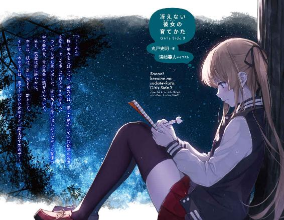
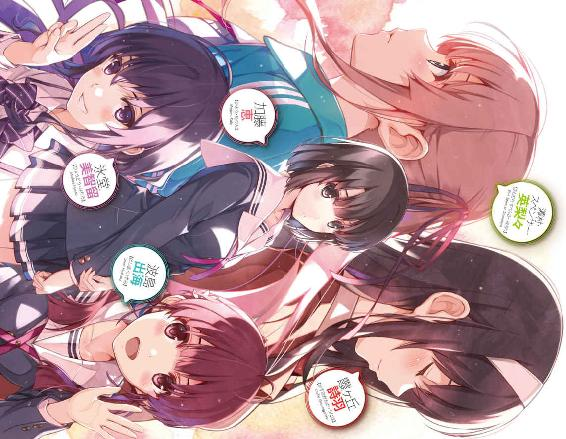
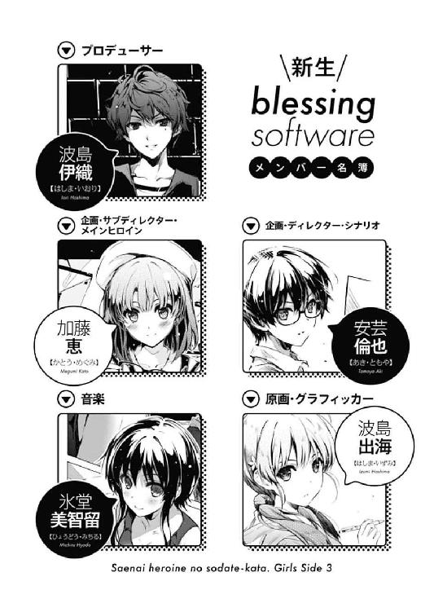
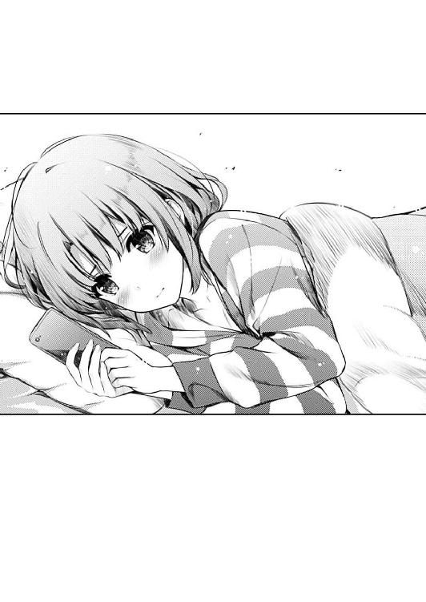
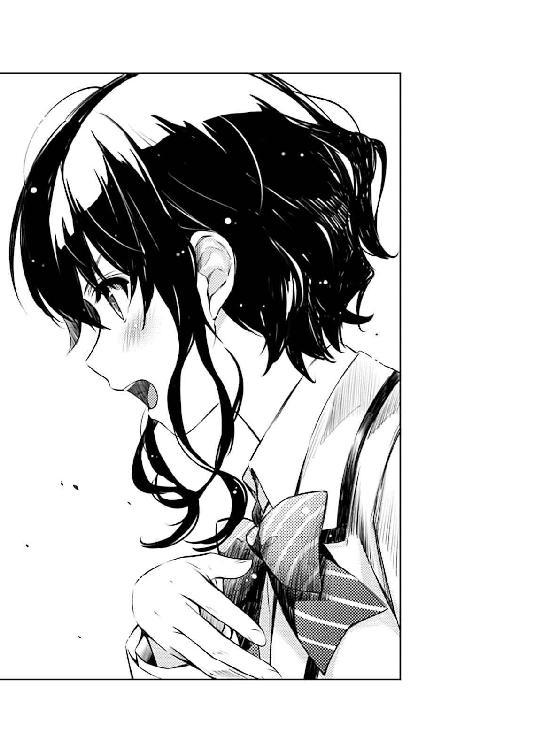
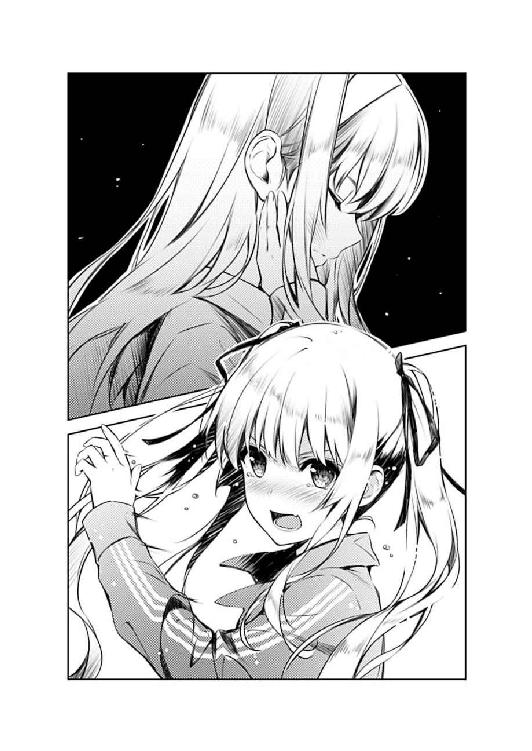
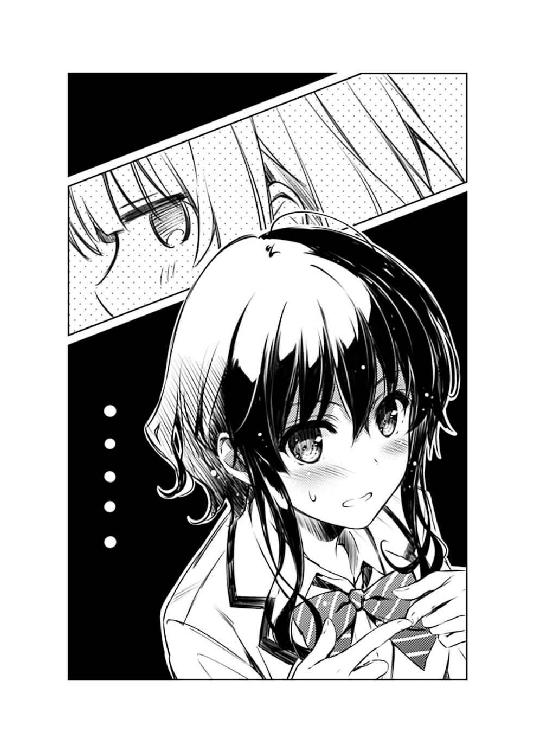
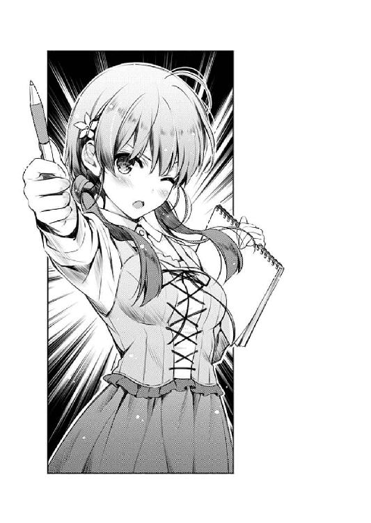
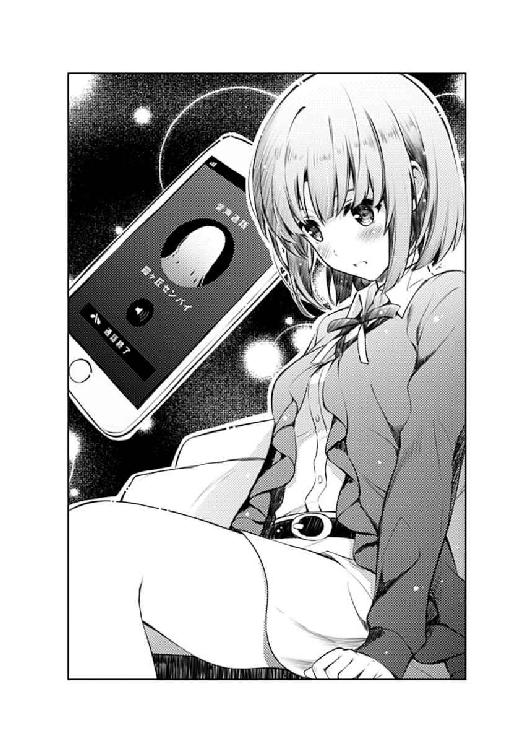
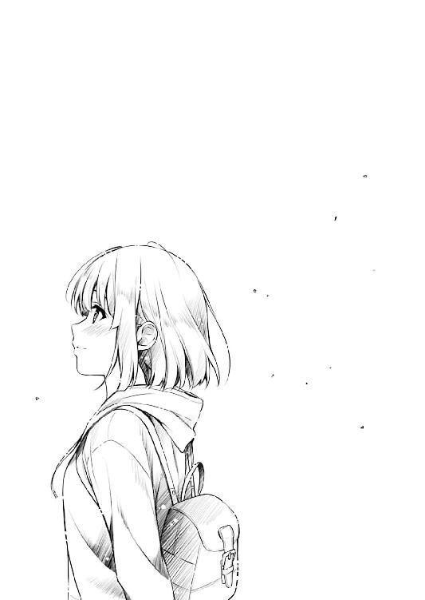

| 冴えない彼女の育てかた Girls Side 3 (富士見ファンタジア文庫) | |
| 丸戸 史明 | |
| Kadokawa / 富士見書房 (2017) | |


冴えない彼女の育てかた Girls Side3
丸戸史明

富士見ファンタジア文庫
本作品の全部または一部を無断で複製、転載、配信、送信したり、ホームページ上に転載したりすることを禁止します。また、本作品の内容を無断で改変、改ざん等を行うことも禁止します。
本作品購入時にご承諾いただいた規約により、有償・無償にかかわらず本作品を第三者に譲渡することはできません。
本作品を示すサムネイルなどのイメージ画像は、再ダウンロード時に予告なく変更される場合があります。
本作品の内容は、底本発行時の取材・執筆内容に基づきます。
本作品は縦書きでレイアウトされています。
また、ご覧になるリーディングシステムにより、表示の差が認められることがあります。

このプロローグは一二巻二章の後にお読みください
『恵さん！ お誕生日おめでとうございます！』
『あ、ありがと出海ちゃん』
九月下旬。日曜日の昼下がり。
眠るでもなく起きるでもなく、布団の中でずっともぞもぞしていた彼女を日常に引き戻したのは、枕元のスマホからのジングルだった。
『ちょっとだけ遅れちゃってごめんなさい！』
『お誕生日プレゼントの用意が間に合わなくって......』
『いいよ、そんな気を使ってくれなくても』
ベッドの上で仰向けに寝転がったまま、慣れた手つきでスマホを操作すると、画面には、友達にして後輩にして同じサークルに所属する仲間からの、バースデーメッセージ。
その〝誰かさんとは違って〟気の利いたサプライズに、彼女はほんの少しだけ表情をほころばせ、リズミカルに指で画面を叩くことでそのお祝いに応える。
『いいえ！ そんな不義理はできません！』
『という訳で、遅ればせながらお誕生日イラストを用意しました～♪』
『わ、嬉しい。本当にいいの？』
『あ、けど、出海ちゃん、原画の方は......』
そんな何気ないやり取りのおかげで、彼女の頭の中を覆っていた深い雲の隙間から、ようやく少しだけ陽の光が差し込んでくる。
何しろ、昨日は彼女にとって、人生最悪の日だった。
......いや、実際のところは、ちゃんとしたフォローもあったし、納得のいく理由の説明もあったし、心からの謝罪もあったし、そこまで深く落ち込む必要などないはずだった。
けれどそれでも、その時抱いてしまった残念な思いと、そこはかとない不安がないまぜになって、朝方までまったく眠れなかったのもまた事実で。

『な～んて。ごめんなさい、実はただの進捗報告です（汗』
「あ......」
そして、スマホの画面に表示された、そのイラストを見た瞬間......
彼女の、ようやく晴れそうになった心を、今度は切なさが覆い尽くす。
『今週からやっと、巡璃ルートのイベントＣＧに入ったんですよ！』
『でもごめんなさい。いきなり順番無視しちゃいました......』
『このイベントＣＧ、「巡璃19」のやつです』
『ほら、巡璃と主人公が、キス寸前までいっちゃうシーンの！』
そこには、一人の少女が描かれていた。
髪型はショートボブで。
その他、特に特徴を示す記号的なアイテムはそれほどなくて。
絵描きの実力も相まって、とても可愛く描かれていて。
そして、実のところ......彼女にとても似ていて。
けれどそれは当然で。
だって、その少女は、彼女たちのサークルが作っているゲームの登場人物。
......彼女をモデルにした、ゲームのメインヒロインなのだから。
『なんか、巡璃可愛いな～！ って、すっごく思っちゃって』
『そしたら、どうしても描きたくなっちゃったんですよ～』
「っ......」
手にしたスマホを取り落とし、彼女は、仰向けのまま両手で顔を覆う。
その、自分の誕生日を祝うイラストに......いや、自分たちのゲームを彩るイベントＣＧに、胸が締めつけられてしまったから。
自らが、シナリオライターと一緒にシチュエーションを再現し、メインヒロインとして演じてみせた、少女の......なんていうか、呆れるほどの〝女〟っぽさに。
『恵さん？』
『あの、どうですか？ このイラスト』
『気に入らなかったら、リテイク受け付けますけど？』
『恵さ～ん？』
あの時、自分はこんな表情をしていたのか。
......いや、自分は、こんな表情をしていたと思われていたのか。
............そして、こんな表情をしていたかもしれないのを、〝彼〟に見られていたのか。
「そんなこと、ないよ、出海ちゃん」
遅ればせながら、彼女の名は加藤恵。
「わたしは、こんなに〝恋〟してないって......っ」
昨日、主人公ならぬオタク男子に誕生日デートの約束をすっぽかされた、傷心のメインヒロイン、だった。
第一二・二・五話 第三次正妻戦争
「......よし、これで後輩ルートとイトコルートの線画はＯＫ。お疲れさま出海」
「いよぉぉぉ～し、おわったぁぁぁ～」
都心からちょっと西の方の、閑静な住宅街の中にある、とある新築の一軒家。
日曜九時過ぎという、無人島開拓も世界の果てへの旅も終わった頃、その一軒家の二階の部屋から、少女の快哉の叫びが響き渡った。
まぁ、近所迷惑にならない程度の控えめさをちゃんと守りつつではあったけれど。
「ま、ちょっとクオリティが気になるけどね......」
「え？ まずいところあった？ 言ってくれれば直すよお兄ちゃん......じゃなくてディレクター」
「逆だよ。そもそも想定してた力の入れ方を超えてる。いわゆる過剰品質ってやつだ......特に後輩ヒロインの描き込み」
「......あ～、それはほら、えっと、年下巨乳なキャラデザの勝利っていうか、素直で可愛い性格設定の勝利っていうか～」
で、そんなふうに、言い訳の中に自己正当化と自慢を盛り込む、巨乳で可愛い女の子の名は、波島出海。
私立豊ヶ崎学園の一年生にして、ゲーム制作サークル『blessing software』のキャラクターデザイン・原画担当にして、この部屋の主にして、数時間前に恵とＬＩＮＥで話をしていた少女だ。
「まぁ、今のところはオンスケだし、これ以上はとやかく言わないけどさ」
「で、でしょでしょ？」
「でも、この気合が入った線画を塗る時にも、ちゃんとスケジュール通りに仕上げられるかい？ また変に気合を入れて、想定以上にクオリティにこだわるあまり、どんどん遅れていくことのないようにね？」
「......それ思いっきりこれ以上とやかく言ってるんだけどお兄ちゃん」
「だいたい、線画なんてものは、塗るためのガイドラインに過ぎないんだから割り切ってシンプルに仕上げても構わないんだ。僕の知る商業メーカーの中にも、超絶グラフィッカーのおかげで実力があると勘違いされて過剰に持ち上げられている人気原画家なんてのは枚挙にいとまが......」
「......それ思いっきり今言わなくてもいいことじゃないかなお兄ちゃん」
そして、そんなふうに、説教の中に愚痴と某業界暗黒譚を盛り込む茶髪でイケメンな青年の名は、波島伊織。
都立桜遼高校の三年生にして、ゲーム制作サークル『blessing software』のプロデューサー兼ディレクターにして、出海の二つ年上の兄だ。
「さて、それじゃ出海には、週明けから予定通り、メインヒロインルートの原画作業に入ってもら......」
「巡璃ルート楽しみ～！ もう、今できてるシナリオのところだけでもキュンキュンしっぱなしだよ～！」
「......ま、色々と順調なようでなによりだね、ある意味」
と、伊織は手元にあった、出海がいつの間にか完成させていた巡璃ルートの原画を眺め、微妙な苦笑を漏らす。
確かに、今のところ、メインヒロイン、叶巡璃ルートは〝色々と〟順調だった。
シナリオの進捗は、一時期は停滞が見られたものの、最近になって、そのブランクを埋めて余りある速度で、毎日のようにテキストが届くようになり。
しかも、その内容も、出海の口を借りるまでもなく『キュンキュンしっぱなし』なクオリティで。
さらに、そのシナリオに引っ張られた出海の描く巡璃が......この初描きの一枚目を見るだけでも、もはや勝利は約束されていて。
これはもう、キャラ造型もビジュアルも、サークル代表の口を借りるまでもなく、まさにメインオブメインヒロイン......
「あ、そういえば知ってるお兄ちゃん？ 紅坂朱音さんが倒れたって......」
「......それ、誰に聞いたんだい？」
と、悪代官顔で皮算用に胸を膨らませていた伊織は、しかし出海の口からその名前が出た途端、緩んでいた表情を引き締め、眉をひそめた。
「あ、恵さんから......倫也先輩のところに連絡が来たんだって」
「倫也君......に？」
出海のもたらした情報そのものについては、もちろん、伊織はとっくに摑んでいた。
紅坂朱音──
伊織がかつて所属していた超大手サークル『rouge en rouge』の創設者にして、商業界においても多大なる成功を収めている、スーパークリエイター。
けれど伊織においては、そのクリエイター的な側面よりも、プロデューサー的な側面において多大なる影響を受けた、『売るために手段を選ばない』偉大なる師匠。
そんなモンスターが、働き過ぎか鬼の霍乱か、つい先日、脳梗塞で倒れて病院に担ぎ込まれたというのは、伊織が様々な方面に張っている人脈ネットワークの複数から入ってきていた。
けれど、そんな、ゴシップ誌で『事情通のＡ氏』とか紹介されてそうな伊織にさえも、一つだけ摑みきれていなかったサプライズが含まれていた。
それこそ、たった今、出海によってもたらされた、彼の前所属先のボスと、現所属先のボスとの〝知られざる関係〟だった。
※ ※ ※
「あ～、なんかシナリオ作りのこととかで相談に乗ってもらってたらしいよ」
「と、倫也先輩が、あの紅坂朱音にっ!?」
そして週明けの月曜の放課後。
夕方の、いつものログハウス風の喫茶店では、学校帰りの三年生と一年生が仲よくテーブルで向かい合って、大して色っぽくなくて少しだけ深刻な噂話に花を咲かせていた。
「じゃ、じゃあ、今日、さっさと帰っちゃったのは、紅坂さんのお見舞いに行ってるからなんですかね？」
「それは多分違うと思うよ？ お見舞いなら土曜に行ってきてたし、その時に命に別状はないって聞いたみたいだし」
「なぁんだぁ......じゃあ、今日、帰りに誘えばよかったですね～」
「あ、え～と......それはほら、今ちょうどメインシナリオが佳境だし」
倫也が、恵に声を掛けずにそそくさと帰ったのは、多分、土曜の恵との電話の約束を守って、しばらく距離を置いているからだという推測は容易に成り立ったけれど......
ただ、それを馬鹿正直に伝えてしまうほどには、恵は、目の前の後輩の少女に比べて純粋でも正直でもなかった。
「そ、それにしても、それにしてもっ！ 紅坂朱音に指導してもらうなんて凄いですよ倫也先輩！ これって神シナリオになっちゃいませんかねっ！」
「あ～、まぁ、そうだね～」
そんな訳で、その辺りの機微を理解するにはまだまだ二年足りない出海が、あっさり話を紅坂朱音に戻した途端、前の話などなかったかのようにさらっと適当に相槌を打つ恵の方は、さすがといえばさすがの腹黒......フラットさだった。
「そっかぁ、最近の巡璃シナリオが冴えまくってるのって、紅坂朱音の特訓を受けてたからなんですね～」
「......そうかなぁ？ 別に、少し教えてもらったからって、そんなにすぐ影響が出たりするものじゃないと思うけど」
「でも現に出てますもん！ 『巡璃15』以降の、個別ルートに入ってからなんて、もうわたし、三行ごとに転げ回ってますから！ それも何度読んでも同じとこで！ あ～巡璃かわいい巡璃かわいいっ！」
「............あ、ありがと」
「？ どうして恵さんが感謝するんです？」
「あ～、いや、ええと......サブディレクターとして、原画担当の出海ちゃんにモチベーションを持ってもらえるのは至上の喜びというか、なんというか」
その出海の直球な絶賛は、恵の感覚や感情に、大きかったり小さかったり、恥ずかしかったり嬉しかったり、熱かったり寒かったり、痛かったりこそばゆかったりという、様々な影響を与えていたけれど。
それでも恵は『いやあのシナリオってほとんど二人でやったロールプレイそのまんまだから』などと口に出せるはずもなく、色々ともにょもにょしそうな顔面を抑え込み、あと滑りそうな口も抑え込みつつ、フラットを装う。
「ま、何はともあれ、あの超多忙な紅坂朱音が、わたしたちのサークルに協力してくれるなんてすごいことですよ！ あ～、そうと知ってれば、お兄ちゃんのお見舞いについていけばよかったなぁ」
「..................別に、そんな恐縮する必要ないんじゃないかなぁ」
「......恵、さん？」
が、こうして即座に暗黒......いや素に戻るのは、さすがのフラットの申し子というべきか。
「だって、わたしたちのサークルは向こうに負い目なんかないし。というか逆に、向こうはこっちのサークルにものすっごい借りがあるはずだし」
「あ、は、はい......」
半年前に途中加入した出海には、紅坂朱音と『blessing software』......というか、英梨々と詩羽の離脱の経緯は、客観的な事実しかわかっていない。
「確かに、紅坂さんって人は、業界的には凄い人なのかもしれないけど......そんなの、同人サークルでこぢんまりやってたわたしたちには、本当なら全然関係ないはずの人でさぁ......」
「その通りですごめんなさいわたし間違ってましたぁ！」
なので出海は、自分がどれだけ大きな地雷を踏んだのかは、情報からではなく本能だけで察知するしかなかった。
「嫌だなぁ、出海ちゃんは何も悪くないよ？ そんなふうに縮こまらないでよ」
「は、は、はい......すいません、恵さん」
......まぁ、その本能がとてつもなく大きな警鐘を鳴らしていたからこその、この全面撤退な訳だけれども。
「あ、でも、そういえばお兄ちゃんも、ちょっとだけ、今の恵さんと似たような反応してましたよ」
「え......？」
ただ、それはそれ、これはこれ......
「基本的には紅坂さんのこと心配してたんですけど、『倫也君と連絡取り合ってたなんて聞いてなかった』とか、『それはないんじゃないかなぁ朱音さん』とか、ブツブツ言ってたんですよ」
「お兄さんが......？」
いくら優れた察知能力があろうとも、所詮、波島出海は波島出海のままで。
「ええ、それで最後に『そんなことになってるなら、一言僕に相談してくれていれば』って......」
こうして、空気を読まずに、ナチュラルに人を最悪の方向に煽るのは、さすがの素直......いや率直の申し子というべきか。
「......相談してどうなるってものでもないんじゃないかなぁ」
「え......？」
だからまぁ、こうして一度踏んだ地雷をもう一度踏むなんてのもよくあることで......
「だって、これは紅坂さんと倫也くんの個人の問題なんだし、いくらサークルのプロデューサーだからって、そんなメンバーのプライベートを全て押さえておこうなんて、それは違うと思うけどなぁ」
「でも恵さん、さっき紅坂さんはサークルに借りがあるとかなんとか......」
「出海ちゃん」
「ふぇっ!?」
恵は、その瞬間、確かに笑顔だった。
「この話、どうでもいいことだし、もうやめよう？ ね？」
「は、は、はひっ！」
けれど出海には、目の前の、いつも優しい先輩のその笑顔の中に、絶対に覗き込んではいけない闇の底が顕現しかけているように感じられた。
いや、多分気のせいなんだけどね、多分。
※ ※ ※
「なるほど、どうでもいい、ね......」
「え、え～と、サークルにとってだよ？ 恵さん、個人的には紅坂さんのこと心配してたからね？」
そして、数時間後の波島邸。
今日も出海の部屋で、ディレクターと原画家の進捗会議が進む中......
ふと出海が口に出した、夕方の恵との会話内容に、伊織は、いつものようにフっと髪をかき上げ、スカした反応を返した。
「まぁ、確かに、加藤さんの言ってることは正しいさ......朱音さんはサークルメンバーじゃないし、僕らのゲーム制作には関係のないことだ」
「そ、そうだよね。確かに紅坂さんのことは心配だけど、でも、わたしたちはわたしたちで、自分にできることを一生懸命やるだけ......」
「......と、全員が足並み揃えてそう思っていれば、僕も余計な心配なんかしないんだけどねぇ」
「え......？」
そして、今度はそんな思わせぶりな言葉と共に、表情を微笑から憂慮のそれに変え、やっぱりフっと髪をかき上げる。
「忘れたのかい加藤さん......？」
「わたし出海......」
「忘れたのかい出海？ 朱音さんの手元には、『フィールズクロニクルⅩⅢ』があるんだよ？ つまり、彼女が倒れたということは、その制作に少なからず影響が出ているのは間違いないことなんだ」
「それは確かに......けど、それこそ、わたしたちが心配しても......」
「それってさ、とりもなおさず、霞詩子と、柏木エリの運命に大きな影響を及ぼす出来事なんだよ？ それを理解しているかい？」
言葉では訂正しつつも、語りかける相手をまったく訂正する気がなさそうに、伊織は今の状況を端的に表現してみせる。
「『フィールズクロニクルⅩⅢ』がこけたら、この作品に一年を捧げたあの二人にとって、間違いない大きなダメージになる。それを、看過できるのかな？」
「お兄ちゃん......そんなに心配してたの？ 霞ヶ丘先輩と澤村先輩のこと」
「まさかぁ。去年ならともかく、今の僕にとっては利害も何もないからね、あの二人は」
「じゃあ、どうしてそんなに......」
「ただね、僕が平気だとしても、倫也君が見過ごせるかなぁ？」
「え......？」
「朱音さんが倒れたことを知ってしまった......霞詩子と柏木エリが危機に陥ったことを知ってしまった倫也君は、今、何を思っているだろう？」
「あ......っ」
ようやく、伊織の語ろうとした問題の本質に気づいた出海は......
ついさっきまで雲の上だと思っていた危機が、一気に自分ごととして、目の前に暗雲として降りてきた感覚に囚われる。
「朱音さんではなく、霞詩子や柏木エリのことを思って、どういう行動に出るだろう？」
かつて、同じイベントで売り上げと出来を競ったライバルとして。
そして今、違うフィールドに立ちながらも、大きな目標として。
ずっと、ずっと、背中を追い続けてきた金髪の少女の勝気な表情が、出海の記憶に鮮明に蘇ってくる。
「いくつか可能性は思いつくけれど......でも、その中のどれを選び、どれほどの覚悟で臨むのか、僕には、それが読み切れない」
「お兄ちゃん......」
出海の呼びかけは、確かに言葉の上では伊織に向かっていたけれど。
でも、その言葉を本当に届けたい相手は、今、この場にはいなかった。
「だから、この話をおしまいにすることなんか、僕にはできる訳がない......」
そして伊織も......いや、こちらはさっきからずっと。
「それにしても......ウチの副代表は、そういった広い視野で物事を見れているのかな？」
この場にいない、自分とよく似たポジションの相手に、言霊を飛ばす。
「そうやって、あらゆる事実を考慮して、色んな可能性を想定して動くことこそが、ウチみたいな〝前しか見てない代表〟を支える人の役目なんじゃないかなぁ～？」
......その表情は、いつの間にかまた、憂いから、煽りに変わっていたけれど。
もちろん、言霊の伝え手である出海に、その本性を見せるようなことはしなかった。
※ ※ ※
「ふ、ふ、ふぅぅぅぅぅぅぅ～ん」
「あ、あ、あの～、恵さん......？」
でもって日が明けて火曜の昼休み。
かつては孤高の先輩の占有地だった学園の屋上のベンチで、弁当を広げながら会話を楽しむ恵と出海。
「そうなんだ......わたし副代表失格なんだ......」
「あ、あ、あの、何もそこまでは......」
......と表現するには、何故か二人の雰囲気は一触即発の不穏なものだったけれど。
「広い視野で物事を見れてないんだ......色んな可能性想定できてないんだ......それは大変だねぇ」
「だ、だからぁ！ 全部お兄ちゃんの意見ですから！ わたしがそう思ってる訳じゃないですから！」
恵の、とてもとても不穏な表情と口調に涙目で怯えつつ、それでも出海は、必死で恵をなだめようと、自分がただのメッセンジャーであることをことさら強調する。
......いや、そもそも彼女が空気を読んで、そのメッセンジャーという役職を放棄しさえすれば、こんな事態には陥らないのだけれど。
「大丈夫、大丈夫だよ。出海ちゃんは何も悪くない......真の敵は、他にいるから」
「敵とか言わないでくださいよぅ!? しかもラスボスっぽい煽りまで入れて！」
まぁ、それができないからこそ、彼女はその人当たりの良さを認められつつも、サークル内でも意外と恐れられている訳で。
「なんてね。ホント冗談だよ出海ちゃん」
「冗談ですねホントに冗談なんですね？ だったらお願いです恵さん二度と冗談でそういう顔と声しないでください一生のお願いです」
出海のガタガタ震える手に自分の手を重ね、恵は、今度こそ本当に優しげな表情を浮かべ、いつものあっさりした口調で諭すように語りかける。
「倫也くんとは、ちゃんとマメに会話してるから」
「そ、そうなんですか？」
「うん、確かに二人のこと、凄く心配してた。『フィールズクロニクル』どうなっちゃうんだろうって」
「で、でも、だったら余計に......」
「それでも約束したから」
「何を、ですか？」
「『他のことには目もくれずに、わたしたちのゲームに全力投球する』って、ね？」
「あ......」
ちなみに、恵が正確に記憶しているかは定かではないが、その約束を言語化したのは恵の方で、倫也の方は『わかってる』としか言っていない。
「だから、信じてあげようよ」
「恵さん......」
「信じてあげようよ、倫也くんのこと......」
けれど、確かに約束をしたのは事実だし、それは〝恵の中では〟信じるに値する、二人だけの誓いなのかもしれない。
だが......
「あ、そういえばお兄ちゃん、こうも言ってたなぁ」
「え、何て？」
「もし恵さんが『倫也くんを信じる』ってわざわざ強調しだしたら、それはきっと信じ切れてない証拠だって」
「................................................」
だが、今まで様々なサークルを渡り歩き、様々な人間関係のもつれを（自他共に）経験してきた伊織にとって、そんな感情の綻びを見つけるのは、同人誌の誤字を見つけるよりもよほど簡単なことで。
「あ、あれ？ あれ？ 恵さん？」
「あのさぁぁ出海ちゃん～」
「ひぃぃぃぃ～!?」
「わたし思うんだけどさぁ......そういう、人の揚げ足ばかり取るような言い方、すごく、すっごく良くないんじゃないかなぁ、人として」
「あ、あの、相手は一応わたしのお兄ちゃんなんですけど......」
「メンバーを信用しないプロデューサーの下には、結局最終的に誰も残らないと思うんだよねぇ......あ、だから前のサークルも辞めざるを得なくなっちゃったのかぁ」
「恵さぁぁぁぁぁ～ん！」
まぁでも、これも出海が馬鹿正直に言い出さなければこんな（以下略）。
※ ※ ※
「いいかい出海？ プロデューサーに必要なのは人としての信頼じゃない。組織を円滑に回していく能力だ」
で、さらに数時間後の波島邸、出海の部屋。
「確かに、感情論や精神論で強引に引っ張って大きな奇跡を起こすプロデューサーはいる......けれど、えてしてそういう人は、金や納期や品質なんかの問題が発生した途端、今まで慕ってきたメンバーをあっさり捨てて逃亡した挙句、しれっと別のサークルや会社を作って復活していたりする。僕は、今までにそういう例を何人も見てきている」
部屋の中をぐるぐる歩き回りつつ、恒例の髪かき上げとともに伊織が語るのは、サークルプロデューサーとしての矜持。
「だから、これは僕の持論だけど......プロデューサーに本当に必要なのはリーダーシップなんかじゃない。常に冷静に、問題の発生を検知し、素早くトラブルの芽を摘み、順調に事を運べる能力だ。それこそ、メンバー全員に嫌われてでもね」
「もう嫌だよぉぉそんなの直接恵さんに言ってよぉぉお兄ちゃん～！」
......けれどもう、そんな一見筋が通ったように思える論理も、これまでさんざん振り回されてきた出海にとっては、何一つ頭に入ってこなかったりして。
「あのさ出海、そもそも彼女が僕の意見を聞くと思うかい？」
「おかげでわたしの意見すら聞いてくれなくなっちゃったよ！」
頼りになる兄と、優しい年上の友人との深刻な対立構造（しかも全然ツンデレっぽくない）をとうとう目の当たりにしてしまった出海は（今まで気づいてなかったんかいというのはさておき）、涙目と涙声になりながらも、必死でよそ事......スマホに逃避していた。
「とにかく、だから僕はこのサークルに必要だと自負している......強引なリーダーの下で、もし彼が問題を起こしてしまった時、冷静に対応できる僕がね」
「............」
「......出海？」
兄の、長い長い演説がようやく終わっても、出海はもう、テーブルに突っ伏した顔を上げることはなかった。
とうとう、（余計な）メッセンジャーという自らの立場を捨て、相手に何も伝えず、相手から何も聞かず、ただ嵐が過ぎ去るのを待つばかりの......
「あ、返信来た」
「え？」
いや、そうではなかった。
『だから僕はこのサークルに必要だと自負している』
『もし彼が問題を起こした時、冷静に対応できる僕がね』
『......だそうです』
『へ～』
『意識高いんだね、出海ちゃんのお兄さん』
『でもそういうの、単なる思い込みっていうんじゃないかな』
「......ほう」
出海が伊織に差し出したのは、自らのＬＩＮＥのトーク画面だった。
まぁ、対話相手は言うまでもなく......
「何かコメントは？ お兄ちゃん」
そう、出海は、メッセンジャーという立場を捨てたのではなかった。
ただ、今までよりさらに純度の高い、真のメッセンジャーに......
まぁ要するに、単なる伝言板に成り下がっただけだった。
「思い込みとは言ってくれるねぇ......」
『思い込みとは言ってくれるねぇ......』
『ですって』
『でも、そういうサポートならわたしが』
『ううん、みんなで十分できるけどな』
『出海ちゃんと、氷堂さんと、わたしで』
『あ、あの～、だからお兄ちゃんも一応メンバー......』
『まぁ、そう言うだろうと思ったさ』
『でも、君たちは倫也君が何かしでかした時、冷静でいられるかな？』
『感情に流されて、最適な判断ができなくなるリスクはないだろうか？』
『できるよ』
『ちょ、ちょっと、お兄ちゃん......』
『できるに決まってる』
『反応早かったね』
『もう今の時点で感情的になってるように見えるけど』
『考えるまでもない質問だから、早く答えただけ』
『君たちは、倫也君を助けることはできるだろう』
『けれど、サークルを助けることはできるかな？』
『ゲーム制作を、きちんと流すことができるのかな？』
『だから、挑発しないでって......』
『......やっぱりこんな会話、無駄なんじゃないかなぁ』
『ああっ！ ごめんなさい恵さん！』
『ううん、出海ちゃんは全然悪くないよ』
『え、え～、これ言うのぉ？』
『あのすいません、今からの全部お兄ちゃんの言葉まんまですからね？』
『だから、もういちいち伝えてくれなくても』
『結局、感情に流されてしまうと思うけどな』
『泣き出して、倫也君を困らせたりさ』
『君は、見た目よりも相当重い彼女だしね』
『そんなことあるわけない』
『泣くなんてありえない』
『わたしは、めんどくさくない』
『倫也くんを困らせたりなんかしない』
『いい加減、そういう痛い思い込みやめて欲しい』
『......随分饒舌になったね』
『真実を言い当ててしまったのなら謝るよ』
『謝罪も会話もいらないです』
『失礼します』
『ああっ！ 恵さんっ！』
『ごめんなさい！ 明日、また学校で～！』
そしてこの一日後、時は、水曜夜を......
まぁ要するに、伊織の判定勝利の瞬間を迎えるのであった。
第一二・四・五話 冴えない彼女の育てかた around 30's side
「なぁ、お苑」
「何よ茜」
都心の東側、川沿いにそびえ立つ、高級ホテルもかくやという豪奢な、とある総合病院。
「腹減った。ピザ取ってくれ」
「も～、さっき夕飯食べたばかりでしょおばあちゃん」
その一室の、やはり高級ホテルの客室かと見紛うばかりの豪奢な病室にいるのは、嫁姑ではなく、同じ年の頃の患者と見舞客。
「あんな量で腹が膨れるか。この鬼嫁め」
ベッドに横たわっている、寝間着姿の長い黒髪の女性の名は、紅坂朱音（本名：高坂茜）。
ここ一○年でオタク業界を一気に席巻し、日々生産されるアニメやコミックで、その名を見ない日はないほどの仕事量と人気を誇る、超人クリエイター。
......なのだが、今は脳梗塞を患い、この病院で日々軟禁生活を送る、哀れな入院患者。
「にしても、驚いたわよ茜」
「何がだ？」
「あなたがＴＡＫＩ君と、あんなに大人げない喧嘩をするなんて......あ、大人げなさを否定してる訳じゃないの。あんたが狂犬だってのは業界全体の共通認識だし。けど、基本的に襲うのは業界人で、ユーザーには嚙みつかないって認識だったから」
「......お前は私を怒らせて早死にさせるために送り込まれたアサシンか何かか？」
そして、ベッドの脇の椅子に腰掛けている、黒スーツ姿のショートカットのこれまた黒髪の女性の名は、町田苑子。
業界そこそこ大手の不死川書店で、一○年ほど編集者を務め、現在は副編集長としてさらに上の地位を窺う......いや、日々奮闘する切れ者エディター。
......なのだが、今は本業よりも、脳梗塞を患った作家先生の面倒を見ることを最優先事項とさせられている、哀れな付添人。
「そもそも、最初に吹っかけてきたのは向こうだ。こっちのゲームの進捗をしつこく聞いてきたり、いちいち口出ししてきたり、勝手にキレたり......」
「でも、単なる〝ユーザーの戯言〟だったら、そんなものに耳を貸したりしないでしょう？ それって彼の言い分を〝耳が痛い重要な意見〟として受け止めてるってことでしょう？」
「......知るか」
そんな、患者と見舞客にして、作家と編集者にして、ついでに大学時代のサークル仲間な二人が話題にしているのは、つい数時間前の出来事について。
朱音の制作中のゲームにやたらと干渉してきた挙句、脳梗塞の患者と大喧嘩を繰り広げ、最終的にはそのゲームのディレクションの肩代わりまでも請け負っていった、分不相応にして意味不明な一般高校生について。
けれどまぁ、そんな面倒な事態を招いたのは、彼自身の暴走気味な性格もさることながら......
「そういえば茜、倒れた時も、ずっと彼のことを気にかけて、わざわざ連絡まで取ろうとしたんだって？ 何で？」
そう、自分が危機的状況だという事実が彼に伝わるような振る舞いをしてしまった朱音の方にも問題があった訳で。
「......特に理由はない。なんとなく気になっただけだ」
「登場人物の行動にもしっかりとしたロジックを求めるあんたが、自分の行動の理由づけを放棄するの？」
「本当に大した理由はない......ただ、先週、仕事以外で電話してきた唯一の人間が彼だったというだけだ」
「そのあんたの孤独な独身女の現実はさておくとして、何を話したの？」
つっかかっているのか、からかっているのか、貶めているのか。あるいはその全部が目的なのかわかりにくい旧友の物言いに、少しばかり心底嫌そうな顔を返したものの......
まぁ、それでも朱音は、そこそこ素直に一週間前の状況を振り返るべく額に手を当て、言葉を選ぶ。
「あいつのゲームの相談を受けていた。どうやらシナリオが進んでいないようだった」
「......結局、仕事以外の会話ってのも他人の仕事のことなのね」
「お前はどうしても私を『他に心を許せる友人も男もいない哀れな女』に括りたいようだが......」
「まぁいいや。で、それがずっと心に引っかかってたって訳？ そんなに深刻な内容だったの？」
「いや、その時本当に深刻だったのは、実は私の方でな」
「どういう意味？」
「ちょうど全身がふらついて立てなくなっていた時に、彼からの電話があったんだ」
「............は？」
「いや、今思えば、あれが最初の自覚症状だったんだな。はっはっは」
「茜ぇぇぇぇぇぇぇぇぇぇ～!?」
とはいえ、その、せっかく選んだ言葉も、町田に与えた衝撃を和らげることもなかったりして。
「あんた何それ！ 前から兆候あったってこと？ しかもその時、助けを呼べる状況だったってこと!?」
「まぁ、今から考えると、そうとも言えるな」
その、あまりにとぼけた物言いに、ここが病院ということも、朱音の今の状態も忘れ、責めてはいけないはずの病人の責任を追及する。
「そうとしか言えないじゃない！ なんでそこで安芸君に助けを求めなかったの!?」
「馬鹿かお苑は。そんなこと出来るか」
「どうしてよ！ 高校生の男の子に頼るのが恥ずかしかった？ アホなこと言ってんじゃないわよ！ 救急車呼んでくれって一言いえば済むことでしょうが！」
「呼ぶ訳ないだろう？」
「だから何でよ！」
けれど、そんな町田の理不尽な追及を......
「だって、私たちはゲームの話をしていたんだ」
「............は？」
それはもう、見事なまでに意味不明な言い訳で論破する。
「しかも、ギャルゲーで最も重要な、メインヒロインのシナリオについてだぞ？ その作品の出来を決定づける最大の要素だ。聞かない訳にはいかない」
「何馬鹿言ってんのよ......」
「いや、素人だからって馬鹿にしたものじゃないぞ？ 想像していたよりもずっと良く出来た企画だった」
「そういうこと言ってないぃぃぃ～！」
町田は、目の前の旧友を、今まで何度も『キ〇ガイクリエイター』と、愛情を込めて呼んでいた。
けれど今、自分のその認識が、あまりにガチで正しかったことを思い知り、背筋を寒くて熱いものが駆け巡る。
「まぁ待てお苑。ありゃメインルート次第で化けるんだよ......そうか、霞詩子の下で鍛えられてた訳だからなぁ。よく考えりゃ、書けても不思議じゃないんだ......」
「私ゃあんたの思考回路が不思議で仕方がないよ......」
ある時は全てのシリーズで百万部超えを達成する天才作家。
ある時は自作のメディアミックスを何が何でも成功させるゴリ押しプロデューサー。
そしてある時は、自分が気に入った人材を全て手に入れて、羽ばたかせたり押し潰したりする、スーパーワンマン社長。
しかしてその実体は......創作のためなら、それが自分の物であろうと他人の物であろうと全力を尽くし、作品に命すら捧げる......というか、命を捧げたことにすら気づかない、天然モノのクリエイター。
「茜......あんた、大学時代から何も変わってないじゃない......」
「そうかぁ？ あの頃なら何徹しても、こんなふうに入院することなんかあり得なかったけどなぁ」
そんな、齢三〇にしてボロボロの肉体を、老獪ともいえる精神力で動かしておきながら、判断力だけ子供並みというアンバランスな女性は......
自らの言うことを聞かない右手にリハビリ用のボールを握らせ、やはり子供のように無邪気に、握っては離しを繰り返していた。
その表情は、明らかに完治を信じていて、疑う様子など微塵も感じられなくて。
「ほら、大学の時だって、一週間徹夜して『フィールズクロニクルⅦ』レベル九九まで上げただろ？ チッチのアパートでさ」
「......そういえばあんた、私だけじゃなくて千歳にもそんな痛々しいあだ名つけてたわね」
そう、それは一○年以上前。
早応大一年生だった彼女たちが、漫研のコミケ参加にあたり、『新人三人だけで同人誌一冊』というノルマを課せられた夏休み。
合宿と称して、一人暮らしだった仲間の部屋に上がり込み、原稿そっちのけで新作ゲームに興じていた懐かしい日々。
「ノンストップでプレイしてるくせに、お前らクソゲークソゲーって馬鹿にしまくりでさ」
「良く言う。一番文句垂れてたの茜だったじゃない」
「私は前向きに『ここをこうすればもっと良くなる』って主張だったからいいんだ。お苑もチッチも、システムやシナリオをあげつらうばっかでさ。建設的じゃないんだよな～」
「そうそう。あんた途中で『文句ばっか言うならプレイするな！』ってキレちゃって」
「最後の方、ずっと会話してなかったよな～」
「なのに誰も帰らなくて、黙って交代でレベル上げしてね～」
「そしたらチッチが偶然裏ダンジョン見つけて......」
「みんな大興奮で抱き合ってね～。さっきまで口もきいてなかったのに」
「馬鹿だったなぁ、ウチら」
「あんたは今でも馬鹿だけどね」
そして、町田は思い出した......
高坂茜は、その頃から、創作論とか物語論とか、『わたしのかんがえたさいきょうのさくひん』を語らせたら、数時間は戻ってこない程の、厄介オタクだったということを。
「なぁ、お苑」
「何よ」
「なんかさ......こんなふうに、懐かしそうに昔語りしてるとさ......」
「あの頃に戻りたくなる？」
「いや、このままコロっと死んじまうフラグなんじゃないかって思えてくるよな」
「自分の人生まで〝物語として〟面白くしようとすんな馬鹿」
そして今でも、厄介オタクなのは、全然変わっていないということを。
「そういや、チッチもよく見舞いに来るけどさ、お前ら絶対にここでかち合わないのな。示し合わせてんの？」
「偶然よ偶然。お互い嫌いあってるからレーダーの感度がいいのね」
「お前ら、いつの間にそんな仲悪くなった？」
「あんたが中退してから色々あったのよ......」
「あれか？ 二人で同じ男を取り合ってビンタ合戦でもしたか？ なんなら詳しく話してみろ。原作料払うからさ」
「......残念ながらそんな色っぽい話はまるで見当たらないわねお互い。あと人の体験を勝手に作品化しようとするな」
「なんでお前ら二人とも男に縁ないんだよ。オタクだってこと以外はいい女だと思うんだけどなぁ」
「〝三人〟ともね......あんたこそ、そろそろ身の回りの世話をしてくれる無職で年下で顔しか取り柄のない男でも囲ったらどうなの？ 女性作家のステータスでしょそういうの」
「......お苑が女性クリエイターにどういう偏見を持っていても勝手だが、私が役立たずを側に置いて耐えられる人間だと思うか？」
「茜、あんたまだ言ってんの？ 理想のタイプは『クリエイターとして自分と並び立つ男』って」
「刺激を受けられない与えられないパートナーなんか存在する意味ないだろ？」
「......好みのハードル高いわ性格破綻してるわ、本当、あんたってどうしようもないわね」
「そんな難だらけの私と同じように男いない歴○年のお前らはもっとヤバいだろ」
そんな、とても副編集長と大作家のものとは思えない腐った大学生の会話を繰り広げるうちに、朱音の顔つきが徐々に変わっていく。
「そっか、霞詩子、また新シリーズ出すのか」
「ようやくあんたんとこのシナリオに一区切りついたしね。また余計なちょっかいかけられないように、二シリーズ回しで縛っておかないと」
「......お前それ本当にあいつのこと考えての采配なのか？」
「冗談よ。企画持ってきたの、詩ちゃんの方からなんだから」
「へ～、随分とやる気だな、霞センセ」
「内容もね、結構勝負してるわよ？ 霞詩子の新境地......ていうか本質？ 実は合うレーベルがウチになくて困ってるとこ」
「いよいよあいつも〝こっち〟の世界で生きてく覚悟ができたかな？」
「......そうやって嫌な笑い方しないでよ。しばらく渡さないわよ？」
「わかった、一年だけ待ってやる。その間に前のシリーズをアニメ化して終わらせろ」
「あんたやっぱこの病院で幽閉されてなさい」
普段はあまり見せることのない楽しげな表情から、普段はまったく見せることのない安らかな表情へと......
「あ～、ちょっと疲れたな」
「今日は色々あったからね......そろそろ休みなさい。あんたが眠るまではここにいるから」
「ああ、そうさせてもらうか......」
その、安らかな表情のまま、安らかな口調で、朱音は軽く目を閉じる。
「後は頼んだぞ、お苑」
「気は進まないけど頼まれました......ＴＡＫＩ君と一緒に頑張るわ」
町田の言う通り、今日は本当に色々あった。
早朝、病院を抜け出そうとした朱音を捕捉したのは、単なる顔見知りの男子高校生で。
そんな、単なる顔見知りが、あろうことか彼女の魂の作品に強引に介入してきて。
そして、彼女はその〝ありえない介入〟を、あろうことか受け入れて。
「喜べ。私が人に頭を下げるなんて一○年ぶりのことだ」
「一○年前って......商業デビューの時？」
「いや、初めてのアニメ化が決まった時だ。もう胸糞悪い記憶しか残ってないが」
「......あ～」
「今度こそ、後悔させるなよ？」
「人におんぶにだっこでその態度、尊敬に値するわ」
「ぬかせ」
その決断の陰には、苦渋や悔恨や心配や、そんな様々な負の感情が渦巻いていたけれど
それでも、最後に箱の底に残った希望は、なんだか、妙に輝いて見えて。
「......じゃあな、お苑」
「おやすみ、茜」
だから朱音は、心置きなく目を閉じた。
一○年ぶりに、自らの力〝以外〟を信じて。
「............」
「............」
「............」
「............」
「............」
「......茜？」
「............」
「ちょっと......」
「............」
「茜？ 茜！ 茜ってば！」
「......あのなぁお苑、いくら今の会話がフラグっぽかったからって、そう簡単に死ぬ訳ないだろ」
「そ、そ、そうよねぇぇぇぇぇぇぇ～！」
第一二・五・五話 Ota：CREATORS
「う～ん......」
九月下旬の木曜日。
昼間は残暑ともいえるほどの暖かさを感じられても、放課後ともなれば結構気温も下がってくる、夏から秋へと移行していく季節。
「うう～ん」
そんな、もう涼しいといっても差し支えない夕方の音楽室から聞こえてくるのは、アコースティックギターの途切れ途切れの旋律と、少女のため息。
そう、この作品内でギターとか音楽室とか言っている時点で容易に類推されると思われるが、ここは東京都に隣接したとある県の、とある女子高。
そして更に、容易に類推されると思われるが、今、その場所でその楽器を奏でているのは......
「お疲れ～！ あれ？ ミッチー？」
「あ～、トキ、お疲れ～」
そう、こちらも今、慌てて音楽室に入ってきた二人目の少女の紹介にもある通り、ミッチーこと、氷堂美智留。
県立椿姫女子高校の三年生にして、ゲーム制作サークル『blessing software』のＢＧＭの作曲と主題歌のボーカル担当にして、サークル代表である倫也のイトコたる少女。
「どしたのどしたの？ こんな早いなんて珍しいじゃん。いっつも皆のチューニングとウォーミングアップが終わってからノコノコ現れては、全然気にしてない態度でケラケラ笑ってわたしたちをイラっとさせるのが得意なはずのミッチーが」
「......ねぇトキ、あたしたち仲間だよね？ 愛してるよの『icy tail』だよね？」
ああ、そう。で、こちらの早口でわちゃわちゃと毒を吐き出した少女の方は、今、美智留が紹介したガールズバンド『icy tail』のギター担当、姫川時乃。
美智留と同じく椿姫女子の三年で、サイドポニーの髪を忙しなく揺らし、小動物的な生き急ぎ感を常に醸し出している、バンドのマスコット的存在だ。
「ま、それはそれとして、何してんの？ 作曲？」
そんな時乃は、今さらワガママお気楽娘の反論なんかに受けて立つような無意味なことはせず、美智留の目の前に立ててある譜面台を覗き込む。
「まぁね。してると言えばしてるし、してないと言えばな～んもしてない」
「......つまり、進んでない、と」
そこに書き込まれた、五線譜のありとあらゆる部分に踊る音符やコメントや、それらを上回るおびただしい数の×印や訂正線が、その戦いの激しさと苦しさを物語っていた。
「Ｂメロまでは昨夜のうちに上がったんだけどね～」
と、美智留は、いつも脳天気な彼女にしては珍しい気だるげな口調と表情と態度で、無造作に激しくギターをかき鳴らす。
「ってことは、サビで詰まってる訳？ 曲？ 詞？」
「両方～」
「......曲か詞か、どっちか先に上げたら？ ていうか普通曲が先でしょ」
「いやいやそれはないって。パァ～っと思い浮かんだのをガ～って言葉にしてジャ～ンって作らなきゃ、いい歌になんないよ」
「......そういう作り方してる人、ミッチー以外に聞いたことないんだけど」
そんな美智留の、ある意味天才的なソングライティング手法に呆れつつ、それでも時乃は、彼女の真っ赤な譜面の中に書き込まれた、ちょっとしたキーワードに反応する。
「エンディング......？」
「うん、ゲームの方の」
「って、それってこの前上げてなかったっけ？」
というか、時乃の記憶ではレコーディングまで済ませていた。
いつにも増して作曲家兼ボーカリストの指示が細かい上に厳しく、何度も何度もリテイクと罵声を浴び、何度も何度も心折れそうになりながら、日付が変わる寸前になんとか仕上げた珠玉の一曲だったはずだった。
「あ～、あれはあたしの......じゃなくて、イトコヒロインのエンディングテーマだから」
「ちょっと待って今さらっと色々気になること言ったよねミッチー!?」
時乃は、その美智留のたった数秒のコメントに、それこそ無限の可能性を感じざるを得なかった......もちろん、悪い意味で。
あの、まるで魔球を編み出すがごとき地獄の特訓は、実は作曲家兼ボーカリストの単なる私情だったのではないかとか。
しかもイトコヒロインの曲ということは、キャラクターの配置上、サブもサブの（以下検閲）にそこまでのリソースを割いてしまったのではないかとか。
そしてそして、わざわざ『イトコヒロイン』と、対象キャラクターを一人に絞り込んだということは......
「まさかミッチー......全ヒロインごとに一曲ずつエンディングテーマ、作る気？」
「え？ 普通そういうもんじゃないの？」
「普通エンディング曲は１つだよぅ!?」
そう、これからあの地獄が、あと四回も待っているということに他ならず。
「でもさぁ、この前参考に貸してもらったゲーム、プレイしてみたけど、なんかエンディングごとに違う歌が流れたよ？」
「......誰に、何を借りたのよ？」
その瞬間、時乃は、『このゲームをプレイさせたのは誰だぁ！』と、ゲームパッケージを持って厨房に怒鳴り込みたい衝動に駆られたが、ここはぐっと我慢して、つとめて冷静に、美智留へと問いかけた。
けれど、その答えは......
「あ、ごめんそれ貸したのあたしだ」
「エチカァァァァァァァァァァ～！」
美智留からではなく、たった今開いた音楽室の扉の方から聞こえてきた。
※ ※ ※
「や～、ミッチーがさぁ、『泣けるギャルゲー貸して』って言うもんだからさぁ......」
と、まるっきり悪びれもせず、だら～っと言い訳を始めたのは、『icy tail』のベース担当、水原叡智佳。
二人と同じく椿姫女子の三年。そばかす顔にショートカット。常に気だるげな態度で適当に生きている、バンドのトリックスター。
「いやほらそれはね？ あたしゲームとか素人だから、やっぱり一度はプレイしてみないとな～って」
「ミッチーの向上心は賞賛すべきものがあるけど、エチカの選んだサンプルは思いっきり問題あるでしょそれ！」
「や～、まさかあのミッチーがコンプするとはねぇ。あんなクソ長いゲーム......」
「あのねエチカ？ ミッチーたちが作ってるのは『気の合う仲間で集まって趣味で作ってる同人ゲーム』だからね？ 『お金かけ過ぎて制作費回収できずに会社傾かせる勘違い商業ゲーム』じゃないからね!?」
なお、ここでどんなタイトルが頭に浮かんだとしても、それは口にせず各人の心に封印しておくべきだということだけはここに主張しておきたく。
「まぁまぁトキさぁ、そんなに怒ってやんなって、エチカのこと」
「いやいやこいつが余計なこと吹き込んだせいで皆が地獄見たんだし。ていうか実行犯が主犯を庇ったところで被害者全然納得できないし！」
「でもさ......そのおかげで、ものすっごい刺激、受けたんだ。あたしたちのゲームにも、最高の曲、つけてやんなきゃって、誓えるほどに、さ」
「え？」
「ミッチー......？」
普段の美智留からは想像もつかない真摯な言葉に、時乃だけでなく叡智佳までもが驚きの表情で、いつもお気楽なはずのエースボーカルを見つめる。
「実はさ、エチカにゲーム借りた後、トモんちからもたくさんゲーム持ってったんだ。で、プレイしまくって、聴きまくってさ」
「ミ、ミッチーがぁ？」
「ギャルゲーを、たくさん......？」
「正直、ゲームそのものを楽しめたかどうかは微妙なところだけどさ......でも、音は、すっごく面白かったよ」
思えば、今日の美智留は、最初からおかし......いや、普段とは違っていた。
「ゲームの曲って、かなり自由だよね......シーンに寄り添ってさえいれば、曲調も、テンポも、ジャンルさえも何でもアリでさ」
バンドの曲もゲームの曲も、毎日のように新曲を上げてきては、自分だけはちゃっかり弾けるようになっていて、メンバーたちの習得が追いつかないのをからかうように笑っていたのに。
「ボーカルだって、ロックにポップスにアイドル系にメタルに、もう色々とチャレンジしまくりでさ」
「そうそう、確かにゲームって、尺の制約とか、あんまないもんね」
「メーカーの趣味が色濃く出るよねぇ～」
「ま、だから、逆にプレッシャーかかって、手が止まっちゃったんだけどさ」
けれど今は、そんな、明らかに才能を持て余していた彼女の姿はなく。
楽譜の上でもがき、ギターの弦でもがき、そして言葉の海でもがき。
「だって、こんなに面白い曲が出回ってる中で勝負するんだ......なら、せめてメインヒロインの曲だけは、今まで誰も体験したことのない、最高のモノにしなくちゃいけないじゃん......？」
「............」
「............」
実は、そのハードルは、かつてプロデューサーがシナリオライターに課したものと、図らずもまったく同じレベルのものだったけれど。
美智留は、誰からもそんな指示も要望も受けることなく、勝手に同じ結論に辿り着き、そして苦悩していた訳で。
その気づきこそは、彼女の天才の証なのか、それとも......
「ようやく一皮剝けたみたいだね、ミッチー......」
「......え？」
と、その答えは、時乃からでも叡智佳からでもなく、たった今開いた音楽室の扉の方から......
「いやランコこそ早く一皮剝けてよ？」
「あんた成績いいからリーダー任せてるけどさ～、言っとくけど一番下手だよ？」
「......みんな酷い」
※ ※ ※
「そ、それじゃ今日のところはさっ、悩めるミッチーのために、メインヒロインのエンディング曲作りをみんなで一緒に考えようってことで！」
「そ、そいつは頼もしいや！ みんなサポートよろしく～！」
「という訳だからさ～、ランコも来なよ～、そんな隅っこでいじけてないでさ～」
「......いい、ここで」
と、来て早々いきなり機嫌を損ねて音楽室の隅で寂しくドラムスティックと戯れているのは、『icy tail』のドラム担当、森丘藍子。
三人と同じく椿姫女子の三年。長い髪を後ろで結び、常に物静かな態度で（いつもは）冷静に生きている、バンドのリーダー。
「ま、まぁ、まずはミッチーの悩みを共有しないとね。とりあえず今できてるところまで弾いてみてくれない？」
「それもあるんだけどさトキ......まずは、皆でこのシナリオ読んでみてくれないかな？」
と、美智留が鞄から取り出したのは、分厚い書類の束。
「それってさぁ、もしかして、新作ゲームの？」
「うん、メインヒロインの叶巡璃ルート」
「......完成、してたの？」
しかもその束は、皺だらけで山ほどの付箋まで貼られていて、明らかに何度も読みこんだと思われて。
「ううん、まだ途中だけどさ......それでも、いいもの作るんだったら、早めに動いておかないとね」
そんな美智留の、本当に、今までからは想像もつかない、『いい曲を、いいゲームを作りたい』という強い意志に......
時乃や叡智佳だけでなく、拗ねていたはずの藍子までもが、真剣な表情で美智留の側に集う。
あ、それと、『icy tail』が全員揃ったここからの会話は、いつも通り時乃 叡智佳藍子の順ということで......
叡智佳藍子の順ということで......
「............」
「............」
「............」
「......どう？ みんな」
で、それからだいたい三○分。
シナリオの紙束が三人の間を何度も行き交い、美智留の主題歌披露（但し途中まで）も数回を数え......
三人が、示し合わせたようにため息をついた頃合いで、美智留が皆に問いかける。
「えっと......」
「ど～しよっか、これ？」
「う、う～ん」
......が、三人の反応は意外にも。
いや、実は美智留の想定通りに、なかなかに煮え切らないもので。
「いいよ？ 何言っても怒らないから。トモやあたしに気を遣わないで、思ったことそのまんま言っていいから」
「そうだなあ、そのさ、なんてゆっか......」
「キモい？」
「......痒い」
「うんうんっ、背中がムズムズする！」
「いい意味でも、悪い意味でもね～」
「......つまり、やっぱりキモい」
それでも、そんなふうに美智留に優しく背中を押され、三人は、そのシナリオを読んだ瞬間に感じた、生の〝違和感〟を口にする。
そして、そんな自然に彼女たちの口から零れ出た貴重な言霊たちに、美智留は......
「んだとぉ!?」
「やっぱ怒った～！」
「ほんっとミッチーいい加減なことばっか言う～」
「......わかってた」
まぁとりあえず、一度はお約束をかました。
「いや、確かにキュンキュンしたよ？ すっごく背中がムズムズしたよ？ 歌でもシナリオでも、ヒロインのコ、めっちゃ可愛いく表現されてるよ？」
「けどさ～、これってあたしたちが、ある程度ギャルゲー慣れしてるからだと思うんだよね～」
「......これはオタクじゃないと、ううん、オタクの中でも、美少女コンテンツが好きな人じゃないと響かない」
で、その後も結局お約束に留まらず鋭く睨みつけてくる美智留にビビりながらも、三人は率直に、そのシナリオと、途中までの曲を批評した。
「......なるほど、貴重な意見、ありがとう」
そして美智留の方も、最終的にはぶ～たれた表情を収め、素直にその声に耳を傾ける。
それでも......
「でもあたしは......『blessing software』は、このままの方向性で突っ走る」
どうしても、最後の一線を超えようと......いや、超えたところから、戻ってこようとはしなかった。
「ま、そりゃ確かに、同人だしね」
「そもそも、『美少女コンテンツが好きな人』向けの作品だし」
「......うん、ターゲット決まってるし、好きにやればいいと思う」
そして三人も、そんな美智留の意思表示に理解を示した。
けれど......
「いいや、あたしはこの歌を、この方向性のままで、誰にでも届けたいと思ってるよ？ 女の子でも、非オタでも、聴けば絶対に泣く曲にしたいって思ってるよ？」
美智留の方は、それでも三人に歩み寄る姿勢を見せようとはしなかった。
「え、え～？」
「それは......無理じゃね？」
「......そもそも、そんな所には届かない」
「うん、届かないかもしれない。
あたしたちの作品の、見た目だけで、作風だけで、評判だけで、
避けられるかもしれない」
「避けるのなら、それでいいよ......
けど、もし、まかり間違って触れてみたら、覚悟しろってんだ......
絶対に、絶対に、ヒロインに惚れさせてやる。
あたしの曲で、泣かせてやるからな......」
「え......」
「おい......」
「......ミッチー？」
そこにいたのは、いつもの陽気で元気で脳天気な美智留ではなかった。
「皆の言う通り、確かに、このシナリオも歌もキモいかもしんない......
けど、このキモさは、オタク臭いからじゃない。
純粋に、普通に、誰にでもキモいだけなんだよ。
今、自分たちの中にない、求めていない、気づいていないものだから。
......ただ、それだけなんだよ」
さっきまで、悩んで、迷って、人に頼っていたくせに......
そんな、弱いはずの立場にもかかわらず、いつしか目をギラつかせ、いつもみたいに友人たちの上に立ち。
「このシナリオはクサい。この歌は勘違いしてる。
けど、そういうのこそがドラマで、映画で、物語じゃん？
その気持ち悪さって、オタクだから匂うんじゃないよ。
ただ、皆と違う世界に入り込んでるから、勘違いしてるから出てるんだ」
「でさ、その世界にさ、
何も知らずに迷い込んできた一般人の心をぶん殴るのが面白いんじゃん？
ボコボコにして、強引に心の中に染み込ませるのが快感なんじゃん？
ライブだって同じじゃん？
カッコつけてギター弾いて、ナルシーな詞で歌って。
んなの、入り込めてない人から見れば、キモくて痒くて見てらんないよ。
......でも、そいつらに入り込ませて、そいつらをキモく変えるのが、
あたしたちの狙いじゃん？」
そして、いつもの勢いで、周囲を巻き込んで暴走し始める。
それはまるで......誰かの、いや、どこかの人種のように。
「あんたたちオタクは勘違いしてる......
いや、逆だな。もっと勘違いしてよ。
もっと、入り込んでよ。
一歩、引かないでよ......」
「入り込めって......？」
「このゲームの中に......？」
「......この、勘違いハーレム世界の中に？」
美智留の、それこそ痛々しさ満載の煽りに、三人は戸惑いの表情を浮かべる。
確かに〝彼女たち個人としては〟このゲームシナリオの中に浸るのは、そう難しいことではない。
十分に楽しめるし、実際に楽しんだし、萌えゲーとしてなら最高の部類に入ると絶賛することもできる。
けれど、この作品が『自分がオタクだからこそ、許容できる』という思い込みを捨てて、『オタクでなくても、誰でも許容できる』ことを信じるのは、正直キツかった。
何故なら、こういうゲームを楽しむ自分たちを、周囲がどんな目で見ているかを知っているから。
あの、戸惑いと、苦笑と、少しの嫌悪が混じった微妙な視線を、自分たちと同じ熱量に導くことなんか、不可能だと〝わかって〟いるから。
「そう！ 入り込むの！ その上で、この曲に、詞に、何が足りないのか、何を足すべきなのか、一緒に考えてよ！」
「............」
「............」
「............」
さっきまで散々煽っておきながら、今度はいきなり深々と頭を下げる美智留に......
三人は、さっき以上の戸惑いの表情を浮かべ、さらにお互いの戸惑いの表情を確認し、戸惑いを深くしていく。
けれど......
「いいんだね？ いつものわたしたちに、なっちゃって......」
「ミッチーを置いてきぼりにする、あたしたちになっちゃって、いいんだね......？」
「......知らないよ？ 本当に」

「是非に！」
それでも今は、自分たちのエースを......
やっとオタクに、創作に目覚めたクリエイターの卵を、信じて、育てるしかなかった。
ガールズバンド『icy tail』が、真の、オタクバンドへと羽ばたくためには......
※ ※ ※
「よしっ！ これでキャラ相関図も完成！」
「う～ん、こうして見ると壮観だねぇ......」
「......それじゃ、読み解いていこうか」
そこからの、三人の行動は早かった。
まずは物語の全体像を捉えるために、各ヒロインルートの大まかなあらすじと、キャラクターの相関図をホワイトボードに書き留める。
元々、シナリオライターの要望で、他のヒロインルートは既に読み込み、意見陳述までしていたこともあり、ここまでの対応は迅速だった。
そして、改めて各シナリオと、キャラクターの関係性を俯瞰的に眺め......
「てゆっか、人間関係ぐっちゃぐちゃ」
「主人公とヒロインだけでなく、ヒロイン同士の関係までめっちゃ入り組んでる......」
「......本当にこれ萌えゲー？」
その人間関係の複雑さに、まずは呆れた表情を浮かべる。
「だいたいこの主人公、なんか変じゃない？」
「このゲーム、巡璃がメインのはずだよねぇ？ な～んでこんなに先輩ヒロインと幼なじみヒロインがシナリオに関わってくる訳？」
「......しかも、かなり終盤まで」
そして、その主人公の節操のなさに、さらに微妙な表情を浮かべる。
「これだとメインヒロイン報われないよねぇ......」
「まぁ、その分必要以上にイチャイチャイチャイチャしまくってるから差し引きゼロかもしんないけど～」
「......逆に、後輩ヒロインとイトコヒロインが不遇じゃない？」
「う～ん、そうだね、シナリオ単体ではよく出来てると思うんだけど......」
「でも、他の三人の関係にはほとんど組み込まれてないしねぇ」
「......これだと、どうしてもサブ感が強くなる」
「ヒロインレースについていけてないよねぇ......」
「こんなに主人公のために一生懸命頑張ってるのにね～」
「......元気出しなよ、ミッチー」
「お前らちょっと表に出ろ」
そしてそして、某サブヒロインの報われなさに涙する......ことは許されなかった。
※ ※ ※
そんなこんなで、『icy tail』メンバーによる曲作り......に見せかけたシナリオ会議は、当然のように下校時間になっても決着はつかず、その後も場所を時乃の家に移し、夜を徹して行われた（当然翌日は全員遅刻）。
そして、そんな四人の熱い意見交換から生まれた結論は......
『やっぱ今の段階じゃ無理！』
『シナリオ完成しないと作れないよ～』
『......ラストが決まってから、また集まらない？』
『あ、やっぱそうなる？』
......という、身も蓋もないものだった。
ただそれでも、四人の共通見解として、左記の意見が上がったことだけは議事録に残しておこう。
『でもやっぱこれ、メインヒロインと主人公、このままくっつくとは思えないよね？』
『うんうん、絶対にあと一波乱あるわ～。この主人公やらかしそうだわ～』
『......その結果、本当にハッピーエンドになるかもわからない』
『あ、やっぱそう思う？』
ついでに後日談として......
その翌日、美智留は、詩羽から届いた一本の電話により、自分たちの洞察力が現実に追いついた勝利感を......
いや敗北感を味わうのであった。
インターミッションその１
■不死川アンデッドマガジン一一月号掲載用短編小説企画書（第一版）
二○××／九／×× 霞詩子
■テーマ：甘くて、ちょっとほろ苦い恋物語たち
・高校生の男女の瑞々しい恋模様を描いた青春純愛小説。
・非現実を排し、日常の何気ない物語として中高生の共感を得る。
・連作短編の体裁を取り、各話の登場人物や場所や時系列は緩やかに繫がる。
・また、ハッピーエンドだけでなく、悲恋や失恋等の苦い結末も用意する。
■登場人物（第一話のもの、二話以降は別途）：
主人公：
・女子、高校三年生。
・外交官の娘で、校内でも有名なお嬢様。
・美術部所属で、何度も展覧会に入選しているエース。
・校内で一番の有名人にして、全男子生徒の憧れの存在。
・かつては同級生（男子）のオタク仲間で、よく一緒に絵を描いていた。
・また、その頃は病弱で、よく寝込み、同級生を心配させていた。
・ある事件がもとで同級生と決別し、現在に至る。
同級生：
・男子、高校三年生。
・中流家庭に育った普通の少年。
・文芸部のたった一人の部員で、校内でも変わり者扱いされている。
・それでも成績は優秀で容姿も整っているため、隠れファンは多い。
・ヒロインとは小学校の入学式で知り合って以来の仲。
・実はヒロインの初恋の相手だが、いつしか疎遠になっている。
■ストーリー概要（第一話のもの、二話以降は別途）：
・都内にある、そこそこの有名私立高校。
・そこに通う主人公は、お嬢様として、そして展覧会に何度も入選するほどの
将来有望な画家として、近隣の高校生の間でも有名人だった。
・ある日、そんな主人公のもとに一人の同級生の男子生徒が声を掛けてくる。
『話があるから屋上に来て欲しい』という男子に、冷たくあしらうものの、
結局、彼の指定した待ち合わせ場所に行ってしまう主人公。
・現れた主人公に、彼は『俺の作品のイラストを描いて欲しい』と依頼する。
聞けば、彼は一月後に迫った学園祭に向けて、文芸部として小説を出版する予定で、
その表紙イラストと挿絵を主人公に依頼したかったのだと話す。
・最初は、学園祭での自分の展示作品のこともあり難色を示す主人公。
しかし、彼の書きかけの小説を読み、その内容に触発された彼女は、
結局、イラストを引き受けることになる。
・そしてそれから毎日、放課後を二人きりで過ごすことになる二人。
最初は反発しあっていたものの、二人で同じモノを創り、同じ目標を目指すうちに、
徐々に仲間意識が芽生えていく。
・そんな二人きりの時間が増えていくにつれ、二人は思い出していく......
かつて、漫画好きの一番近い友達として、二人で絵を描いては見せあっていた、
小学生時代のことを。
・そしてとうとう、学園祭に向けた小説が完成に近づき、
二人の距離がますます縮まった時。
彼女たちは、もう一つの懐かしくも忌まわしい記憶を呼びさまさざるを得なかった。
・一番近い友達が、一番遠い他人へと変わってしまった、あの事件のことを......
第一二・六・五話 竜虎、相討ち、相憐れみ......
「なら、わかったわ......澤村さんの説得は任せて」
「......いいの？」
「今夜中になんとかする。なんとかしてみせる」
「詩羽先輩......っ」
「だから、明日からは、いつもの......」
「いいえ、一年ぶりの、チーム再結成よ」
※ ※ ※
『こんばんは、澤村さん』
「......何よ、霞ヶ丘詩羽」
九月下旬の木曜日......もうすぐ金曜日になろうかという深夜。
街が見下ろせる小高い丘の上に建っている豪邸の、さらに一番よく夜の街並みが見下ろせる、二階のバルコニー。
その手すりに腕を掛け、今まさに夜景を眺めつつ携帯を耳に当て、気怠い声を零しているのは、澤村・スペンサー・英梨々。
私立豊ヶ崎学園の三年生にして、ゲーム制作サークル『blessing software』の〝元〟キャラクターデザイン・原画担当にして、この部屋の主。
『あれからどうしてるか、少し気になってね』
「どうもしないわよ......だいたい、まだそんなに経ってないでしょ」
そして、そんな英梨々の通話相手は、霞ヶ丘詩羽。
早応大学文学部一年生にして、ゲーム制作サークル『blessing software』の〝元〟シナリオ担当にして、英梨々の〝現〟パートナー。
そう、この、かつて〝同じサークルに所属して一緒に同人ゲームを作っていた絵描きと文章書き〟は、今では〝同じ会社からのオファーを受け一緒に商業ゲームを作っている絵描きと文章書き〟だったりして......
『実は、少しお話がしたいのだけれど、いいかしら？』
「何よ？ まだ作業も残ってるし、手短に頼むわよ？」
『そういう訳にもいかなくてね......とりあえず、会って話せないかしら？』
「会うって......あんた今どこにいるのよ？」
『あなたから垂直距離で五メートル、水平距離で三○メートルほどのところ』
「............なるほど」
言われるまま、英梨々が夜景から視線を少し下にずらすと、彼女の家の門の前で、軽く手を振っている黒髪ロングの女性が目に入った。
※ ※ ※
「ほら、コーヒー......砂糖とミルクはテーブルにあるから勝手にどうぞ」
「悪いわね、こんな夜遅くに上がり込んで」
絶景が見渡せるバルコニーから直接繫がっている英梨々の部屋。
最近では、訪れ慣れたその部屋の中で、詩羽はコーヒーカップを両手で包み込むように持ち、傍らのソファーに腰掛ける。
「ま～、あんたが傍若無人で無礼で図々しいのは今に始まったことじゃないしね～」
そして英梨々の方は、こちらも招き慣れた様子で、さっさと自分の机に戻り、来客をほったらかしにしてデッサン用の鉛筆を走らせ始める。
何しろ二人は、ここ最近では、ほぼ毎週にわたって、こうしてこの部屋で、お互いほとんど言葉を交わさずに一晩を過ごしているのだから。
けれど......
「それで、結論は出たの？」
「......だからぁ、まだ一時間も経ってないってさっき言ったじゃない」
さすがに今は、そういう充実した創作時間を満喫することもなく、詩羽は、早速本題に入る。
......多分、英梨々が、さすがに今は入って欲しくないと思っていたはずの本題に。
紅坂朱音が企画し、詩羽がシナリオ、英梨々が原画を担当する、ゲーム制作会社マルズの看板ＲＰＧシリーズ最新作『フィールズクロニクルⅩⅢ』は、ここ数日、開発が暗礁に乗り上げていた。
それというのも、この企画の一番の柱にして、メインクリエイター二人とマルズの橋渡しをしていた紅坂朱音が突如脳梗塞で倒れ、そこの連絡ラインがすっぱり途切れてしまっていたからで。
それが今日になって、ようやく先方との情報共有が復旧し、開発再開の目処が立った......までは良かったのだが。
その、紅坂朱音に成り代わり、マルズ側との窓口を引き受けてくれた功労者は、あろうことか、二人がかつて所属し、そして不義理にも二人揃って脱退したサークルの代表だったという見事なオチがついてしまっていたりして。
「でも、マスターアップまではもう時間がないわ。本来なら、あの場で決断すべきだったことよ」
「できる訳ないじゃない！ そんなに簡単なことである訳ないじゃない！」
その、気まずさや、やりにくさや、微妙な嬉しさや、他にも様々な感情が行き交ってしまう波乱の展開に、英梨々の感情はまだ追いつけていなかった。
〝あたし、倫也が側にいると描けない。〟
〝倫也も、あたしに無理やり描かせることができない。〟
〝だから、これ以上あたしがサークルに残ったら、共倒れになっちゃうの。〟
何故なら、英梨々はかつて、その幼なじみのサークル代表に向かって、こんな決別のメッセージを送ってしまったのだから。
だからもし、また彼に護られるようなことになってしまったら......
それでも、今まで通りの絵を描けるのか、自分にもわかっていないのだから。
「なんで、こうなるかなぁ......」
「それはまぁ、間違いなく紅坂朱音が倒れたせいね」
「そ、そう！ こうなったのも全部、あの女の......」
「けれど彼女を追い詰めたのは、私たちなのかもしれない......」
彼女たちのボスは、クライアントとの打ち合わせの最中に倒れたらしい。
そして、ちょうどその時の、いや、ここ最近の議題の全ては、暴走したシナリオと、クオリティに拘り過ぎる原画についてだったと人づてに聞いた。
どうやら二人は、ボスにして最大の敵の手のひらから、いつの間にか飛び立ち、その心臓......いや脳に刃を突き立てるまでに迫っていたらしかった。
「......だから何だって言うのよ？」
「......特に思うところはないわね」
まぁ、二人に、そんなつもりも自覚も全然なかったのだけれど。
というかそれは、勝手に彼女たちを護ろうとした朱音の自業自得だと今でも思っているけれど。
「ただね澤村さん......そもそも、誰か別の人の責任だったからといって、私たちが、ここで諦めていい理由になるの？」
「え......」
「今は、これからどうするかを私たちが決めなくちゃならない時じゃないの？」
「それは......」
「あなた、上に昇りつめることが目的じゃなかったの？」
「違う！ あたしの目的は、紅坂朱音を倒すことだった！」
「それじゃあ、目的は達成された？ こんな倒し方で満足？」
「............」
確かに、英梨々の目的は、図らずも達成されてしまった。
けれどそれは、求めていた勝利条件とは、あまりにもかけ離れていた。
二人が目指していたのは、『フィールズクロニクルⅩⅢ』を、神ゲーにすること。
その成果をもって、紅坂朱音に自分たちの力を認めさせること。
力ずくで、彼女の庇護と圧力を食い破ること。
けれど、ゲームが完成していない今はまだ、その戦いに、決着はついていない訳で......
※ ※ ※
日付は変わり、金曜日の深夜。
「......ねぇ、澤村さん」
「まだ決めてないわよ？」
「わかってるわよ......」
三○分ぶりの詩羽の問いかけは、英梨々の優柔不断の壁に、きっぱり跳ね返された。
それは、一部の人間しか知らない（けれど仲間なら誰でも知っている）英梨々の、才能とあまりにかけ離れた、臆病で、打たれ弱くて、けれど頑なな性格の賜物......いや負の遺産で。
「雑談よ、雑談。こうしてるのも暇だし、少し話し相手になって頂戴」
「暇なら、寝るか帰るかすればいいじゃない」
「そういうこと言わないで、ね？」
「しょうがないわね......」
どっちがしょうがないのやら......と思わないでもなかったけれど。
それでも詩羽は、いつもよりもゆっくりした口調で、英梨々の心を揉みほぐすように、優しく、軽く、語りかける。
「実はね、私、来月から、不死川で新作を立ち上げるの」
「こんなに忙しいのによくやるわね......『純情ヘクトパスカル』だって、まだまだ続くんでしょ？」
「とは言っても、こっちの仕事はもうすぐ終わりだし......他からオファーが来る前に、どうしてももう一本は決めておきたいって、町田さんに頭下げられちゃったし」
「あんたのこと囲い込む気満々ね、あの副編さん」
「ま、ここまで育ててくれた恩もあるしね......」
英梨々が、きちんと会話に食いついてきてくれたことに安堵しつつ......
けれど詩羽は、渇ききった喉をごくりと鳴らし、慎重に言葉を選ぶ。
「それに、小説向きの面白い企画思いついちゃったし......だったら、この機を逃すこともないかなって判断したの」
なぜなら、これから話すことは、本当は、雑談などではないのだから。
「......てことは、霞詩子の趣味全開の企画、ってこと？」
「さすがに二作連続で当てたし、今なら没にしないでしょ」
「いいわねぇ、霞詩子の趣味全開企画。完成したらサンプルよこしなさいよ？ もちろんサイン付きでね？」
詩羽の期待以上に、朗らかに話は進む。
詩羽の予想以上に、英梨々は〝霞詩子の新作〟に興味を示してくれる。
「そんな先の話じゃなくて......今、ここにある企画書、見てくれないかしら？」
......その反応をよりどころに、詩羽は、少しずつ、少しずつ、周囲に地雷を敷設する。
「えぇ～、いいよぉ、そういうのは」
「そんなこと言わないで。ちょっと悩んでるところもあるし、意見を聞きたいのよ」
「でもあたしは、あんたが一人で悩んで、やっとのことで完成させた、純度一○○パーセントの霞詩子節が読みたいんだもん」
そんな、どこかで聞いたような拒絶の言葉に、詩羽は思わず、泣きたくなるくらいに苦い笑みを零したけれど。
「大丈夫......たとえ内容を知っていても、ちゃんと完成品でも楽しませてみせるから」
「へぇ～、あんたにしちゃ、凄い自信ね」
「まぁ、売れる自信がある訳じゃないけれど......でも、少なくとも、今までの霞詩子作品のファンには、絶対に後悔させないわ」
それでも、まだまだ平静を装い、鞄の中から、二枚のＡ４の紙を取り出す。
震える手を必死で抑え込み、極力まで表情を消し、英梨々に差し出す。
「どうぞ？ 澤村さん」
「......わかった、わよ」
英梨々が渋々と、けれど明らかにわくわくした表情でその紙を受け取った時。
詩羽は、彼女とまるで対照的な心持ちで、その、運命の紙を手放す。
だってそれは、その企画書は......
一年以上かけて、やっと築き上げて、半年間、ずっと育んできた友情を......
たった一瞬で、欠片も残さずに瓦解させてしまうかもしれなかったのだから。
※ ※ ※
「今度は、今までと趣向を変えて、短編集なの」
「............」
その企画書は、本当に、大した文字数でもなかった。
「それに、まだ一話分のプロットしか上げていないのだけれど」
「............」
二枚の紙に、テーマと、登場人物（しかも二人分だけ）と、ストーリー概要（しかも短編一話分だけ）が簡潔に書き連ねられているだけで。
「でも、不死川アンデッドマガジンでの隔月連載枠がもらえたから、そこである程度溜まったら単行本化するって約束で」
「......っ」
だから、詩羽がこうして長々と語る前に、英梨々はとっくに読み終わっていてもいいはずで。
「あと、主人公を女の子にしてみたわ。ラノベ的にはかなり冒険してるし、もしかしたらファンタスティック文庫とは違うレーベルで出すかも......」
「......んなのよ」
「......どうしたの？ 澤村さん」
いや、実際には、あっという間に読み終わっていた。
ただ、その後、長い沈黙とともに、わなわな震えていただけで。
「なんなのよ、これ......っ」
「だから、新作小説の、第一話のプロット......」
「そんなこと聞いてんじゃないってわかってんでしょぉぉぉ～！」
だから、爆発するまでの時間なんて、ほんの一瞬だった。
そして、爆発してしまったら、もう、止めようがなかった。
「あ、あ、あんた......あんたあたしを見世物にする気!?」
「今さら何を言っているのかしら？ 私たち、もうとっくに見世物になっているじゃない......倫理君のシナリオで」
「そういう問題じゃないぃぃぃ～！」
詩羽の言っていることは、間違いなく筋が通っていたけれど。
けれど間違いなく、納得にはほど遠く。
なぜなら......
〝ちょっとほろ苦い恋物語〟
〝悲恋や失恋等の苦い結末も用意する〟
もう、そこで何を狙っているのかが、〝当事者〟には痛いほど伝わってしまうから。
ハッピーエンドが約束されている恋愛ゲームとは、訳が違うから。
そして、何しろ著者が、デビュー作でメインヒロインと主人公を引き裂いた、悲恋の伝道師、霞詩子なのだから......
「なんで、これをあたしに見せたの？ 書き上げるまで隠しておかなかったの......？」
それでも、英梨々は、創作者だから......
だから、詩羽が何をネタにしたって、誰をモデルにしたって、それはただ『頭のおかしなクリエイターの暴走』として、理解できてしまう。
けれど、わざわざそれを、事前にひけらかす露悪趣味は、さすがに納得できなくて。
「実はね、ストーリー概要の、そこから先がなかなか浮かばなくてね......」
「あんた、あんた、まさか......」
「だから、あなたの、〝ねじくれた昔話〟を聞きたいの......
あなたがこの九年間、彼をどう思ってきたか、なんてどうでもいい。
倫也君が九年前、あなたをどう思っていたか、それもどうでもいい。
ただ、あなた自身の、その時の、九年前の記憶、だけでいい。
九年前......あなたがどんなふうに、どんな気持ちで、
どうやって彼を見捨てたのかが知りたいの......」
「か、霞っ、か、か......詩羽ぁぁぁぁぁぁぁぁ ！」
！」
「っ......」
さすがに、その時の叫びには......
そして、その時の平手打ちには、ひとかけらの愛情も籠もってはいなかった。
ただ、純粋な憎しみと、激しい怒りに突き動かされ。
涙も流せずに、折れんばかりに歯を食いしばるしかできなかった。
「あんたのしてること......まるで、紅坂朱音よ......」
「それは......ものすごく光栄の至りだわ、澤村さん」
みるみる頰が赤く腫れていくのも厭わず、詩羽は、英梨々に凄絶な笑顔を向ける。
そう、それはまさに、今、英梨々が評したモンスターのように。
「そんな、そんな......そんなこと聞いて、なんになるっていうのよぉぉぉ～！」
英梨々の、喉を引き裂くような叫びは、もう、言葉としては聞き取れない。
それでも、その表情と響きだけで、十分すぎるほど伝わってしまう。
「もっと、もっと、上を目指したいの......殻を破りたいの......」
そしてそれでも......
そんな英梨々の迫力を目の当たりにしても、詩羽は、決して引き下がろうとしない。
「もっと、もっと、愛憎入り混じった......『純情ヘクトパスカル』とは全然違う、『恋するメトロノーム』よりももっと深い、純愛にチャレンジしてみたくなったの」
「だからって、だからって......なんで、あたしの......あたしと、倫也の......」
「あなたたちの、ねじくれ過ぎた関係は......〝当たる〟と思ったの」
「あああぁぁぁぁぁぁぁっ！」
「っ......」
先ほど右の頰を差し出したから......という訳ではなかったけれど。
とうとう、利き手を使うことすら厭わなくなった、英梨々の右の平手打ちが、詩羽の左頰を強く弾いた。
けれど、それでも......

「ここまで怒られちゃうと......頼みにくくなるわね」
「な、に、を......」
「表紙イラストを、あなたにお願いすることを、よ」
「っ」
霞ヶ丘詩羽は......いや、霞詩子は、また、右の頰を差し出してみせた。
「あんたおかしい......頭おかしいよ......っ」
「でも、二人にとって絶好のタイミングよ？ 何しろ『フィールズクロニクルⅩⅢ』が出た直後なんだもの。商業的にも、これは約束された勝利のコンビだわ」
「なめんなふざけんな○ね！」
「そう、その呪詛が聞きたかった......」
言葉とともに舌を出すと、詩羽は、口元についた血を舐め取る。
そして、もう一度、左頰を差し出す。
「九年前、あなたは誰かに、それと同じ言葉を唱えていたでしょう？
それは、あなたたちを虐めた同級生に？
それとも、あなたたちを救ってくれなかった先生に？
それとも、それとも......もしかしたら......」
「してない言ってない何もやってない！」
「あなたが彼を突き放した時、彼は、どんな顔をしていたの？
彼は、今あなたが言ったようなことを言ってこなかった？
だって小学生なのよ？ 全然言ってもおかしくないわ？
お互い純粋で、自分勝手で、残虐な子供なのよ？」
「やってないっていってんじゃん！」
「彼を、本当に嫌いになった瞬間はなかった？
彼に、本当に嫌われたと感じた瞬間はなかった？
その時彼が、どんな傷を負ったか想像したことある？
そのせいで、彼にどんな影響が出たか想像したことある？
その時あなたが、どんな傷を負ったか見せてくれない？
そのせいで、あなたに影響が出たか見せてくれない？
私に、二人の心情を想像させるまで詳細に話して。
私が、そのときの二人の心を文章化できるくらい、教えて」
「ふざけんな、ふざけんな、ふざけんなっ！」
それはもう、雑談でも、説得でもなく......取材だった。
作家、霞詩子の、取材される側の気持ちなどまるで考えない、愚かで、傲慢で、そして純粋なインタビューだった。
もう、止まれなかった。
どれだけ躊躇しても、苦悩しても、絶望しても。
それでも詩羽は、この道に......
ずっと、ずっと、悩み抜いて立てた作戦通りに、進むしかなかった。
「全部、吐き出しなさい、澤村さん......
前に、進みなさい」
だって彼女は、約束したのだから。
一番弟子にして、後輩の男の子と、約束をしてしまったのだから。
英梨々の説得と、チームの再結成を。
つまり......
「そして......諦めなさい」
「そんなことあんたに言われる筋合いはないぃぃぃ～！」
何もかもを、終わらせるということを。
※ ※ ※
「っ、ぅ、ぅ、ぅぇぇぇぇ......っ」
「......そろそろ泣き止みなさいよ」
そして、三○分が経過して。
けれど状況は何も変わらず、部屋の中にはずっと、英梨々のすすり泣きの声が響くばかりで。
「ぇぐっ、ぅ、ぅぁぁ......な、なんで、なんで......っ」
「なんで、何？」
「なんで、あだじを虐めるのぉ......っ、どうじで、ごんだ酷いことするのぉっ、あ、あんだど......あんだのじでるこどぉっ、全然っ、わがんだいょぉっ」
そして、久しぶりに発せられた声は、完全に鼻に詰まって物凄く不明瞭で。
けれど、とてつもなくはっきり意味が伝わる怨嗟の声だった。
ただ、それだけの呪いの声をぶつけておきながら......
英梨々は、それでも詩羽をこの部屋から、この家から排除することをしなかった。
そして、これだけ酷い言葉で突き放しておきながら......
詩羽は、それでも英梨々を手放さず、自分の側に留めておいたままだった。
「せ、せっかく......せっかく仲直りしたのにっ......また、繫がったのに......」
「確かに繫がったわね......幼なじみの関係と、作者とファンの関係と、病弱な女の子と心配性な男の子の関係がね」
そこに一つだけ欠けた関係性があることを、二人は言葉にせずとも共有し。
だからまた、英梨々は詩羽を睨みつけ、詩羽は英梨々の視線を無視する。
「なのに、なんで、なんで......っ」
「あなたと、彼がそうならなかった理由は、やっぱり、そこにあるって思っているからよ」
その、指示語だらけで、隠しワードまで含まれていて、謎かけのような問答を。
二人は、やっぱり痛すぎるほどに共有して、お互いに傷ついていく。
「だから、知りたいって思った」
「知って、なんになるって、いうのよぅ」
「さっきから言っているでしょう？ 愚かな男女の喜劇として昇華しようと思ったのよ」
「あ、あたしは......あたしは何ひとつ間違ったことなんかしてないっ！」
「あなたの、そのメンタリティは敬服に値するし、クリエイターとして重要な資質だし、大事にしてあげたいし、個人的には好きだけど......」
「けど......？」
「大間違いよ」
「っ......」
そうやって、お互い、身勝手で、手前勝手で、自分勝手な理屈をこね回す。
片方は、自分含め誰も悪くないと主張し。
片方は、自分含め誰もが悪いと主張し。
一八○度違う方向へと突き進む平行線は、どんどんその距離を広げていく。
「いくらあなたが間違っていないって信じ込んでいても、実際、彼は呪縛に囚われた......どれだけ手が届きそうでも、どれだけ想いが伝わりそうでも、いつかどこかで裏切られるかもしれないという、臆病な呪縛にね」
「何よそれ......何よ、それっ」
「近づけば近づくほど、近づこうとすれば近づこうとするほど、近づきたいと思えば近づきたいと思うほど、報われなかった時の......ううん、逆方向に報われてしまった時の傷は、深くて、痛くて、苦しいでしょう？」
「っ......」
「それこそ、二度と、近づけなくなるくらいに」
「それが、それが......全部、あたしがしたことだっていうの？」
「だって、あなたたちは、九年前、誰よりも近かった。
セカイ系の主人公とヒロインのように、
閉ざされた世界に逃げることができたはずだった。
......なのに、あなたは、そうしなかった」
「違う！ 逃げなかったのはあいつの方！
みんなに忘れられるまで、静かにしてればよかったのに！
なのにあいつは、いちいち話を大きくして......っ」
「彼は、正々堂々と、あなたと友達で、オタクでいることを、
皆に知らしめようとした。
あなたと一緒にいる場所を守ろうとした」
「そんなの、隠れてこそこそやればよかった。
どうして皆に認められる必要があるの？
どうして、先生や皆に、あたしの趣味を知られなければいけないの？
いいじゃない、別に、隠しててもいいじゃない。
二人だけがわかっていれば、いいじゃない。
普通に、皆とは適当に波風立たないようにして、
こそっと、あたしたちだけの世界に籠もっていればいいじゃない」
「彼がそれをよしとしなかったのは、多分、あなたのため。
そして、自分のため。
あなたと仲良くする自分を、世間に認めさせるため」
「みんなに認めさせる必要なんかなかった。
あたしは望んでなかった。
そんなの、自分勝手な自己満足」
「そんなあなたの態度に、彼はこう思ったでしょうね。
......『俺と一緒がそんなに恥ずかしいのかよ』ってね」
「そういうことじゃない！
あいつは何もわかってない！」
「そしてあなたも、何もわかってない......
だから二人は、壊れたの」
※ ※ ※
「あなたたちは小学三年生だった......そんな、思いやりがまだ育っていない子供と子供が、『何があっても友達』なんて、綺麗な気持ちを持ち続けられるはずがない」
「あったもん......ずっと、ずっと、持ってたんだもん」
互いの主張が遠ざかり、心の距離が広がって。
それでも何故か、物理的な距離だけは縮まって。
「その頃のあなたも、その頃の倫也君も、いつしか、本当に相手を憎んで、嫌っていたはず」
「そんなことないもんっ」
二人は、壁に背中を預け、互いの肩と肩の距離をゼロにしていた。
「確かにそれは周りのせいかもしれない。というか、周りが干渉しなければ、二人はずっと、本当に、友達以上でいられたはず......でも二人は、結局、そういう気持ちを抱いてしまった」
「勝手に決めつけないでよ......」
「そのことが、それだけが、たったひとつの真実というだけ」
「決めつけるなって、言った......」
詩羽の主張は、英梨々の反論通り、完全に決めつけで。
誰がどう聞いても、正義などあるはずがなくて。
「だから、あなたたちはすれ違ってしまったの。自分たちが間違ったことを認めなかったから、間違ったことを話し合わなかったから」
「間違ってないのに認める訳がない」
けれど英梨々の否定も、詩羽の決めつけを否定するには、根拠薄弱もいいところで。
誰がどう聞いても、説得力などあるはずがなくて。
「彼は、相手を思いやれない子供の頃にあなたと出会ったから......だから、うまくいかなかった」
「違う、あんたとだって......ううん、あんたとは、うまくいかなかった」
「そうやって、臆病に育った高校生の頃に、私と出会ったからよ......」
「違う、そうやって何でも人のせいにする、根暗でヤンデレでコミュ障な性格のせいよ」
「......それも、あるかもね」
そんな虚しい言葉の空中戦に疲れたのか、詩羽は、自虐的な笑みを浮かべ......
「私もあなたも......加藤さんとは、違ったという訳ね」
「何よそれ......まるで、恵に決まったみたいな言い方」
「決まったのよ......もう」
ついさっき、英梨々に課した『諦めなさい』を、自ら実践してみせた。
「......あんたが何言ってんのか、全然、わかんない、よ」
「そう......」
「だって、恵は、恵、は......あたしたちと違って、普通で、可愛くて、ちゃんと女のコで......」
「そうかも、しれないわね」
「だから、だから、恵は、違う......あんな、全然普通じゃない、鬱陶しい、オタクなんか選ぶはず......」
「そうね......私にも、加藤さんが、どう応えるのかは、わからない」
「で、でしょ？ だったら......」
「けれど、彼の方は、もう、覚悟を決めたみたい」
そう呟きながら、詩羽は、どこか苦くも清々しい表情をたたえ、澤村家の高い天井を見上げる。
そして、右手で、ぽんぽんと英梨々の頭を軽く叩く。
まるで、迷子をあやすかのように。
「なんで......そんなこと、言えるのよぅ」
そんな、詩羽の手と、その言葉を振り払おうと、英梨々が大きく首を振って〝いやいや〟をする。
それでも詩羽は、英梨々を慈しむのをやめようとしなかった。
彼女にとって辛辣な事実を告げながらも、その口調は彼女を包み込むように優しくて。
「だって倫也君、こっちに来ちゃった......
一年前のことがあって、二度と暴走しないって誓ったはずなのに......
なのに、あなたと私のために、また、それをやっちゃった。
サークルを放り出して、加藤さんを裏切っちゃった」
「それは、それは、けど......
あいつにとって、あんたと、あたしが、大切だって証拠で......」
「それはそうかもしれない。
けれど、彼は同時にこう思っていたはずなの。
......『加藤恵なら、なんとかなるんじゃないか』ってね......」
「あたしは......あ、あ、あたしは......」
「もちろん、あなたでもなんとかなった」
詩羽の腕が、英梨々の肩を強く抱く。
凍えたように震える小さな体を、温めるように。
「でも、彼が、なんとかなるって信じられるのは、加藤さんだけだった」
「なんで......なんでぇ......っ」
もう、その答えは、さっきまで散々聞かされていたはずなのに。
それでも英梨々は、まだ泣き足りないとばかりに、新たな涙をぼろぼろと零し始める。
※ ※ ※
「一○年だよ？ あいつと出逢って、もう一○年なんだよ......っ？」
「正確には、もう一一年じゃなかったかしらね」
「なのに、なんで？ なんで？ なんでぇっ？」
「さあ、ね......」
「一○年もあれば、そりゃ嫌になることだってあるじゃん。嫌いになることだって、絶対あるじゃんっ」
「まぁ、あるでしょうね......」
「その、一時の気の迷いが、致命傷になっちゃうんなら、長い付き合いって絶対不利じゃん」
「失敗した場合は、ね」
「そんなの、納得できないよ......」
一時の迷いを、五年以上も引きずった自業自得を棚に上げ、英梨々は、この世の理不尽を呪う。
けれど彼女の、その心の底からの我が儘は、詩羽には、とても愛おしく映っていた。
「それに、それに、だったら、恵はさ......まだ一年くらいしか付き合いがないんだから、これから、嫌になることだってあるかもしれないじゃん」
「ま、それは十分にあり得るわね」
「そうなったら、どうなっちゃうのよ......？」
「当然、別れることもあるでしょうね。というか、さっきも言ったけれど、まだ加藤さんがＯＫするかどうかもわからないし」
「そんな、そんな、美味しいところだけ選べて、飽きたら簡単に捨てれるなんて、全然、納得できないよ......」
「......まぁ、加藤さんが美味しいところを選んでるようには見えないけれど。だいたい彼女、どうしてあんな難ありな男の子に付き合ってるのか、全然わからないし」
「そう思うなら、どうしてあんたは、あいつを......」
「決まってるじゃない......」
そして詩羽の方は......
もう、理不尽に対して抗うことをやめたはずの、〝自称〟物わかりのいい女は......
「あなたと同じで、難ありだからよ」
それでも誇らしげに、自身の自業自得を誇ってみせる。
「ま、大丈夫よ澤村さん。もし、それでも彼の側にいたいなら......その願いだけは叶うから」
「そんな最低限の配慮なんか、何の意味もない」
「そう......」
「......って、本当に？ 本当に、これからも、距離を置かれたりしない？」
「もちろん......だって彼は、柏木エリの、大ファンだもの」
その英梨々の、あまりの前言撤回の速さと、相変わらずのビビりっぷりに、思わず苦笑を漏らしつつ......
「だから、こちらが拒絶しない限り、これからも離れることはないわ。私が保証する」
詩羽は、その言葉に、経験者としての強さと、重さと、そしてちょっぴりの哀しみを乗せる。
〝おめでとう澤村さん。あなたは、とうとうなった。
私と同じに。
彼の、崇拝対象に。
彼が、女の子として見ることのできない、女の子に〟
あと、もう一つ、決して言葉にできない、共感も。
それはもう、プロットへの意見交換でも、取材でもなかったけれど......
ただの哀れな呪詛で、みっともない遠吠えだったけれど......
でもそれは、二人にとって、必要な〝儀式〟だった。
※ ※ ※
「ね、霞ヶ丘詩羽......」
「なぁに？ 澤村・スペンサー・英梨々」
「呼び捨てにするな」
「フルネームは責めないのね」
夜が、明けてきた。
窓から差し込む朝焼けの光を浴びながらも、そろそろ眠気が限界となった英梨々は、床に横になり、ほぼ九割がた目を閉じていた。
「今夜のこと......全部、なかったこと、だからね？」
「あなたがそう望むなら」
......詩羽の、膝の上で。
「明日に......ううん、次に目が覚めたら、あたしたちは、マスターアップ間近の修羅場中で......」
「それはもう覆しようのない事実だけれど」
「倒れてしまった無能ディレクターの代わりに来た、使えないディレクターと、今まで通り、ゲームを作っていく......」
「いつも通りに......ううん、昔通りに、ね」
「うん......」
「了解したわ......それじゃ、しばらく休みなさい」
「ね、かす......詩羽」
「......別に私、フルネームでも全然嫌じゃないわよ？」
「今日のあたしのこと......許して、ね？」
「土下座してそう言わなくてはならないのは、むしろ私の方だと思うけれど」
「でも、でも、あんたは友達いなくても平気じゃない......あたしは、いなくなるの、嫌なの」
「澤村さん......」
「恵だけじゃ......やっぱり、寂しいよ」
英梨々の、想い人の想い人を、それでも絶対に親友から外そうとしない、その甘さと優しさと傲慢さに......
詩羽は、彼女の髪を優しく撫でることで、応えてみせる。
「おやすみ、詩羽......」
「おやすみなさい......英梨々」
不器用で、天才で、幼稚で、純粋で。
だから妬ましくて、愛おしい。
詩羽にとって、澤村・スペンサー・英梨々という人間は......
そんな、最高に冴えないヒロイン......いや、主人公だった。
インターミッションその２
■不死川アンデッドマガジン一月号掲載用短編小説第二話企画書（第一版）
二○××／一○／×× 霞詩子
■登場人物（第二話のもの、三話以降は別途）：
主人公：
・女子、高校三年生。
・成績優秀で学園トップ。
・しかし口も性格も授業態度も悪いため、校内での評判は悪く、友達もいない。
・授業中は居眠り、昼休みは屋上で孤独に過ごす。
・一年生の時に投稿した小説が新人賞を取りデビュー。現在は人気作家。
・二年の時、サイン会に来ていた同じ学校の一年生男子に作家としての正体を知られる。
・その後、作家とファンとして、校内で唯一話をする間柄となる。
後輩：
・男子、高校二年生。
・中流家庭に育った普通の少年。
・文芸部員。趣味は読書。
（左記、一話の少年と設定的に被るところが多いため見直し要）。
・偶然、主人公のデビュー作を読み、大ファンになる。
・さらに偶然に、サイン会で主人公が自分の学校の先輩であることを知る。
・現在は、昼休みに屋上で二人きりで作品について語り合う間柄。
■ストーリー概要（第二話のもの、三話以降は別途）：
・都内にある、そこそこの有名私立高校（一話と同じ）。
・そこに通う主人公は、入学以来学年一位から落ちたことのない秀才として、
そして、そのように優秀でありながらも授業中には居眠りばかりで、
教師やクラスメイトにも反抗的な態度を取る、校内でも有名な問題児だった。
・さらに彼女は、一年の時に手慰みに書いて応募した小説が新人賞を取り、
デビュー作からヒットを飛ばした売れっ子作家という裏の顔も持っていた。
・ある日、そんな主人公が出版社の企画で初のサイン会を開く。
と、そのサイン会の一番に並んでいた、彼女と同年代に見える少年の口から、
いきなり彼女の本名が出てきてしまう。
・その少年は、彼女と同じ高校の一学年下の後輩で、彼女の正体を知らず
純粋にその本を買ってサイン会に参加しただけの、ただのファンだった。
・それから毎日、昼休みを二人きりで過ごすことになる主人公と後輩。
二人は、彼女の作品について語りあい、楽しい時間を共有した。
・しかし彼女の方は、後輩の少年に、ずっと言えずにいたことがあった。
かつて彼女の新人賞デビュー作が、二巻打ち切りの憂き目にあいそうになった時、
その窮地を救ったのが、彼が運営するファンブログだったことを。
そして彼女が、彼と知り合う前から、その管理人に好意を抱いていたことを。
さらにその好意が、彼と知り合うことで、少しずつ意味を変えていったことを。
第一二・七・五話 ルートを譲らなかった彼女
「............」
九月下旬の金曜日、夕方。
本日最後の授業が終わったばかりの豊ヶ崎学園の校門を、トップを独走する競歩の選手のように一位で歩き抜けるショートボブ女子の存在は、その時間帯の早さとその素早さとそのステルス性能があいまって、ほとんどの学園生に認識されることはなかった。
「はぁっ、はぁっ、はぁっ......ふぅぅぅぅ～」
そして、校門から一○○メートルほど離れた通学路の交差点。
電柱の陰に隠れ、後ろから知った顔がついてこないことを確認したその女子は、激しい運動に息切れしつつも、最後にほっと一つ吐息をついて天を仰いだ。
加藤恵。豊ヶ崎学園三年Ａ組。
そしてリアルタイムで、代表・安芸倫也と冷戦状態に陥った、ゲーム制作サークル『blessing software』の副代表。
まぁ要するに、ステルス腹黒、叶巡璃のモデル、冴えない彼女（景品表示法違反）等、作中で様々に語られる、本作のメインヒロイン様で。
「......っ」
で、今、主人公の視界を通していないそのメインヒロインは、スマホの画面に目を落としつつ、眉間にしわを寄せ、本編では見せたことのない表情を露わにしていた。
スマホの画面には、ＬＩＮＥの未読メッセージが六件あることが示されている。
恵は、その未読を既読に変える魔法のボタンに親指を掛けつつも、そこから凍りついたように全身と表情を硬直させていた。
何故なら、そのメッセージの差出人に心当たりがあり過ぎたから。
そして、今、それを見てしまうと、せっかく小康状態に収めることができた自分の心情が、今度はどっちの方向に濁流を生み出すか自信が持てなかったから。
あと、どっちに流れていっても、それが正しい方向なのかにも自信が持てなかったから。
「............」
だから結局、恵はまた、停滞を選ぶ。
スマホをスリープモードに戻し、ポケットにしまうと、もう一度校門に背を向け、交差点の信号が青になるのを待ち......
「よっ！」
「あ......」
そして、見つかってしまった。
......自分が想定していた相手とは〝少し〟違う相手に。
「校門まで早かった割にはここまで遅かったね～、加藤ちゃん」
「氷堂さん......」
そう、いくら豊ヶ崎学園帰宅レースをトップで駆け抜けたとしても、上には上がいる。
多分、いや絶対、自分の学校の授業をサボったに違いない美智留が、制服姿でギターケースを抱え、にぱっと笑いながら手を挙げた。
※ ※ ※
そして、いつもいつも芸がなくて申し訳ないけれど、ログハウス風の喫茶店。
「え～、なんで窓際じゃダメなの？ あっちのが明るくっていいじゃん」
「だって窓際だと見つか......あ、え～と、今朝あたりから光過敏症で」
「お～、そりゃ大変だ。お大事に......それが事実ならね～」
「......とにかく、こっちでお願い」
の、座る席でも一悶着起こしつつ、二人はようやく、落ち着いて顔を見合わせる。
「な～んか目が腫れぼったいね、加藤ちゃん」
「だから光過敏症だし」
「......今日はもうその設定で押すって決めたんだね？」
「............で、何の用？」
いややっぱりまだ落ち着いてはいないようだった。
「ま、大した用事じゃないんだけどね......今週末はゲーム制作合宿あんのかな～って」
「......ないよ」
咄嗟に『それ本当に大した用事じゃないよねそんなのメールかＬＩＮＥで済む話だよね』と言いかけた恵は、しかし現在の自身の情報遮断ぶりを鑑みて、その反論を封じ込めることにした。
「んじゃ、次の合宿はいつ？」
「絶賛未定中だって。そういうのは代表に聞いてよ」
「や～、トモにも聞いたんだけどさぁ、なんか今立て込んでるみたいで、『決まったら連絡するからちょっと待ってて』の一点張りでさぁ」
「......なら、わたしから言うことはないよ」
「ん～、そりゃ困ったなぁ......」
「困ってるの？ 氷堂さんが？」
「うん、だいぶＢＧＭのストック溜まってきたし、ボーカルの方向性でもちょっと相談したいことあるし、そろそろ集まりたいんだけどなぁ」
その美智留の、意外なほど前向きな姿勢に、正直、恵はかなり心を揺さぶられた。
「ご、ごめん......けど、わたしにはちょっと、そういうの決められないし」
けれど、それでも、昨夜からの色々な感情が邪魔をして、そのポジティブな言葉を受け止められずにいた。
「......ふ～ん」
「......な、なに？」
で、恵のそんな逡巡の表情は、美智留の見透かすような視線に射抜かれ、ますます混乱の度合いを増していき......
「やっぱ、トモと喧嘩したっての、本当なんだ～」
「別にそんな大した言い争いじゃないしそんなことで態度変えたりしないし。あ、じゃなくてそもそもそんな事実ないし」
そして、その正鵠を射抜いた指摘に、その混乱はピークに達する。
「......誰から聞いたの？」
「誰だっていいじゃん？」
「倫也くん......じゃなくて裏切り者......じゃなくて代表から？」
「それ全部同一人物なんだしいちいち言い直さなくてもよくない？ ていうか真ん中不穏すぎるよ加藤ちゃん」
「あ、ごめん、ちょっと、思わず......」
「はぁ......こりゃ相当怒ってんね～？」
相変わらず混乱から抜け出せず、無表情のままころころ表情を変えるという離れ業を見せる恵に、美智留の同情的で、けれど十分に興味本位な言葉が掛けられる。
「だって、自分のサークル放り投げちゃったんだよ？ 信じられる？」
「けどさ～、まだ全体のスケジュール考えると、致命傷じゃなくない？ 今のうちに他のパート進めとけば、なんとか吸収できるレベルだと思うけどな～」
「そういう問題じゃないんだよ......サークルに全力投球してないっていうのが一番の問題なんだよ」
「でもあたしたち高校生だし～、テストとか校内行事とかもあるし、いっつもサークルに全力って訳にもいかなくない？」
「でも倫也くんは、自分で飛び込んでいった......誰にも頼まれていないのに。むしろ皆に止められてたのに......」
「お、おぅ......」
そして、ようやく自分の心情の方向性を見つけた恵は、（水害レベルの）水を得た魚のように、濁流に流されていく。
※ ※ ※
そして、それからの三○分......
「紅坂朱音さんとか、『フィールズクロニクルⅩⅢ』とか、それは確かに、会社とか業界レベルで見たら、とても大きなことなのかもしれない」
「う、うん、そだねでっかいね～」
「それに、英梨々や霞ヶ丘先輩の、今までの努力とか、これからのキャリアにとっても、本当に、大きなことなのかもしれない」
「や、や～、ほんと大変だね～」
「けれど、けれどさ、それに比べて、わたしの......わたしたちのゲームが、そんなに小さなことなのかなぁって......そんなに、ちっぽけな、ことなのかなぁって......」
「あ、あ～......わかるこっちも大事だよね～」
恵にとってはたった三分に、けれど美智留にとっては三時間にも感じられる、そんなねじれた時空の中に、二人はいた。
「半年前に、一度、サークルがなくなりかけた時にさ......氷堂さん、残ってくれたし、出海ちゃんも、入ってきてくれてさ......」
「うん、うん、よかったよね～」
「それで今度こそ、最後まで、皆で全力で駆け抜けようって約束、したのになぁ......このままじゃ、二人にも、申し訳立たなくて......ほんと、ごめんね氷堂さん」
「いや別にこっちを言い訳にしなくても......あああごめん本当酷いよね～！ という訳であたしちょっとドリンク持ってくるから～！」
そんな淀んだ空気感に耐えられなくなったのか、美智留がそそくさとグラスを持って席を立ち、恵の視界から消える。
「......ごめんね、氷堂さん」
と、その後ろ姿を見届けた方の恵も、どこか後悔の表情を浮かべ、グラスの中の、溶けて小さくなった氷を喉に流し込む。
たった一日で、心の中に溜まったガスは、思った以上に大量だった。
けれど今、それを全部抜いてみたところで、自分の中の何かが軽くなった感じは、残念ながら全然しなかった。
だって、どれだけ抜いたところで、その空いた心の隙間に、また次から次へと、夕立前の雲のように生まれていくのを感じられてしまうから。
結局、この、何も進まない、停滞した状況を打開しないと、恵の、重苦しい気持ちは収まりそうになかった。
けれど、だからといって、どう打開するのかがわかっている訳でもなく。
というか、そもそも、自分に打開する気があるのかもわかっていなくて。
「お待たせ～......加藤ちゃんの分も取ってきたけど、アイスコーヒーで良かった？」
「あ、うん、ありがと」
そんな、思考の迷路に入り込もうとした恵を、両手にグラスを持って戻ってきた美智留が、現実に引き戻してくれる。
そんな美智留の、いつも通りのタイミングの悪さ......いや良さに少しだけ感謝しつつ、恵は新しい飲み物を受け取り、軽く口をつけ......
「それでさ加藤ちゃん......」
「ん？」
「なら、あんた自身は、どう動くの？」
「............」
そして美智留の、いつも通りに無邪気な、けれどいつもと違う本質を突いた質問に......
ただ、絶句することで応えた。
「確かに、代表が投げ出したよ？ シナリオライターが逃げたよ？ トモが澤村ちゃんや霞ヶ丘センパイに走ったよ？」
「それ全部同一人物......ていうか最後のは違......」
「それを受けて、副代表のあんたは、どうすんの？」
「あ、え......」
「加藤ちゃん、あんた副代表なんだから、代表がいなくなった時点で代表代行だよ？ このサークルで一番偉いんだよ？ 決定権あるんだよ？」
「そ、それは......出海ちゃんのお兄さんが......」
「あんた波島兄ちゃんの指示に従えるの？ 今まで散々殴り合っておいて、今さら全面降伏できんの？」
「............」
それは本当に、恵のど真ん中に、ストレートに突き刺さる言葉の剛速球で。
だから簡単には受け止めきれず、思わず痛みに顔を歪めるしかできなくて。
「だったら決めなよ。トモが戻って来るまで作業ストップして待つ？ それか、トモはいないもんだと割り切ってゲーム作りを再開する？ それとも......」
「再開は無理だよ......倫也くんがいないのに、ゲームを作ることはできないよ」
「物理的に？ それとも感情的に？」
「だから、えっと、なんていうか......」
「物理的にってんなら、答えはノーだよ。あたしはトモがいなくても、まだ曲は作れる。波島ちゃんだって、まだ絵は描ける。加藤ちゃんだって、色々やれるはずだよ」
それもまさしく美智留の言う通りで......
この、ラインがきちんと動き出した時期に、代表がいなくなったからといって、一気に作業が滞ることはない。
だって、倫也が、恵が、伊織が、〝そういうふうに〟しておいたから。
恵の知る限り、既に字コンテで指示していて、出海が勝手に着手できるイベントＣＧは、まだ二〇枚以上残っていて。
曲の方だって、後半のシナリオに合わせた指示書は、全部美智留に渡っていて。
スクリプトも、まだサブヒロインの個別ルートの七割近くは残っていて。
だから誰もが、嘆く前に手を動かすことなんか、いくらでもあって。
「感情的な問題だってんなら、あえて言うよ？ ......なにサボってんの加藤ちゃん」
「っ......」
ついさっきまで、恵は、嘆くだけ〝しかできない〟と思っていた。
けれど本当は、嘆くだけ〝していてはいけない〟と気づかされた。
目の前の......サークル一の、お気楽娘に。
「そもそもあたしは、トモと、加藤ちゃんに巻き込まれたんだよ？ それが二人して投げ出したってんなら、あんたはトモと同罪だよ」
「わたしは、違うよ。いつも、倫也くんに引っ張られて、巻き込まれて」
「違わない。あたしがこのサークルに入らされたのは、あたしと同じ非オタのあんたの、ありえない一生懸命さのせいだよ」
「そんなに......一生懸命だったかなぁ？」
「いっつも淡々としててさ、ノリ悪くってさ、でも皆のこと完っ璧にフォローしてさ、気がついたら加藤ちゃんがなんとかしててさ」
そんなふうに熱い言葉だったけれど、それでも美智留は少しうつむき気味に、一つ一つ、言葉を選びながら、ゆっくりと話す。
「このサークルさ、誰も彼も自分勝手でさ、特に代表が一番勝手でさ、結構皆言うこときかないんだけど、でも、加藤ちゃんの言うことなら、結構素直に従ったりしてさ」
だから恵は、そんなふうに、静かに言葉を届ける美智留から、目が離せない。
「なのに、今になって、ちょっとトモと喧嘩したからって、手を抜くの？ そんなの、トモを引きずり込んだ澤村ちゃんや霞ヶ丘センパイ以下だよ」
「わたし、そもそも、あの二人より上だったことなんて......」
「だからこそ、あの二人と張り合うために、ずっと手を抜かずにやってきたんじゃないの？」
一つ一つの言葉がいちいち痛くて、顔を背けたいのに、どうしても横を向けない。
「あんたは、あたしの脅威だった......」
「氷堂さん......？」
「頑張らなくても大体なんでもできるあたしに、な～んか頑張らなくっちゃって思わせる、嫌なコだよ」
美智留の気持ちを、裏切ることができないから。
「だから、加藤ちゃん......」
下を向いていた美智留が、顔を上げ、恵をしっかりと見つめる。
そして、テーブルの下にあった手を、恵に差し出し......
「ああっ！」
「......氷堂さん？」
そして、素っ頓狂な叫び声と同時に......
机の下で、ばさばさばさ～っという音が鳴り、恵の足元に、何枚もの紙が散らばった。
「あ～、ちょっと待ってちょっと待って！ それ拾わなくていいからあたしがやるから」
「......なに、これ？」
「あ～駄目、見るなぁぁぁ～！」
「え？」
と、美智留の叫びも虚しく、恵が手にしたその紙は......
■加藤恵説得計画（第三稿）
二○××／九／×× 霞ヶ丘詩羽
「......え？」
「だから拾わなくっていいって言ったのに～！」
どうやら運のいいことに、美智留が隠し持っていた紙束の、表紙のようだった。
「え～と......」
そして、さらにもう一枚拾い上げると......
『それを受けて、副代表のあんたは、どうするの？』
『加藤さん、あんたは副代表だから、代表がいなくなった時点で代表代行なのよ？ このサークルで一番偉いのよ？ 決定権があるのよ？』
※）自分の口調に合わせて微調整のこと
「............」
「あ、あの～、それ、見なかったことにして、返してくれると嬉しいな～って」
恵はかつて、このような『脚本』を見たことがあった。
そう、それは一年ちょっと前、高名な小説家に頼み込んで書いてもらったもので。
その目的は、自分がその脚本通りに演技することで、相手の感情を高揚させるため。
そう、悪い言い方をしてしまえば、相手を思い通りに操るための......
「......氷堂さん」
「は、はい？」
と、恵は、言われるがまま、美智留に拾った紙を渡すと、何か言われる前にテーブルの上に千円札を置き。
「お疲れ様。わたし、先に帰るから」
そして、さっさと立ち上がり。
「あ、いや～、もうちょっと、あたしの話を......」
「ううん、これ以上、何一つ、余計なこと言わなくていいから......」
「か、加藤ちゃん......？」
「でないとわたし、どんな態度取るか自信ないし」
「あああああ～っ！」
一瞬で、店を後にした。
そして、それから数十秒後。
後に残された美智留は、バツが悪そうにぽりぽり頭をかくと、やがて落とした紙をかき集め、そしてスマホを操作して、通話ボタンを押した。
「あ～、波島ちゃん波島ちゃん応答せよ......我、説得ニ失敗セリ」
※ ※ ※
「あ......」
「おかえりなさいませ、恵さんっ！」
さらに、それから数十分後。
家の最寄りの駅に降り立った恵に、今度は元気に弾むような声の、けれどメイド喫茶に入店したかのような言葉が掛けられる。

「出海ちゃん......家、全然こっちの方じゃないよね？」
いつの間に追い抜かれていたのか......というか明らかに喫茶店に寄っていたせいだけど。
同じ豊ヶ崎学園を、間違いなく後から下校したはずの出海が、まるで先回りしていたかのように、改札で待ち構えていた。
「いや～、週末だし、天気もいいし、気づいたら、いつの間にかこんなところまで......」
「もういいよそういうの」
「......はい」
いや、間違いなく美智留と同様、先回りしていたのだろうけれど。
「それで？ 出海ちゃんは、誰に、何て言って、呼び出されたの？」
「あ～、それがですねぇ、色々とありまして......美智留先輩が、霞ヶ丘先輩から、倫也先輩のことを色々......」
「なるほど、ね......」
全登場人物が〝先輩〟な出海の立ち位置を少し不憫に思いつつも、恵は、だいたい予想をつけていた今までの経緯に、これで確信を持つことができた。
つまり、今日のこの茶番......いやいや説得のシナリオは全て、寝取った側......いやいやサークルのことを心配した霞ヶ丘詩羽が計画したことで。
「なんでも、天照大神が機嫌を損ねちゃって、このままじゃ世界が闇に閉ざされてしまうので、八百万の神々でなんとかしようって話になって」
「......へ～」
「でも、結局、アメノウズメは誘い出すのに失敗しちゃったみたいですね......」
「あ～、その一連の比喩、すっごく霞ヶ丘先輩っぽい......」
「心配してるんですよ、恵さんと、倫也先輩のこと......サークルメンバーだけでなく、昔の仲間も、皆が」
そんな、恋愛小説の神様が描いた、今までのキャラクター総出でメインヒロインを説得する、熱い仲直りのシナリオを......
「倫也くんのことは心配していいけれど、わたしの方は心配いらないよ」
けれど恵は、駄作と切って捨てようとする。
「だってわたしは、何も変わらない......今だって別に傷ついてないし、これからもずっと、傷ついたりしない」
そして、そんな風に平静を装った言葉を残し、わざわざ説得に訪れてくれた後輩を置き去りにしようと歩き始める。
その言葉が、思いっきり強がりに聞こえるくらいにこわばった表情で。
「なら、ゲーム作りだって、倫也先輩がいなくても、できるはずですよね？」
「出海ちゃん......」
「わたしと一緒に、頑張れるはずですよね？」
それは、ほんの数十分前、お節介な音楽担当が口にしたのと、まるっきり同じ内容で。
だからこそ、お節介な原画担当も、本当に、本当に、自分と、そして倫也のことを気に掛けてくれていることが身に染みて。
「逆に、出海ちゃんも氷堂さんも、どうしてなの？」
「何が、ですか？」
「どうして、サークルを放り出した倫也くんを、許してしまおうとしているの？」
だからこそ、否定したくなる。
あの、身勝手な、サークル代表と自分が、不可分として扱われていることを。
「え～と、それはですね、恵先輩......」
「それはだねぇ加藤さん、僕らは感情ではなく、理性で納得しているからだよ」
と、恵が出海にもう一度振り返り、正面から見据えた瞬間......
出海の背後から唐突に出現した茶髪パーマ男子が、その言葉を勝手に引き継ぐ。
「倫也君は、きっと帰ってくる。向こうでも大活躍して、そして必ず一回り大きくなって凱旋してくるって......あれ？」
しかし、そうやって朗々と語る伊織の目の前にいたはずの恵は......
「出海？ 確かさっきまでここに加藤さんが......」
「全力で帰っちゃったよ！ だからお兄ちゃんは出てこないでって言ったのに！」
※ ※ ※
それからの恵は、帰宅し、夕食を済ませ、風呂に入り、部屋に戻り、ベッドに入り。
「............ん～」
金曜日に別れを告げ、土曜を迎え、そしてそろそろ朝を迎える頃になっても、やはりベッドの中で、けれど眠るでもなく、枕元に置いたスマホと、延々とにらめっこを続けていた。
......まぁ、やっていることは昨日の夕方と何一つ変わっていないところが色々とアレだったけれど。
スリープを解除しホーム画面を確認すると、ＬＩＮＥの未読メッセージ数は、既に二桁を超えていた。
そして恵は、結局、アプリのボタンを押してそのメッセージを確認することができずに、スマホと逆側に寝返りを打ち、その数分後にまたスマホ側に戻って来るというのを繰り返していた。そろそろ三桁に到達する勢いで。
「見ない、読まない、気にしない」
そして、そのたびに心を波立たせては、自分を鎮めるための呪文を唱える。
「わたしはフラット......感情表現が適当で、後に引かない、喜んでるのか怒ってるのか哀しんでるのか楽しんでるのかよくわからない女の子。それがわたし、加藤恵」
......そんな、自分で編み出した、人に聴かせるには少々アレな、心を落ち着かせるための魔法の呪文を。
まぁ、もはや誰も恵のことを、『フラットで感情表現が適当』だなんて認識していないというのはこの場で触れてはいけない。
「気にしない、気にしない......見ない。見たら負け。許したことになっちゃう......」
でもまぁ、そんな呪文も、カフェインや栄養ドリンクと同じで、数百回繰り返せば持続時間は落ちてきて......
今や、一分も精神の安寧を保てずに、また同じ懊悩を繰り返す羽目になる。
まぁ、自分の怒りをアピールするために、自分のストレスを極限まで溜め込むチキンレースに何か意味はあるのかとか、そもそもＬＩＮＥメッセージを読んだだけで相手を許したことになるのなら世界は赦しで溢れたユートピアに違いないとか......やっぱりそういう初歩的な疑問もこの場で触れてはいけない。
「っ!?」
と、そんなふうに恵が、ゲーム開発も佳境に入ってきた時期にしては心底無駄な時間を垂れ流していると......
またしてもスマホからメッセージ着信音が響き、恵のストレス値を更に増大させる。
「......あれ」
と思ったが、恵は今度ばかりはスマホを手に取り、いそいそと操作を始めた。
......何故なら、届いたメッセージは、ＬＩＮＥではなく、メールだったから。
「あ......」
※ ※ ※
From: 〝安芸 倫也〟〈T-AKI@○○○.○○〉
Subject: 昨日までのこと
※ ※ ※
その発信元とサブジェクトを見て、恵は......今度はためらわずに本文を開く。
そう、何しろこれはメールだから。
読まれたことがバレずに済むから。
と、そんな打算でメールを開いた恵の目に入ったのは......
※ ※ ※
ええと、ＬＩＮＥだと、その、読んでくれたのかなとか、
そういうのが気になって、精神衛生上悪いんで、昔通りメールにする。
まぁ、だからって絶対読んでって言ってる訳じゃないけど。
ただ、メールだと、伝わってるのかとか気にしないで、
自分の思ったことをつらつら書けるんで、そうしただけ。
※ ※ ※
「な......」
発信者の、とてもチキンな打算だった。
※ ※ ※
恵が読みたくないなら、読まなくてもいいよ。
......まぁ、こんなの書いてる暇があるならシナリオ書けって思うかもしれないけど、
そういうふうに突っ込みたいなら、このメールに返事くださいってことで......
※ ※ ※
「........................へ～」
自分の目が、走馬灯を見ているかのように勢いよく死んでいくのがわかる。
自分の頭が、液体窒素を浴びたかのように冷たく研ぎ澄まされていくのがわかる。
※ ※ ※
でも、でもさ......
恵には悪いけど、俺、今、ものすごい経験してるんだ。
だって、あの『フィールズクロニクル』だぞ？
恵にはピンとこないかもしれないけど、俺たちが物心ついた時には、
とっくにビッグタイトルだった『フィールズクロニクル』だぞ？
初代なんか、もうプレイできるハードがなくて、
リメイク版すら作られてる、あの『フィールズクロニクル』なんだぞ？
※ ※ ※
「......あ～、そうなんだ～、それわよかったね～」
倫也の文章が熱を帯びていくにつれ、恵の喋りの発音が怪しくなっていく。
※ ※ ※
偶然だけど、奇跡だけど、嬉しくないって言えない。
俺、今、本当に恵まれてる......ごめんな、恵。
※ ※ ※
「あ～、なるほど～。これが『心の底からキモい』って感覚なんだね～......うん、よくわかったよ～」
そして、倫也の文章が熱を帯びていくにつれ、恵のツッコミが容赦を失っていく。
※ ※ ※
英梨々と詩羽先輩が、くだらないことや譲れないことでいがみ合い。
それに俺が、役に立たない助言や意味のないツッコミを入れてるときに。
部屋の隅に、ただ存在して、フラットに流してた奴がいない。
楽しければ、楽しいほど......
恵が、俺の側にいないことが、辛すぎる。
※ ※ ※
「わ～、しかもナルシスト入ってる。もう駄目、無理」
※ ※ ※
......早く、会いたいよ。
※ ※ ※
「うるさい......うるさい、うるさい、うるさいなぁ......っ」
失いそうになる口調や抑揚を必死で留めて、恵は、そのメールを、ひたすらフラットに罵倒する。
そして罵倒を続けつつ、ベッドから降り、パソコンを立ち上げ、そちらでもメールを受信し、ｃｔｒｌとＰを同時押しして、いそいそと、プリンターの置いてある居間へと降りていき......
数分後、部屋に戻ってきた時には、その手にメールのプリントアウトと......赤ペンを携えていた。
「ええと、『人を裏切っておきながらすごく楽しそうだね。羨ましいよ実際』と......」
夜は、とっくに明けていた。
けれど恵の目の中に宿る暗黒は、さらにその昏さを増していたりしたりした......
「ここは、『知らないよフィールズクロニクルなんてやったことないし』と......」
そして恵の口から零れる暗黒は、さらにその辛辣さを増していたりしたりした......
「『わたしは全然、まったく、これっぽっちも会いたくないんですけど』っと......」
さらに恵のその手が真っ赤に燃え......いや赤ペンがプリントを真っ赤に染め、送信者を倒せと輝き叫ぶ。
そんな恵の、何かに取り憑かれたようにメールを添削する姿は......
まぁ、ゾーンに入ったクリエイターと言えなくもないような気がしないでもなかった知らんけど。
※ ※ ※
そして土曜の午後一時。
つい昨日も利用していた、ログハウス風の喫茶店。
「二人ともごめんね？ 急に呼び出したりして」
「......いや、別に、そりゃいいけど」
「は、はいっ、全然ＯＫですよっ......この一晩の間に何があったんですかというのはさておき」
そこでは、昨日、恵にさっさと逃げられたはずの美智留と出海が、その当の本人に突然呼び出されたことに戸惑いの表情を浮かべていた。
「えっと、まずは昨日のこと謝らせて？ 色々と、酷いこと言っちゃって......二人にも、それと、遠くからでも励まそうとしてくれた霞ヶ丘先輩にも」
「いや、そんな、いちいち謝んなくてもい～よ」
「そうですよっ！ 全然気にしてませんから！ だって先週の方がよっぽど酷い目に遭わされましたし！ 恵さん無自覚だったかもしれないけど」
「......本当にごめん心の底から謝る許して出海ちゃん」
「......何があったのかはさておき、相変わらず結構容赦ないよね波島ちゃん」
目の前で、青ざめた表情でさらに深々と頭を下げる恵を眺めつつ、美智留は、今日に限っては〝先週〟というキーワードを使わないことを誓った。
「あと、とりあえず霞ヶ丘センパイにも、ＬＩＮＥで今の加藤ちゃんの言葉、伝えといたよ～」
「あ、ありがと氷堂さ......」
「......と 言ってる側からすぐに返事返ってきたよ」
「ちゃんと許してくれたかな？ 霞ヶ丘先輩」
「え～と、なになに？ 『急にしおらしくなったわね加藤さん。もしかして昨夜、性の六時間でも過ごした？』って......」
「......その失礼なコメントはとりあえず黙殺するけど、わたしの前ではもうそのホットライン封鎖してくれるかな氷堂さん」
「ひぃっ！」
「あんたがまず許そうよ加藤ちゃん......」
目の前で、今の恵の豹変した態度に、何かを思い出したように青ざめる出海を眺めつつ、美智留は、今日に限っては、一番立場が弱いのはもしかしたら自分なんじゃないかという疑いを抱いた。
※ ※ ※
「......合宿？」
「今から、ですか？」
「うん......ちょっと遅くなっちゃったけど、やっぱり、やろうよ」
そして、一通りの謝罪が済んだ後は......
恵はもう、昨日の彼女などまるで存在しなかったかのように、いつも以上にポジティブなサブディレクターに変身していた。
「一応、お母さんの許可ももらったんだ......〝女の子〟、〝二人〟までなら、ウチでお泊りＯＫだって」
......いや、まぁ、とある男性スタッフを巧妙に排除するところなんかは、いつもの恵っぽかったけれど。
「でも加藤ちゃん、本当、どうして急に？」
「やっぱり昨夜、何か......」
「ううん、特に何もなかったよ......」
そう、何もなかった。
確かに、ちょっとキモいメールが来たけれど、それは多分、最終的な決断へのトリガーになっただけで......
「ただ、色々考えた上で......やっぱり、やめたんだ」
彼女が、こうしてどん底から復活できたのは、そんな、たった一つの〝特殊イベント〟によるものではなく。
「やめたって、何を？」
「そりゃあ、色々と思い悩むことを、ですよね？ 恵さん」
今までこのサークルで過ごした日々の......つまり、〝日常イベント〟の蓄積の中にあったのだと、信じることができたから。
「ううん、ちょっとだけ違う......
やめたのは、倫也くんを許すこと」
「はい？」
「へ......？」
......とはいえ、そういうベタな結論をそのまま口にするのは、日常イベントを軽視するヘボライターのすることで。
「だから、倫也くんが戻ってくるまでに、ほとんどゲーム完成させちゃって、皆の目の前で、土下座させちゃおうよ？」
「加藤ちゃん......？」
「恵さん......？」
「でも、そのためには、やっぱり頑張らないと......だって倫也くん、今、間違った方向に全力だもんね。こっちが全力出さなかったら、それ、言い訳にされちゃうもんね」
だからこそ恵は、ここは敢えて、斜め上にとぼけてみせる。
こうした工夫の積み重ねによって、萌えゲーのシナリオは、少しずつ面白くなっていくのだという矜持を込めて。
そう、これは、少々捻っただけの、よくできた、萌えゲーシナリオ。
「だから、一生懸命頑張って......倫也くんの、退路を断とうよ？」
「............」
「............」
恵が、心の底から倫也に復讐を誓った訳ではない......はず......多分......きっと......
「さ、そんな訳で、これからの週末は、一日たりとも無駄にできないよ？ 二人とも」
「お、お～」
「が、がんばりましょ～」
二人とも『昨日まで無駄にする気満々だった人が何か言ってる～』とか、本当は突っ込みたかったけれど。
でも、今の、変なスイッチが入ってしまった恵には、もはやどんな反撃も効きそうになかった。
多分、今の恵は、色んな感情がごっちゃになっていて、全然冷静な判断ができていない。
それでも、『もうおしまいだ』なんてことは信じない......
いや、『おしまいな訳がない』と信じられる、まるで主人公のような、メインヒロイン、だった。
※ ※ ※
「ねぇ出海ちゃん......やっぱりわたしの家にしようよ？ 出海ちゃんのご両親に迷惑かける訳にはいかないし」
「いいえ恵さん、絶対にウチの方がいいんですっ」
それからの恵は......いや、恵に感化された二人を含めての、三人の行動は速かった。
喫茶店を出ると、早足で駅前に向かい、ショッピングモールに飛び込み、二日分のお菓子と飲み物を買い込み。
「だって、わたしの作業環境、デスクトップだから、簡単に恵さんの家に持って行けないし」
「家にだってノートならあるけど......」
「ウチになら他にもノート二台あります。それに、リビングにはアンプもスピーカーもありますし」
「お、そりゃ助かる～」
さらには着替えやアメニティも買い込むと、今は駅のホームで『どっち行きの電車に乗るか』論争を繰り広げていた。
「けど、女子が二人も、急に押し掛けても......」
「あ～、それなら大丈夫です」
「大丈夫って、何が......」
「お兄ちゃんなら、さっき作業道具一式持って、近くのビジネスホテルにチェックインしたそうです。『僕がいると副代表が嫌がるだろうからね』って......」
「......え」
いや、さらに言ってしまえば、行動が速かったのは、三人だけではなかったりして。
「それに、夕食のデリバリも手配済みで、アンプのセッティングも終わってて、帰ればすぐに始められるようになってますから。あ、今、ホテルからスカイプも繫がりました」
「......ごめん出海ちゃん。やっぱりわたし、あなたのお兄さん苦手。絶対勝てない気がするところも含めてすごく嫌」
「波島兄ちゃんって、気配りがどっか人を超越してるところがあるよね......」
という訳で、原画と、音楽と、プロデューサー兼ディレクターと、副代表兼サブディレクターの心が一つになり、めでたく『blessing software』は、フル稼働を再開した。
あ、代表兼シナリオライターが抜けてたけどまぁいいや。活動に大して支障ないし。
※ ※ ※
「という訳で、ようこそ我が家へ～♪」
「お、お邪魔します......」
「うっわぁ～、新築の匂い～！」
そして結局、合宿所勝負は出海の、いや波島兄妹の完全勝利に終わり、ここは閑静な住宅街の中にある、『波島』と表札のある一軒家。
「一応、わたしの部屋とリビングの両方使えるようになってますから。あ、ご心配なく。今日はお兄ちゃんだけでなく両親も泊まりで出かけてますから」
「......なんかトモんちみたいな都合の良さだね」
「え、えっと、それじゃ準備始めようか」
美智留の、作品世界の深淵を覗き込むような空気を読まない発言を遮るように、恵はリビングに上がると、早速袖をまくってやる気を見せる。
「じゃ、出海ちゃん、まずは何から手伝えばいいかな？ 食事作る？ 掃除する？ お風呂沸かす？」
「......あの恵さん、サブディレクターがいきなり家事しないでください」
「そうなの？ いつもの合宿だと、だいたいその辺りから始めるんだけど」
出海としては、『それは行事の問題ではなくロケーションの問題だと思うんですけど』とツッコみたい衝動に駆られたけれど......
「......それよりも、今日は恵さんに、どうしても手伝って欲しいことがあるんです」
「いいよ、何でも言って？」
でも、今はそれよりも、もっと大きくて激しい衝動を優先することにした。
「じゃあ......今からしばらく、動かないでください」
「......え？」
※ ※ ※
「ちょっと！ 動かないでって言ったじゃないですか恵さん！」
「け、けど、出海ちゃん......」
「喋らないでまばたきしないで息しないで！」
「それさすがに死んじゃうよ......」
「そのくらいの心構えでやってくださいってことですっ！ 何しろ、待ちに待った巡璃ルートの原画作業なんですから！」
窓からの夕陽が、徐々に赤く低くなっていく土曜夕方。
合宿所となった波島邸のリビングでは、一時間近くもソファに座らされている恵が、目の前で忙しなくスケッチをしている出海に、そろそろ泣き言を零し始めていた。
「でもさぁ、別にわたしをスケッチしなくても......」
「メインヒロインが何言ってるんですか何言っちゃってるんですか恵さん！」
けれど、その泣き言を言わせるまでに追い込んだ当のイラストレーターの方は、まだまだ余力と熱意と無配慮に満ちあふれ、モデルに無休憩の過重労働を課していた。
「いいですか恵さん？ メインヒロインといえばギャルゲー一番の華！ 原画といえばギャルゲー一番の売り！ そして、ラフスケッチといえば、その原画の中でも一番のキモ！ ......つまり今、わたしたちがやっている作業は、全てにおいて一番、もっとも、さいっこうに重要な工程なんです！」
「えっと、今の説明って、やっぱり『わたしをスケッチしなくちゃいけない理由』になってない気がするんだけどどうかな？」
「さあもう一度ポーズを取ってください恵さん！ 可愛く、美しく、気高く！ すまし顔で見つめて、無邪気に微笑んで、そして時に憂いをたたえて目を伏せてください！」
「......それ動かずにやるのって至難の業なんだけど？」
「ふ、ふふ、ふふふふふっ......来たっ、イメージ湧いてきましたっ！」
「い、出海ちゃん......？」
まるでどこかの誰かが憑依したかのように、出海は、今になって、さらに速度を上げて鉛筆と口を動かし始める。
「いける、いけます！ 唇の濡れ具合、肌の質感、肉付き、髪のボリューム、睫毛、産毛、ムダ毛の一本一本に至るまで、今、すべてのイメージがわたしの......っ！」
「あ～、ごめん、それは是非やめて。というか最後のはないから。一本もないから」
その言葉は、そのこだわりは......とてもおっさんくさかった。
「まぁ、全力なのはいいことだけどさ、でも力の配分ちゃんと計算してね出海ちゃん」
「大丈夫です......予定の期間内に作業が完了するなら、どれだけ全力出しても問題ないですから！」
「塗りがあるよね後工程に無理を押しつけてるだけだよねそれ」
「大丈夫です......塗りもどうせわたしの担当ですから！」
「だからそれが大丈夫じゃないんだってば......」
作業が始まってすぐからの、出海のこの見事な熱意とスピードは、合宿の成功を予感させてくれる、まさに素晴らしい滑り出しだった。
けれど、その高いモチベーションからの転落を知っている、サークル二年目の恵にとっては、その熱すぎる熱は、少しばかり危うく映ってしまうのも事実で。
「ね、ねぇ、氷堂さんからも、そろそろなんか言って......」
と、恵が、（顔を動かすと怒られるから）必死に目だけを動かして、すぐ右横にいるはずの美智留に助けを求めようとすると......

「あ～、加藤ちゃんこっちに話しかけないで～。今まで通り波島ちゃんにぐだ～っと愚痴ってて～」
そっちはそっちで、出海と同様、譜面に激しく鉛筆を走らせている最中のようだった。
「......何してるの？」
「決まってんじゃん、作曲～」
「えっと、今の説明って、やっぱり『わたしが話しかけちゃいけない理由』になってない気がするんだけどどうかな？」
「や～、だってさ～、今の波島ちゃんと加藤ちゃんの会話がさ～、巡璃シナリオ序盤の主人公と巡璃の会話にすっごいイメージ重なっちゃってさ～」
「変なところでインスピレーションを得ないでよ......」
さっきまでの、完全に主導権を握っていた副代表としての恵は、今はもうこの場に存在していなかった。
ここにいる恵は、サークルの花形クリエイター二人に縦横無尽に蹂躙され、反論も反抗も許されない、サブディレクターという名のおもちゃだった。
「でもさ、ほら、序盤の、主人公と巡璃の嚙み合わない会話シーンってさ、まさにこんな感じだよね？ 例えば『巡璃04』でさ、二人が初デートで、サッカー見に行ってさ」
「あの辺のシーンがいいって思ったこと一度もないんだけどね......」
それどころか恵は、あのイベントに関しては、シナリオライターに痛烈なダメ出しをしたこともあったりして。
「あれさ、いつもはトモと加藤ちゃんがモデルなんだろうけど、全然波島ちゃんでも当てはまるんだよね。さすがトモの愛弟子。まさにリトルトモ！」
「そういうこと言うのやめてあげようよ、出海ちゃんがとんでもなく可哀想だよ」
「あの～、わたしとしては今のそれほどディスられてると思ってないんですけど」
まぁ、ダメ出しの半分以上は、主人公にではなく、主人公と同じ行動パターンのシナリオライターに向けられたものではあったけれど。
「よしっ、んじゃ、とりあえず完成したから聞いてみてよ。『巡璃04』用ＢＧＭ......『嚙み合わないデート』！」
「え、もうできたの？」
「イメージさえ湧けば、こんなもんだって～」
と言うが早いか、美智留はさっさとギターを抱えると、せっかく書き上げた楽譜を見ることもなく、手元の弦を見つめながらゆっくりと爪弾き始める。
「あ......」
「わぁ......」
出だしはスローテンポでマイナーキー。
まさに、無理やり誘われたデートに乗り気でない女の子が、淡々と仕方なく、男の子の後をついていく情景を描いているかのようで。
けれどそこに、ところどころ差し挟まれる転調が、なかなか追いついてこない女の子を待ったり急かしたりする、ちょっと空気を読まない男の子の心情っぽくて。
『あのさ、こんなに自分勝手でワガママな男子に好感持つ女の子なんていないよ』
『そ、そんなことないって！ ほら、ドラマとかでもよくあるじゃん。自分で誘っておいて、自分で勝手に夢中になって......彼女は最初は呆れつつも、彼のその子供っぽい一面に可愛らしさを感じて「もう、しょうがないなぁ」って......』
『ならないから。リアルでそれやられたら「しょうがないなぁ」ってとっとと帰るから』
『ちょっと待ってよ帰らないでよ!?』
「......っ」
「恵さん？」
「な......なに？」
「......表情、変えないでください。まだ、スケッチしてる最中ですから」
「ご、ごめんね......」
その時、恵の脳裏に浮かんでいたシーンは、〝何故だかわからないけれど〟ほんの数日前の、シナリオライターにダメ出しをしていたときのこと。
そしてその時、恵の顔に浮かんでいた表情は、笑顔だったのか、怒り顔だったのか、それとも......
それは、出海に聞いてみないとわからなくて。でも、そんなこと聞けるはずもなくて。
「......っと、はいおしまい～」
「うわぁ......すっごいよかったですっ！ これ、本当に今作ったんですか!?」
「............」
その後も、曲は転調とテンポの上下を繰り返し、時にうるさく、時に存在感をなくし、どこへ飛んでいくかわからない危うさをはらみつつ進み。
それでも徐々に、その二つのペースと二つの調が互いを邪魔しなくなっていき、そして最後には融合する......ように、恵には感じられ。
「どう、加藤ちゃん？ デートしてる気分になった？」
「......そんなの、わからない、よ」
美智留に投げかけられた、そのクリティカルな質問に......
出海に禁じられているから〝仕方なく〟美智留の方を見ずに、恵は投げやりに応える。
だって、この曲が、〝彼と彼女〟の、馴れ初めだとしたならば......
それは随分と滑稽で、セオリーから外れまくってて、ちっとも共感を得られなくて。
こんな風にカップルが成立するなんて、現実では想像もつかなくて。
......だからこそ、これは、ギャルゲーのＢＧＭとして、秀逸なのかもしれなくて。
「......よし、こっちもできた～！」
「お、見せて見せて、波島ちゃん」
「あ......」
そして、まるでタイミングを計ったかのように......
出海は、スケッチブックを裏返し、自分の、この一時間の全力を見せつける。
「えへへ、実はこっちも『巡璃04』のイベント絵だったりして......」
「へ～、〝偶然〟だね～」
「ええ、〝まさか〟美智留先輩と被っちゃうなんて～」
「............」
その、二人の〝わざとらしい〟やり取りで......
いや、そのラフ画を目にした瞬間に、二人の〝談合〟には、気づいていた。
そこにいたのは、倫也と......いや、主人公と出逢って間もない頃の。
多分、何の憂いも、何の想いも、何のしがらみもなく。
淡々と、フラットに、無表情に、そして微感情に、ずっと〝主人公〟の熱を浴び続けていた頃の、自分......メインヒロイン、だった。
「ど、どうですか？ 恵さん？」
「曲も絵も、直すところあったら言ってよ、サブディレクター？」
直すところなんか、ある訳がなかった。
『同人レベルならこれで十分』とか、『スケジュールを考えたらＮＧなんて出せない』とか、そんな事情を全て抜きにしても、まるっきりＯＫで。というか完璧で。
「............」
「......恵さん？」
「ま、ゆっくり考えればい～よ」
それでも、ゲームに、シナリオに、巡璃ルートの物語に、この音楽と絵がマッチしているか、深く、深く、考えて。
どうしてあの頃......巡璃シナリオの序盤に、彼女は彼を受け入れたのか。
なんで、あんなオタクで、自分勝手な男の子と一緒にいることを選んだのか。
そう考えると、やっぱり序盤の巡璃は、馬鹿で考えなしだったとしか思えなくて。
でも、でも、だったら......
どうして今、そこまでわかっていて、自分は、いや、巡璃は......
この、終盤の、主人公と結ばれる展開に進むことを選んだのだろうか。
一年以上も、ずっと、主人公と離れずに、一緒にいることを、選んでしまったのか......
「っ......ぁ、ご、ごめん、出海ちゃん......顔、動かしちゃって」
表情だけでなく、手も、目元まで動かしてしまって。
そして、顔の位置だけでなく、表情までも大きく動かしてしまって。
「......もう、いいですよ？」
「スケッチ終わったよ？ 加藤ちゃん？」
「ご、ごめっ......ごめんなさ......っ」
もう、モデルの役目を終えたことすら忘れ。
メインヒロイン、叶巡璃は......
いや、サブディレクター、加藤恵は、そのＢＧＭと原画に、やっとＯＫを出した。
その考察は、現実とシナリオがごっちゃになって、齟齬だらけだったけれど。
それでも、彼女の心を......多分、ユーザーの心を摑むのに十分だと判断できたから。
「ちょ、ちょっと......顔、洗ってくる」
そして恵は......
やっと解放された体を動かし、二人から逃げるように、洗面所へと駆け込んでいった。
そして、それから二〇分ほど......
多分、『女の子のたしなみ』的な事情で、恵は、リビングに戻ってこなかった。
「......よしっと、完成～」
「何それ？ もう二枚目上がったの？」
「ええ......さっきの表情、いただきました～♪」
「......ほんっと、あんた容赦ないよね～」
なので、その間に彼女のいない場所で何があったのかは、知る由もなくて......
※ ※ ※
「......これが、目的だったの？」
「え、え～？」
「何が～？」
恵が洗面所から戻ってきた時には、リビングのスケッチブックやギターは、一度部屋の隅に押しやられ、テーブルの上には少し早めの夕食が用意されていた。
その、二人の準備の良さは、何かの証拠隠滅のように感じられないでもなかったけれど。
それでも、この合宿序盤の成果を見れば、サブディレクターとしては、ここで休憩を入れることに異議を唱える理由などなかった。
「昨日から、合宿しようって言ってたのはさぁ......わたしに、アドバイスを求めてた訳じゃなかったんだね？」
......ただ、だからといって、彼女たちが〝合宿に求めていたモノ〟について追及しなくていいという理由にはならなくて。
「いや～何言ってんのかな加藤ちゃん？ 最終的に合宿しようって言い出したのは......」
「美智留さん......」
あくまでそらとぼけようとする美智留を、恵の〝最近の〟恐ろしさを良く知る出海が制し、ぺこりと頭を下げ、後を継ぐ。
「ごめんなさい恵さん......おっしゃる通りです」
「音楽とか絵の話だけだったらさぁ、波島兄ちゃんで十分だよ。ていうか、あっちがチーフディレクターだしね～」
「っ......」
「ああっ！ もちろん恵さんでもＯＫですよ？ ただ、わざわざ手を煩わせるまでもないってことで！」
「あたしたちが必要としてたのは、サブディレクターの加藤ちゃんじゃない。メインヒロインの叶ちゃんだよ」
「ふ、ふぅぅぅ～ん......」
「だ、だからぁ、もうちょっと言葉を選びましょうよ美智留さん～」
そうやって、出海が必死に丸く収めようとしても、ピザを口に頰張りつつの美智留の遠慮のなさは、しっかりと恵に突き刺さる。
「いやいや今さら何言ってんの波島ちゃん？ 加藤ちゃんに一番エグい仕打ちしてんの間違いなくあんたじゃん？」
そして美智留の指摘通り、口では遠慮しているふりをしつつの、行動での出海の容赦のなさも、やっぱり恵に突き刺さっている訳で。
「シナリオも、原画も、音楽も......いよいよ、メインヒロインルートに入りました」
「トモが言ってたよね？ メインヒロインルートは、他のヒロインルートよりも圧倒的に上じゃなくちゃいけないって」
だから結局、美智留と出海はお互い目配せを交わすと、もう取り繕うのを諦めて、本音で恵にぶつかることにした。
「そのためには、やっぱり、巡璃のアドバイスがいるんですよ」
「そう、叶ちゃんの表情や、感情や、心情を理解しなくちゃいけない」
「理解して、吸収して、作品で表現しなくちゃいけないんです......」
「だからさ叶......いや加藤ちゃん。この週末は、あんたに、丸裸になってもらうよ？」
そして恵は、その、二人のガチな視線と言葉に気圧されつつも......
「わたしに、巡璃に、なれってこと？」
それでも、同じくらいガチな視線と言葉で、二人に問い返す。
「でも、巡璃は別に、わたし自身って訳じゃなくて......」
「あ～、それでいい、それでもいいよ」
「ただ、恵さんに、示してもらいたいんです」
「このゲームで、一番人気にならなくちゃいけない、叶巡璃っていうキャラクターをね」
「今、ここにいない、シナリオライターの代わりに......」
「でも、それって本当は、シナリオライターの役目で......」
「あんたがやんないと、あいつの退路を断てないよ？」
「ゲームを完成させて、土下座させること、できませんよ？」
すでに、恵の退路は断たれていた。
それも、倫也の退路を断つという大義名分のもとに。
「もう......」
多分、それは二人にとって、偶然の産物の言い訳で。
ただ、恵が『倫也を許さない』と決めたから、それに乗っかっただけで。
「どんな巡璃になっちゃっても......知～らないよ～？ わたし」
だから結局、恵が巡璃になるのは、結局、自分で選んだ道な訳で。
※ ※ ※
『ラフ二枚受け取ったよ』
『どうだった？』
『うん、こちらからは何もない。このまま進めていいよ』
『よかった～』
『まぁ自信あったけどね。ものすっごく』
『やっぱり、僕はそこにいなくてよかった』
『僕がいたら、巡璃のこの表情は、引き出せなかったからね』
『あ～、まぁ、ね』
『いいかい出海？ 今日は一晩中、彼女から目を離すな』
『表情とか、喋り方とか、態度とか、全部盗むんだ』
『間違いなく、それが倫也君が思い描いた巡璃だからね』
『了解♪』
「了解♪......っとぉ？」
「え～、巡璃ってさぁ、そんなに相手のこと思いやれないコなんだっけ～？」
「......氷堂さんにそういうこと言われるのは想定してなかったよ」
出海が、操作していたスマホをポケットにしまい、会話の輪に戻ろうとした頃には、既に恵と美智留の間で、熱い巡璃談義が始まっていた。
「でもさぁ、巡璃ってメインヒロインってやつだよね？ メインがそれってなんかヤだな～」
「意外......氷堂さんって、そこまで潔癖な人格求めるんだ......自分以外には」
「いやそういうんじゃない。そういうんじゃないって。ただ、なんかこれって女の友情うっすいな～って思えてきちゃってさぁ。あとやっぱ加藤ちゃん言い方黒いよ！」
出海がなんとか二人の話題に混ざろうと間に割り込むと、彼女たちが見ているのは、ＰＣに映し出されたゲームの開発中の画面で。
具体的には、背景は『ショッピングモール』。立ち絵は『巡璃私服その二』。
そして巡璃の表情パターンは......『怒りその一』。
「えっと......これって、『巡璃08-2』イベントですか？」
「そうそう！ 波島ちゃんも意見聞かせてよ！ メインヒロインってさぁ、もっと全方位的に完璧なんじゃないの？ 誰もが好きになるようなさぁ」
「でも氷堂さん、そんなお人形みたいなヒロイン、本当に皆、好きになるかなぁ？」
「あのすいません話に参加させたいなら順を追って説明してください！」
イベント番号：巡璃08２
種類：選択イベント
条件：八週目土曜日、詩羽06発生済みで、巡璃を選択した場合に発生
概要：巡璃とショッピングモールでデートするも......
え～と、まぁ、という訳で順を追って話すと......
彼女たちが激論を交わしている元ネタのイベントは、出海の言った通り、『巡璃08-2』で、条件的には右記で発生する。
実はこのイベントは、単なるヒロインとイチャイチャするデートイベントとは一線を画していて、そこが今の、恵と美智留の意見の相違が発生しているポイントで......
「あ～......ここで、主人公がデートをすっぽかして、他のヒロインのところに走っちゃった後の、巡璃の反応ですか～」
そう、このイベントでは、あろうことかデートの途中で主人公が帰ってしまう。
そこには、『仲違いをしてしまっていた他のヒロインとの仲直り』という明確な目的があり、『主人公もメインヒロインにちゃんとそれを説明』し、『メインヒロインも納得の上で主人公の背中を押す』という、なかなかに正式な手順を踏んでいて。
なのに......主人公が去った後の、メインヒロインの表情差分が......
「......本当だ。すっごい怒ってますねぇ」
「おかしくない波島ちゃん？ 友達のためだよ？ しかも納得してんだよ？ な～んでこんな嫌な顔してんのこの加藤......いや叶ちゃん」
「この『怒りその一』の表情差分を〝嫌な顔〟で片づけられちゃうと、話が続かないんだけどなぁ」
と、『怒りその一』の表情差分に似た表情で、恵がぼそりと、けれどかなり明確に反発する。
「でもさぁ、プロットってやつ？ 読んだ時には、少なくともこういうキャラじゃなかった気がすんだよね～。もっと素直で、優しくって」
「素直で優しいっていうのは変えてないつもりだよ？ ただ、その上で、もっと人間っぽくなってるだけだよ」
「まぁ確かに、恵さんの言うことも一理あるかもですね......ただ素直で優しいってだけじゃ、キャラが弱いかも」
「だよね出海ちゃん？」
「え～、けどさぁ、巡璃ってその『キャラが薄い』ことが売りなんじゃなかったっけ？」
「それは序盤だけだよ氷堂さん。この段階での巡璃は、嫉妬もするし、嫌な態度も取るし、ずるい駆け引きもするんだよ」
「え！ この段階でそこまでするんですか巡璃!? それはちょっと、いえかなりキャラ崩壊なような......」
「だよねだよね～！」
「出海ちゃん......あなた、どっちの味方なの？」
「ちょっとキャラ崩壊しかけてますよ恵さん!?」
「そもそも巡璃ってさぁ、確かもっと、女の友情を大切にするキャラだったはずだよね？ ここだって、他のコのこと心配してたはずだよね？」
「そのへんのキャラ設定は変わってないと思うけどなぁ」
「だから、主人公が他のコのところに行くってんなら、背中を押して笑ってるタイプでしょ？」
「ちゃんと笑ってるよ？ ほらこのシーン」
と、恵がホイルマウスを少し回転させると、画面に『うん、行ってらっしゃい、〇〇くん』という、巡璃のメッセージと、立ち絵の表情差分『笑顔その三』が表示される。
「怒ってんじゃんこのシーン！」
しかし、美智留が左ボタンを何度かクリックすると、画面に『............』という、巡璃の無言のメッセージが三度ほど連続で表示され......
そして最後に、立ち絵の表情差分が、『笑顔その三』から、『怒りその一』へと、さらっと変化する。
「う、うわぁ......こうして流れで見ると、怖いですねぇ」
確かに初見だと、背筋が寒くなるユーザーも結構いそうだった。
......まぁ、背筋がゾクゾクする（微妙な差異）ユーザーも一定数いそうではあったが。
「ねぇ加藤ちゃん、本当にこの表情、残すの？」
「駄目？ 二人揃って同じ意見？」
「主人公だって見てないんだよ？ わざわざユーザーに見せなくてよくない？」
「えっと、そもそも巡璃って、女友達と主人公、どっちが大事なんでしょうか？」
「そ、それは、え～と......間違いなく友達だよ？ この段階では」
その恵の発言の際の、微妙な逡巡とか、『この段階では』という微妙な条件付けとか、よく考えれば色々と微妙だったけれど......
「だったら余計にさぁ、他のコ気遣うふりしてここで怒ってたら、『結局男かよ！』ってなんない？」
「まぁ、同性には嫌われそうですね～」
「え、そ、そう......？ 同性に、嫌われそう......なんだ......」
結局、そんな微妙な部分を考察するまでもなく二人に自分の思想をぶった斬られ、恵はがっくりと......それこそ自分ごとのようにうなだれる。
「......な～んで加藤ちゃんがショック受けてんのよ？」
「そうですよ、巡璃の人間性についての議論なんですから、いちいち恵さんが真に受ける必要ないんじゃないですか？」
「......だったら二人とも、その『笑顔その三』の表情差分やめてくれない？」
で、それからも、この『巡璃08-2』表情差分問題は、圧倒的不利の中、それでも粘り強く抵抗する恵という構図で続き......
「だ、だからさぁ、ちゃんと巡璃は、友達の方が大事だって思ってるよ」
「どのくらいの割合で、ですか？」
「ええと、普段は九対一くらいの割合で、圧倒的に友情だよ......」
「〝普段は〟ってことは、そうじゃない時があるってことかな～？」
「ええと、でも、肝心な選択の時には、その比率が半々くらいになる......ような......」
「......恵さん、それって結局、全部の大事な選択が半々で決められちゃいません？」
「嫌な女だね～、やんなっちゃうね～」
「うう......」
「だからぁ、どうして恵さんが落ち込むんですか～」
「巡璃の話なのにね～」
「......ちょっと二人とも、今度は『笑顔その六』の表情差分になってるよ？」
結局、ここまで責められグダグダになっても、サブディレクターは最終的に折れず。
この件は、『シナリオライターの最終判断に任せる』とペンディングになった。
という訳で、ここで既に『シナリオライター抜きで全部完成させて当人に土下座させる』という当初の目的は潰えてしまったけれど......
でも、もう誰も、そんな条件なんか覚えていなかったりした。
※ ※ ※
イベント番号：巡璃13
種類：選択イベント
条件：一二週目日曜日、英梨々10発生済みで、巡璃を選択した場合に発生
概要：英梨々の看病を隠していたことで、巡璃と初めて喧嘩してしまう
「嫉妬なの？」
「嫉妬なんですか？」
「違うよ全然違うよ」
夕食も休憩も済ませた土曜の夜八時過ぎ。
三人は、相変わらずリビングで女子会......いやいやゲーム制作会議の真っ最中だった。
「ほら、さっきも言ったよね？ 巡璃は基本、恋愛よりも友情を取るコなんだよ？」
「でもさぁ......」
「な～んか......」
「でももなんかも違うから。ましてや英梨々......え～と、仮名で英梨々って名前がついてるこのヒロインとは親友なんだよ？」
続いて彼女たちがプレイしているイベントは、巡璃と主人公が、初めての、しかも深刻な仲違いをしてしまう、中盤の転機とも言える重要なもので。
......詳しい内容は史実とか過去の内容説明に委ねるけれど、
とにかくここでキーポイントとなるのは、主人公が、過労で倒れた幼なじみヒロインのことを、彼女の親友でもある巡璃に話さなかったことで......
「ほら、それよりもここは、主人公の行動についてダメ出しすべきじゃないかなぁ？ ここでの彼の行動とか選択ってだいぶ最低だし......」
「いやいやあたしら今はそんなの興味ないし～」
「だいたい知りたければ主人公に聞けば済む話ですから～」
「え、え～」
......けれど今、このイベントシーンで絵描きと作曲家が問題にしているのは、原画で表現すべき巡璃の表情と、メロディで奏でるべき巡璃の心情な訳で。
「むしろ知りたいのはさ、な～んで巡璃、ここまで主人公のこと怒るの？ 結構、仕方ない状況だと思うんだけどなぁ」
「そうですよ、病気なんだから仕方ないじゃないですか。それも相手は幼なじみでしょう？ 冷静でいられなくなるのは納得できるけどなぁ」
「別に、慌ててもいいんだよ。側についててもいいんだよ......でも、たった一言、巡璃に相談してくれてれば......」
「あのさぁ加藤ちゃん、それって巡璃が主人公に『自分を特別扱いしろ』って言ってるってこと？」
「そ、そうじゃなくて、仲間だったら当然......」
「でも、『自分じゃなくて他のヒロインに相談してもいい』とは言ってないですよね？」
「そうそう、ただひたすら『どうして自分に相談しなかったのか』ってネチネチと責めてるだけでさぁ」
「ネチネチなんかしてないけど......っ」
と、あっさり否定しようとした恵の言葉は、どことなく喉に引っかかり、少し粘ついてしまった......
「してるように見えますよ～。だって、この後の仲直りイベントまで、ゲーム内でも結構時間経ってますよね？」
「もうこれ地雷女だよね～」
「じ、地雷......？」
「だってそうじゃないですか。自分は恋愛より友情って言っておいて......」
「めっちゃ男の態度にこだわってんじゃん。これ地雷以外の何物でもないじゃん」
「友情を大事にするからこそ親友のことを隠してた彼が許せないんだよぅ」
今度は強く否定しようとした恵の言葉は、なんだか妙に早口で、思い切り上滑りしてしまった......
「あ、あの、だったら、わざわざ主人公に聞かなくても、直接、相手と連絡取ればよかったんじゃないんでしょうか？ だって親友〝って設定〟ですよね？」
「そ、それはほら、相手那須高原だし、電波が......」
「え？ 病院だよ？」
「......つ、つまり、病室だったから、相手が電源切ってた〝って設定〟なんだね、うん」
『なんで那須高原？』というもっともな疑問は、きっと様々な事情を鑑みて、誰からも上がることはなかった。
「でも、それで向こうから連絡ないってのが、そもそも怪しいですよね？」
「え......？」
......何故なら、もっとクリティカルなツッコミどころがあったから。
「そうそう、留守電とかメッセとか残しておけば、普通、親友だったらちゃんと返信してくれるよね～」
「それそれ！」
「これってさぁ、巡璃がどれだけ友情友情言ったところでさ～、向こうはとっくに友情より男だったってことだよね～」
「そ、そんな......そうなの？」
本来、そんなことは『ライターの無配慮』とか『ストーリーの都合』とかで切り捨ててしまえばいいはずだった。
何しろ、これはフィクションということになっているのだから......
「あ～、でも、わたし、このサブヒロイン、気持ちはわかるけどなぁ」
「波島ちゃんそうなの～？ でもやっぱこのコも悪いよ～！」
「いい悪いの問題じゃないんですよ。なんて言うんだろ？ 確かに巡璃に連絡しないのは悪いのかもしれないけど、それ許せるんですよ～」
「え～、あたし許せない～。主人公よりもこのコの方が駄目だなぁ......加藤ちゃんどう思う？」
「え？ な、なに？」
でも、徹夜明けの上、いつになく激しい精神攻撃を受け疲労困憊となってしまった恵には、もはやいつもの『あ～そうだね～』で逃げるような判断力も残っていなくて。
「だから倒れた方のヒロイン。これ抜け駆けだよね正直？」
「ぬ、抜け駆け？」
「加藤ちゃんはさ、さっきからずっと主人公が悪い悪いって言ってるけど、絶対このコも悪いじゃん。ていうかこのコ、絶対主人公のこと好きじゃん」
「そ、それはその......でも、そのことは最初から知ってたし」
だから、『設定に対する認識』なのか『リアルの経験談』なのかわかりにくい、生っぽい素の反応を返してしまう。
「じゃあ、知ってたんならさ......巡璃って、本当は、何に怒ったのさ？」
「な、なにって......？」
となるとそれは、女子たちにとっては格別の燃料となるのは自明の理で......
「本当に、純粋に、主人公が正直に話してくれなかったのが許せなかったの？」
「あ、うん、それはもちろん......」
「だったら、主人公が正直に『彼女の方が好き』って言ってたら納得した？ 主人公と親友を祝福してあげてた？」
「え......」
「あ～、美智留先輩そこ踏み込んじゃいますか～」
それは、一歩引いて考えれば、完全な論点のすり替えで。
何しろ、主人公が隠していたのは『親友とつきあうこと』ではなかった訳で。
「わかんないなら、三択で答えてもらおうか？
１．今まで通り、主人公が正直に話さなかったのが悪い。
２．本当は、親友が抜け駆けしたのが悪い。
３．それとも、主人公が親友に傾いたのが悪い。
「え？ え？ えぇぇぇぇ～......」
「さあ制限時間三〇秒！」
「うわぁこれは難しい～」
けれど、もう動揺しまくりの恵には、その真相に辿り着く思考力は残っていなかった。
「一〇秒経過～」
「そ、そんなの......今さら、もう、わからないよ......」
「いやいやわかるでしょ～、だって、まだ未発売のゲームだよ？ 今から決めればいいんだよ？」
「そうそう、不正解なんてないんですよ？ だって、恵さんの答えが正解なんですから」
「それ余計に嫌なんだけど」
「二〇秒経過～」
「さ、さ、恵さん」
「さ、さ、加藤ちゃん」
「これはゲーム作りに必要なことなんですよ？」
「そうそう！ 加藤ちゃんの決定が、絵や音楽に反映されるんだよ？」
「ここはサブディレクターにゲームの方向性を決めていただかないと！」
「もう、本当に、都合のいいところだけ、サブディレクターって......」
「五！ 四！ 三！ 二！」
「ああもう......ちょっと、二人とも耳貸して！」
と、そこに誰もいないにもかかわらず......
恵は、その、一年近くも秘匿してきた......いや今考えた設定を、披露する。
「うっわぁぁぁぁ～！ そうきたか～！」
「思ったより攻め込んできましたね～！」
「ちょっ、あくまでも〝設定〟だからね？ 物語として面白い解釈をしただけだからね？ わたしの個人的見解じゃないからね！」
その回答は、三人だけの秘密だから、ここでは公開しないこととする。
ただ、一つだけネタばらしをするならば......
恵の答えは、三択のうちの一つ、ではなく。
三者のうち、どれがどのくらい悪いかの〝比率〟だった......
※ ※ ※
イベント番号：巡璃19
種類：個別イベント
条件：巡璃18の直後に発生
概要：巡璃と主人公、はじめての......
「このイベントについては何も語らないし、どんな反応もしないから」
「ま～ま～！」
「そこをなんとか～！」
時計は、短針も長針も、そろそろ真上を向きかけていた。
つまり、深夜になっていた。
「ていうか仕事しようよ。二人とも、さっきからスケッチも作曲もしてないよね？ ただわたしに尋問して騒いでるだけだよね？」
「あ～、あ～、ゆ～てはならんことを～」
「クリエイターに『仕事してない』は禁句ですよ～？ ディレクター失格ですよ～？ モチベーションだだ落ちですよ～？」
合宿が始まってから、そろそろ八時間。
開始前に唱えた『叶巡璃というキャラクターを共有する』という理念に基づき、三人は、ほぼ休憩なしのノンストップで、今までに上がっている巡璃の個別シナリオを検証しつつ、相変わらずハイテンションな女子会を繰り広げていた。
そしてとうとう、その巡璃シナリオも、今届いている最後のイベント、『巡璃19』に辿り着き、出海と美智留のテンションは、そのフィナーレを飾るべく、最高潮に達した。
というか、最高潮に達した理由は、このシナリオが最後だからではなくて......
「だってっ、キスシーンですよキスシーン！」
......まぁ、そういうことで。
「そりゃどのヒロインにもそういうシーンあるけどさ～、やっぱメインシナリオは力の入れ方がハンパなかったよね～！」
「そうそうっ！ そうなんですよっ！ なんていうか、すっごくリアリティがあるっていうか、これリアルの体験談じゃないのっていうか～！」
「............」
「............」
「............語らないって言ったよね？」
そしてだからこそ、対照的に恵のテンションは駄々下がりとなっていたりして。
「深くは聞かないから！ 『イエス』か『した』かで答えてくれればいいから！」
「で、実際しました？ このシナリオのキスシーン、本当にやっちゃいました～!?」
「ごめん何回拒否すればこの話が終わるか最初に教えといて欲しいんだけど」
そして対照的に、恵が素っ気ない態度を取れば取るほど......
「そこまであからさまに答えを拒否するってことは～！」
「それってもう、イエスって言ってるに等しいと思っちゃいますよね～！」
......まぁ、こうなるわなってことで。
「とにかく答えないから」
「え～」
「なんでですか～？」
「だって、したって言ってもしてないって言っても、それって情報公開だよね？ わたしの秘密、バレちゃうってことだよね？」
「む、む～」
「そ、それは......」
その反論は、そろそろ頭がぼやけていた恵にしては、久々に筋の通ったいい反論だった。
「だからほら、もう、この話はおしま......」
「......てことはさ、つまり加藤ちゃんは、トモとキスした可能性を疑われてる方が、普通の状態だと思ってるってことだね？」
「え......？」
でも、理にかなっていたからこそ......理に足元をすくわれることもあるわけで。
「否定しちゃったら、自分の秘密がほとんどなくなっちゃうってくらい、みんなが、トモと加藤ちゃんが付き合ってると思ってるって、認識してるってことだよね？」
「ひょ、氷堂さん......？」
「ええと、つまりどういうことですか美智留先輩......？」
美智留の、とても彼女らしくない、もってまわった言い回しに、恵は青ざめ、出海は目を回す。
「つまり加藤ちゃんはさ、今の態度で、『キスしてようがしてまいが、トモの本命は自分以外ありえない』ってことを、匂わせようとしたってことだよ」
「ちょっと待ってちょっと待って氷堂さん？」
「え、え、えええええ......っ？ そ、そうなっちゃうんですかぁ？」
美智留の、その鋭すぎる（と感じること自体、恵の認識が『本当にそういうこと』なのはこの際置いといて）指摘と、そして彼女の〝らしくない〟言い回しに、恵の恐怖と違和感がみるみる増大していく。
そういえば、今に限らず、今夜の美智留は、どこかいつもと違っていた。
鋭くて、しつこくて、恵にとって痛いところばかり突いてきて。
いや、記憶を辿れば、それは今夜だけでなく。
そう、その鋭さは、昨日の喫茶店の頃から......
「......ちょっと待って」
と、恵は、その思考の迷路に入り込む寸前に、自らの違和感の正体に繫がる手がかりをようやく視界に収めた。
「氷堂さん......そのイヤホン」
「え？」
美智留が、さっきからずっとイヤホンをつけていることは、恵にもわかっていた。
けれどそれは、ギターを弾いていたときの名残だと思っていた。
だが今になって、恵の心の声が、その認識にスカした警告を発してくる。
『いつからイヤホンがギターに繫がっていると錯覚していた？』
「......何聴いてるの？ それで」
「ア、アニソンだよ最新の！」
そう、イヤホンは、よく見るとスマホに繫がっていた。
つまり、ギターの音漏れを防ぐためのものではなかった。
「それに、Ｔシャツについてる、そのイヤホンマイク......」
「え？ え？ え？」
「美智留先輩......？」
そして、こちらも目を凝らせば、さっきからずっと視界には入っていたもの。
美智留のＴシャツのネックのところに、さり気なくクリップで留められた、小さなマイク......
「氷堂さん......もしかして？」
「な、な、な......何のことかな～」
恵の頭の中で、今、ものすごい勢いでパズルが組み立てられていく。
美智留の追及が厳しくなり始めたのは、やはり、明らかに昨日からで。
そしてその時は、『加藤恵説得計画』なる脚本を用意して、裏で糸を引いていた邪悪なシナリオライターの存在が確認されて。
「......ちょっとそのイヤホン貸して。あとマイクも」
「た、大した曲入ってないよ～？」
「いいから」
「......はひ」
なら今の、この、美智留らしくない鋭い追及も、嫌な先回りも。
昨日と同じ、いや、昨日よりさらに巧妙に仕組まれた罠だとしたら......？
「ええと、もしもし、聞こえてますか......霞ヶ丘先輩？」
『現在、この回線は使われておりません～』
「っ......」
「え、え？ どういうことですか美智留先輩～!?」
その、お馴染みの声と、そらとぼけた受け答えで、恵は全てを理解した。
今までの尋問は全部『落としのウタさん』の仕事だったということを。
いつの間にか、かの狡猾な暗黒作家のシナリオに、八時間以上も踊らされていたということを......
「氷堂さん......」
「い、い、いや～、実はね～、どうしてもね～、こっちのゲーム作りをアシストしたいってお願いされちゃってね～」
「ふわぁ......じゃあ、実はさっきまでわたしたち、三人じゃなくて、ずっと四人で打ち合わせしてたってことなんですかぁ？」
「なんで、そんなこと......」
「そりゃ、だってさ......トモが、向こうに行っちゃったし、センパイとしては、加藤ちゃんに申し訳ないって思ってんじゃない？」
「っ......」
『だったらどうしてその申し訳なさを、わたしを追い込むことで返そうとするんですか』とか、『それって恩を仇で返してますよね？』とか、口から零れてしまいそうな思いは山ほど浮かんできたけれど......
「......ご配慮ありがとうございます、霞ヶ丘先輩」
それでも恵は、そんな愚痴や疑問よりも前に、まずは、とてもとても誠意のこもっていない感謝の言葉を伝え。
「なら、このまま続けよう......制作会議」
「え？」
「い、いいんですか......？」
そして、排除でもスルーでもなく、詩羽を受け入れることを選んだ。
「じゃ、今度はみんなに聞くよ？ ......わたしと倫也くん、付き合ってると思う？」
「ああああああああああああああ！」
「ひえええええええええええええ！」
......というか、詩羽と正面切って対決することを選んだ。
そのくらい、実はブチ切れていた。
「............」
「............」
「............」
波島家のリビングを、沈黙が支配する。
ひりつく雰囲気に、全員の喉が渇く。
けれど、ごくりと唾を飲み込む音さえ大きく響いてしまいそうな沈黙を破る勇気は誰にも持てず、そしてまた数秒間、沈黙は続き......
「その質問だけどさ......答えたら、もちろん、正解教えてくれるんだよね？」
やがて口を開いたのは、美智留......
「答え合わせ、させてくれるんだよね......？」
いや、それはただ、美智留の口を借りているだけの、遠隔攻撃で。
「別に、付き合ってないよ......〝まだ〟」
「うえええええええええええええ！」
「ふわああああああああああああ！」
そして恵の方も、十分にそのミサイルを予測して先制迎撃に走り。
「ちょ、ちょっともうセンパイ......んなの直接言ってよ～！」
で、そんなひりつく空気に耐え切れなくなった美智留が、スマホからイヤホンを引き抜いて、三人の真ん中に置く。
『ものすごく上からなお答えありがとう、加藤さん......』
と、スピーカーモードになったスマホから、今度こそ、詩羽の強く追及する声が響いてくる。
「......そんなに上からに聞こえました？」
『だって、それを私たちに聞けるということは、他の人に可能性はないと......自分が一番先に進んでいると信じているってことよね？』
「それは......」
『仲間なんかに、親友なんかに、遠慮しないって、ことなのよね......？』
「............」
『............』
そして、また沈黙が続く。
けれど誰もが、その場が静かになったなんて認識していなくて。
だってそこには、いや、そこにいる皆の脳内には、二人による、主導権争いの殴り合いの音が響いているから。
「巡璃は......」
『巡璃......？』
「ええ、巡璃のことです」
そして、ふたたび口を開いた時......
恵は、今までの主張の強さを半歩ほど弱め、ふたたび、作中の登場人物にそのポジションを譲った。
「巡璃は、仲間が大切なんです。親友が好きなんです。
......そういう〝設定〟なんです」
「美術部の親友は、なんだか心配で、目が離せなくて。
新入生の後輩は、その前向きさに憧れてて。
軽音楽部の同級生の、明るさと大らかさに引っ張られて。
けれど一学年上の先輩だけは、色々見透かされるから、ちょっと苦手で」
「でもね霞ヶ丘先輩......これは、ギャルゲーなんです。
主人公とヒロインの、恋の物語なんです」
「だから、ヒロインは、いつしか、主人公のことを好きにならなくちゃ......
友達と主人公を天秤にかけて、主人公を選ぶ選択を、しなくちゃならないんです。
それが、メインヒロインの、メンタリティなんです。
......これも、そういう〝設定〟なんです」
けれど、キャラクターに譲った、そのメインヒロインのポジションを......
他の実在の人物には、決して譲ろうとはしなくて。
「ええと、つまり、恵さんは、じゃなくて、巡璃は......」
「誰にも、主人公を渡せないって？ 親友にも、後輩にも、同級生にも、先輩にも？」
「ん......」
それは、まるで吐息のように、音も意図も小さそうな返事だったけれど。

でも、その時の彼女の、瞳の潤み具合や、唇の湿り具合や、頰の染まり具合や、全体的な表情のバランスは......完全に、メインヒロインのそれで。
だから、出海と美智留は、自分たちがこの場にいた幸運と、そして、それによる自分たちの担当パートの今後の厳しさに、思いを馳せなくてはならなかった。
だってこの、物凄く可愛くて綺麗で色っぽいメインヒロインを、二次元に再構築しなくてはならないのだから。
『主人公のこと、許すの？
何度も、巡璃を裏切ったのに？
ふったはずのヒロインたちのこと、見捨てられないのに？』
「巡璃は、ね......
きっと、そういう女の子だよ」
詩羽の......いや、先輩ヒロインの、ちょっと意地悪な追及にも。
巡璃は、苦笑を漏らしつつ、諦めの表情を作る。
「ま、そうだと気づかせてくれた......
ううん、無理やり気づかせたお節介な人たちには、
色々と、言いたいこともあるんだけど、ね？」
......その表情を作り上げるのに、どれだけの人の力を借りて、どれだけの時間をかけたのか、十分に自覚しながら。
「叶巡璃っていう、キャラクターはね......
別に、相手がすっごいイケメンでなくてもよくて。
誰よりも深い愛情を注いでくれなくてもよくて。
普通で、よくて。
でも、ちょっとくらいなら、普通じゃなくてもよくて」
「迷惑でも、変でも、空気読んでなくても......
なんとなく、嫌じゃなければそれでいいやって。
そういう、フィーリングみたいなものだけで、いいやって」
実のところ、彼女たちが作っているゲームの主人公は、普通じゃな......くはなかった。
そこそこイケメンで、そこそこスポーツが得意で、そこそこ勉強は苦手で。
結構、ギャルゲーにありがちな、汎用的な『どこにでもいる好感度の高い主人公』を目指していたはずだった。
だから、恵の語る主人公像は、明らかにゲームのそれとは乖離していた。
そんなの、巡璃が好きになる主人公じゃなかった。
「だって、嫌じゃないんだから仕方ない。
傍から見たらおかしくたって、不釣り合いだって、
別に、嫌じゃないんだから仕方ない」
「そういうの、初めてだったんだから、別にそれでいい。
もしかしたら、次はもっと嫌じゃない人が現れるかもしれない。
でも、その次のために、今の楽しさをわざわざ手放す冒険をしたいって思わない」
「だってわたし、めんどくさがりやだもん。
わたしのこと、めんどくさいって最近よく言われるけど、
自分自身は、めんどくさいことは、嫌だもん」
そして今度は、〝巡璃〟って言うべきところを、別の言葉と間違えたけれど......
それでも恵は、もう、訂正するのもめんどくさくなった。
「ねぇ、霞ヶ丘先輩......」
だからもう、問いかける相手も、キャラクターである必要を放棄した。
「あなたにとって、倫也くんは、ものすごく特別な人だったのかもしれない。
けれどわたしには、全然特別じゃなかった。普通だった。
だからこそ、わたしは、彼がいいな......って思った」
「納得できないかもしれない。わたしに反感を持つかもしれない。
でも......知らないよ、そんなの」
『............』
「............」
「............」
そしてまた、しばらく周囲に沈黙が訪れて。
「あは、あはは......」
やがて、恵の自虐っぽい笑い声が、小さく響き始める。
「ごめんね、なんか......なんか、やらかしちゃったみたい......」
『いいわよ。というか、それが狙いだったんだもの』
「ま、ここまでガチでバラすとは正直思ってなかったけどさ」
「本当の巡璃......いただきました」
「あはは......ふ、ふふ......っ」
そして、堰を切ったように、恵の感情が、徐々に、徐々に。
笑みから、やがて、別の流れへと。
「っ、ぅ、ぅぅ......ぁ」
具体的には、悲しみと、悔しさと、淋しさへと。
「なのに、なのにさ......」
鼻声と、涙と、すすり泣きで。
「わたし、こんな〝設定〟なのにさぁ......
どうして、わたしのシナリオには、〝転〟なんてものが、あるんだろうね......」
「どうして、メインヒロインが悲しむ方が、叩き落とされる方が、
面白いなんて、思われなくちゃ、ならないんだろうね......っ」
だって、今さら、染みてきた。
今、この合宿場所が、『いつものところ』じゃないことに。
今、この合宿で、『いつものひと』がいないことに。
彼にとって、当然のように側にあった自分がここにいるというのに。
いつも彼女を、当然のように自分の側に置こうとした傲慢な彼が。
どうして、いつものように、ウザい存在感を示していないのか......
「幸せを摑むための試練なんて、知らないよ。
別に、そんな大層な幸せなんて、求めてないよ。
試練があれば、その先のハッピーエンドがもっと強く嚙み締められるって。
そんなの、そんなの、違うんじゃないかなぁ......っ」
「安全でいい、普通でいい。
その代わり、幸せなんか、ちょっとでいい。
だから......〝転〟なんて、いらなかったのになぁ......っ」
「ぅぇっ、ぅ、ぅぅ......ぅぁぁぁぁ......っ」
いつの間にか、すすり泣きではなくなっていた。
恵は、ぽろぽろ涙をこぼし、みっともなくしゃくり上げ、内容も声音も最悪な泣き言を吐き出す。
そして、恵を囲む皆は、そんな彼女の慟哭を、ある者は困惑した表情で、そしてある者は憧れの表情で眺め......
『今のあなたに泣かれたところで、私にしてみれば、何の感慨もないわね』
そしてある者は、ここからは表情は見えなかったけれど、それでもハッキリ伝わってくるくらいに、苛立った声を返した。
「ちょっと、センパイ......」
『だって、自分のルートの試練なんて、自分でなんとかできるもの』
とりなそうとした美智留の声も封じ込め、詩羽は、あっさり恵の泣き言を切り捨てる。
〝一○年だよ？ あいつと出逢って、もう一○年なんだよ......っ？〟
〝なのに、なんで？ なんで？ なんでぇっ？〟
何故なら彼女は......
もっと激しくて、真の意味で悲しい慟哭を、その身に沁み込ませたばかりだから。
※ ※ ※
『プロとして、教えてあげるわ、加藤さん......』
それから、詩羽の声がスマホから再び流れるまでに、三分ほどの時間がかかった。
『物語において、〝転〟が、なくちゃいけないのかって、あなたは聞いたわね？』
恵が少し落ち着いたのを見計らったその声は、さっきよりも少し落ち着いて、さっきよりも少し優しくて。
『答えはね......あってもいいし、なくてもいい。そんなのは、物語の神様の勝手よ』
けれど、内容は、相変わらず、少しだけ辛辣で。
『ただ、あなたの物語には、たまたまあったというだけの話。
それは、意地悪な創造主によって周到に用意されたものかもしれない。
あるいは、運命の神様の気まぐれで突発的に起こったものかもしれない』
『けれど、そこにいる私たち......キャラクターにとっては、
それは、ただ日常に起こった〝事実〟よ』
『そのことを嘆いていても、否定していても始まらない。
ただ、粛々と、ハッピーエンドに向かって歩いていけばいい。
今ある〝転〟を、普通の努力で乗り越えていけばいい。
それは、単なる日常の営みよ』
詩羽のその、励ましとも投げやりとも取れる言葉を......
恵は、言われるまま粛々と聞いていた。
『あなたには、それができるのに。
いいえ、あなたにしか、それはできないのに。
なのに、いちいちこの程度のことでウジウジして、本当、ムカつく女の子......』
「それって、メインヒロイン失格って言ってます......？」
だって、彼女の言うことは、いちいち筋が通っていて、いちいち耳が痛くて。
そして、いちいちムカつくから。
「失格でもいいよ、加藤ちゃん」
「わたしたちが、全力で押し上げますから」
「波島ちゃんの絵と、あたしのＢＧＭで、底上げして誤魔化してあげるから」
「誤魔化すんだ......」
「女優のメイクだと思えば全然セーフですよっ！」
「てゆ～か素の加藤ちゃんはヤバいよ？ こんなステルス地雷女めったにいないよ？」
「まぁ、そうですね、否定しませんけど」
「否定しないんだ......」
ついでに、仲間たちの、励ましてるんだか貶してるんだかわからない声援も、いちいち、彼女の癇に障って、こそばゆかったけれど。
まぁ、それはそれ、これはこれ......
『という訳で、どうする？ 加藤さん』
「どうするも、こうするも......」
『倫理君を、返して欲しい？』
「というか、もともと倫也くんは、『blessing software』のものですから」
『ん～......もう一声、欲しいところね？』
「だから倫也くんはわた......の、もの、あ、だからっ、えっと、その......」
その、最初は勢い良かったのに、途中でヘナヘナになってしまった宣言は......
結局、証拠としての能力がないほど、聞き取りにくかったけれど。
でも、その内容を恵に問い質す、野暮で、勇気のある人間は、この場にいなかった。
エピローグ、そしてやっぱり、一三巻プロローグ
「うわぁ、もう真っ暗になってる～」
「出海、走るなよ？ ここの坂、勢いがつくと止まらないぞ」
「お腹すいた～！ センパイ、どっかでご飯食べてかない？」
「別に構わないけれど、カレーはお断りよ」
「あ～、もう、泥のように眠りたい～」
「じゃあな、みんな～！」
日曜、夜八時。
とはいっても、ゲーム制作合宿の翌日ではなくて翌週の日曜日。
......とはいっても、やっぱりゲーム制作合宿明けの夜。
種を明かすと、今日行われたのは、サークルの合宿ではなく、商業ゲームの......『フィールズクロニクルⅩⅢ』の制作合宿。
という訳で、今、安芸家の玄関から、次々と出てきた五人とそれを見送る家主は、『blessing software』と『株式会社紅朱企画（但し外注）』の混成チームのメンバーだったりした。
早足で坂を下っていく出海を、伊織が慌てて追いかけて。
その後に詩羽と美智留が、肩を並べてゆっくり続き。
一人、反対に坂を上り、徒歩三分の自宅へと帰っていく英梨々。
そして、そのメンバーたちを、玄関先で手を振って見送るのは、今巻では初登場の安芸倫也。
私立豊ヶ崎学園の三年生にして、ゲーム制作サークル『blessing software』の主宰兼シナリオライターにして、合宿会場の提供者にして、まぁ、恵言うところの『裏切り者』（但し〝一応の〟和解済み）。
なお、一緒に合宿に参加していたはずなのに、今この場に、その恵がいないのは......
それは、まぁ、ちょっとしたタイミングのずれというか、微妙な抜け駆け行為というか。
まぁ、ここでは、それはさておくとして......
※ ※ ※
「それで、どうだった出海？」
「......うん、バッチリ！」
坂を先頭で下る出海に伊織がようやく追いつき、その肩を並べると同時に、二人は申し合わせたように、してやったりの笑みをこぼす。
......とはいえ、片方は邪悪にまみれ、片方は純粋そのものの〝してやったり〟なのは、色々と味わい深いものがあったけれど。
「それじゃ、盗めたんだね？ 柏木エリのテクニックを......」
「うん！ 盗んだ！ 澤村先輩の描き方、完全に理解してみせたよ！」
伊織が、この、紅朱企画側にしかほとんどメリットのない合同合宿に、出海を始めとするサークルメンバー全員を送り込んだのには......もちろん、向こうのゲームを早く完成させて倫也を取り戻すという、サークルのための目的もあったけれど。
でも、それ以外に、いや、それ以上に、『神イラストレーター柏木エリの制作手法に間近で触れることで、出海の劇的な成長を促す』という、サークルと妹と自身のための目的もあった。
「実はね、彼女の作風を、なんとかマニュアル化できないかと考えてるんだ。そうしたら、子飼いのイラストレーターたち全員にマスターさせて、いずれは僕率いる柏木エリ系イラストレーター軍団で業界を席巻......」
「......久々に超ゲスいねお兄ちゃん」
「ま、僕の本当の姿はどっちかといえばこっちだしね」
と、その言葉通り、紅坂朱音ばりのゲスい笑みをこぼす。
「倫也君はその辺の仁義を大事にするからなかなか教えてくれないし、そもそもイラストレーターじゃないから彼女のやっていることをほとんど理解できていなかった。だからこそ、今回、満を持して出海を送り込んだんだ」
「しかもそのゲスい尖兵に妹を使うっていうのも本当に極めてるよね......」
「とにかく家に帰ったら、忘れないうちに覚えていることを書き出してくれ。彼女はどんな技術を披露した？ 使っているソフトは？ 多用しているコマンドは？ 特にあの絵画タッチのエフェクトが気になっていてね......」
「別に、そんな事細かに話すことなんかないよ？ わたしが理解したのは、たった一つだけだし」
「一つって......それ、何だい？」
「うん、それはね......『柏木エリのやり方はまるで参考にならない』ってこと」
「............は？」
けれど、その出海のサバサバした一言を聞いて、伊織は、その表情を、口角を上げたまま凍りつかせた。
「あの人の作業、驚くほどアナログだったよ？ 多分、お兄ちゃんがデジタルだと思ってる処理も、ほとんど筆で描き込んでるだけだったよ？ 逆に、絵をデジタルに取り込んでからは、ほとんど何の処理もしてなかったよ？」
「おいおい出海、そこまで見くびらないでくれよ。そりゃ確かに、僕は絵描きじゃないから出海ほど詳しくはない。けど、あの精緻で正確なタッチが、デジタル処理なしで実現できるはずがないことくらいは......」
「............」
「......本当に？」
「だから、わたしにも隠さなかったんだよ、澤村先輩は......真似できる訳がないってわかってるんだね、あれは」
「マジで......かい？」
「あれはもう、なんていうか異次元。アナログであんな処理ができるなんてキ○ガイ。真似したかったら画家として弟子入りするしかないね......」
「なんてこった......」
そうやって、淡々と、粛々と、率直に敗北を認める出海の態度を見て......伊織は、今になって背筋を凍らせる。
だって、出海はかつて、柏木エリに心を折られ、筆が滑ってしまったことがあったから。
そして今、そのスランプを乗り越え、十二分に成長した今度こそ大丈夫だと信じて送り込んだイラストレーターの妹が超絶絵描きの変態テクニックにドハマリしてアヘ顔ピースビデオレターを......ああ、いや、そうではなく......
「でも、大丈夫だよ、お兄ちゃん」
「い、出海......？」
と、珍しくうろたえる伊織を、けれど出海は、強い瞳で見つめてくる。
「だって、それでもわたしは、柏木エリから、とんでもないものを盗んできたから......」
「え？ そ、それは......？」
なんだか色々と答えが想像できそうな出海の謎かけに、伊織は祈る気持ちで出海を見つめ返す。
「それは......モチベーションだよ、お兄ちゃん！」
「あ、あ～、うん」
「何度突き放されても、何度でも食らいつく気持ちを、盗んだよ？
あの人が、紅坂朱音から盗んだものを、わたしも盗んだよ？」
「はは......そうだね、良かったね、出海」
色々と安心したり拍子抜けしたり驚いたりと、忙しく感情を行き来させながら......
それでも伊織は、自分の表情を、やっと苦笑まで持ってこれた。
だってそれは、多分、伊織がどれだけ策を弄しても、決して自分では妹に渡すことができなかったもの。
心が綺麗な......いや、どれだけ汚れていても、死にもの狂いで前を向く者だけが、継承できるもの、だから。
「じゃあ......次は僕らの番だよ、出海」
「そうだね、お兄ちゃん......」
「僕たち『blessing software』は、もう、決して折れたりしない......いずれ同人業界を制し、鳴り物入りで商業へ殴り込みだ」
「倫也先輩がその気になるかなぁ？ というか、恵さんがそこまで付き合うかなぁ？」
「う、う～ん、確かにその通りだ。馬を射んとすれば、まずは将からってことだよなぁ」
「お兄ちゃんそれ立場間違って......ないかぁ」
※ ※ ※
「お疲れ様～、センパイ」
「別に、私は今回はそれほど......」
坂のちょうど真ん中を過ぎたあたりで、美智留がぽつりと......というにはいつも通りの賑やかな声で詩羽にねぎらいの言葉をかける。
「な～に言ってんの。先週からこっち、あんた、めちゃめちゃお節介だったじゃないよ」
「はて、何のこと......ううん、そのせいで、だいぶ振り回してしまって悪かったわね」
と、詩羽は一度はそらとぼけてみたものの、今回の一番の事情通......というか一番の関係者には通用しないことを悟り、おとなしく美智留にもねぎらいの言葉を返す。
「べっつに～。どうせあたしじゃ、加藤ちゃん説得することなんかできる訳なかったし。サークルのためには、センパイに頑張ってもらうのが正しいって判断しただけだから」
とはいえ、やはり美智留の言う通り、この一週間、サークル絡みで一番アクティブに動いていたのは、間違いなく詩羽の方だった。
恵と倫也の痴話喧......トラブルを解決するために、恵を合宿に引きずり込み、（少しだだ漏れさせ過ぎたとはいえ）本音を引き出させたのは、ほんの数時間で書き上げた詩羽のシナリオの力だった。
そして、恵が（拗ねてはいたものの）素直になってからも、詩羽は様々な調整に奔走した。
双方のゲーム制作のスケジュールを把握し、仲直りのため二チームが合流するにふさわしい日程を調整し、やっぱりまだゴネる恵を説得し、一人、倫也のもとへ向かわせて......
「いつもは個人主義のセンパイらしくなかったよね......ていうか、トモ一筋のセンパイらしくないって言った方がよかったかな？」
「回り回って、自分のためよ」
「そうなの？」
「正直なところ、『フィールズクロニクルⅩⅢ』のためには、彼は本当に必要な人材だった。その彼のモチベーションを保つには、サークルを、加藤さんを......彼が帰るべき場所を守る必要があった。それだけよ」
「ま、そのためにやったことは、相当にエグかったけどね。あたしを服従させて、加藤ちゃんを挑発して、結果、他のみんなを崖から突き落として......」
「......作戦を成功させるためには、多少の犠牲はやむなしよ」
「あたしには、あたり一面の焼け野原が見えるんだけどねぇ」
その、美智留にしてはあまりに的確で耳の痛い表現に、詩羽は、隣の、自分より長身の少女を嫌そうに見上げた。
「ま、いいけどね......何しろセンパイは、自分含めて跡形もなく燃やしちゃったんだし、文句の言いようがないよ」
けれどその、美智留にしてはあまりに的確で心の痛い表現に、詩羽は、視線を自分の足元に戻した。
「ね、センパイ......」
「何よ？」
「......もう、泣いていいよ？」
「っ......」
そして、その、美智留にしては......
がさつで、陽気で、詩羽が苦手とするはずの彼女の、そんな思いやりに溢れた、切ない言葉に......
「......残念ながら、私はまだ全然諦めてないの」
「よく言うよ......」
今度は、美智留の方とは逆側に顔を背け、詩羽は、東京にしては珍しく星が輝いている、晴れ渡った夜空を見上げる。
「それでも、やっぱり、泣く必要なんかない」
詩羽がその言葉を絞り出したのは、空を見上げてから、ゆっくりと一○秒以上数えてからだった。
「確かに辛いけれど、思ったよりも悲しいけれど......でも、それと同じくらい、嬉しくて、楽しいことがたくさんあったから」
「........................そっか」
そして、そんな時間を掛けた詩羽の想いに。
美智留も、同じくらいの時間を掛けて、応える。
「だって、彼の側にいたことで、人と繫がれた。
繫がった人たちと、同じ夢を見て、同じ喜びを味わうことができた。
何より、生涯の盟友とも呼べる大切な仲間ができた。
ちょっとした悪友みたいな、どうでもいい仲間もできた。
......三年前、黒髪ロングの雪女と呼ばれてた女には、過ぎた三年後よ」
「......それ、澤村ちゃんには言わないでおいてあげるよ」
そして、さらに、もっともっと時間と、言葉を重ねた詩羽の想いに。
美智留は、詩羽の背中をばんばんと叩くことで応える。
「痛いわよ」
そのスキンシップは、詩羽には少し強すぎたけれど。
「ま～いいじゃん、今日はあたしのおごりだ。じゃんじゃん食べてよセンパイ」
「今からそんなに食べないわよ。太るもの」
それでも、二人は、互いの距離を離したりも、縮めたりもせず。
「センパイももっと体動かしなよ。そだ、今度バンド練習に参加しない？ 瘦せるよ？」
「お断りよ。あなたみたいな大食漢になりたくないもの」
ちょっとした悪友の距離感を保ったまま、同じ道を歩む。
少なくとも、しばらくの間は。
「ちなみにあたしは別に、トモに彼女がいようがいまいが関係ないからね？」
「そう？」
「今まで通り、トモんちに入り浸るし、バンドのマネージャーだって続けてもらう......家族だから、ずっと繫がっていく」
「......好きにすればいいわ」
「ま、もともとセンパイに断りを入れるようなことじゃないしね～」
「............」
「............」
「ね、ねぇ氷堂さん、時々でいいから、私が彼の家に行く時の口実になってくれないかしら？ あなたとそこで待ち合わせしてるとか辻褄合わせて」
「おいマジ諦めてないのかよ？」
※ ※ ※
「うわぁ......」
大木に背中を預け、芝生の上に座り込み空を見上げると、そこには、東京では年に数日も見られないような、クリアな星空が広がっていた。
英梨々は、鞄の中から急いでスケッチブックと鉛筆を取り出すと、夢中でその星たちを紙の上に結び留めていく。
......ついさっきまで、散々描いていたのに。
泥のように眠りたいと思っていたはずなのに。
皆が自分の家、どころか駅に辿り着くよりも前に、とっくに英梨々は自分の家へと辿り着いていた。
そして門をくぐり、屋敷までのそこそこ長い距離を歩くうちに......
なんとなく足を止め、空を見上げたおかげで、今、彼女の白紙のスケッチブックは、いつの間にか風景画へと変わっていた。
彼女の背を守る大木は、彼女の空への視界の一部を覆い、枝の隙間から星の煌めきを覗かせる。
その絶妙なアクセントを歓迎するかのように、彼女の鉛筆はその枝をくまなく捉え、夜空と、星と、木々の枝が紙の上に浮かんでいく。
「あ......」
思えば、こんな夜の風景を、彼女は何度か見たことがある。
だって、この木は、彼女の部屋から繫がる二階のバルコニーにまで枝を伸ばしていて。
子供の頃なら、そこからちょっと手を伸ばせば、枝に摑まって屋敷を抜け出すことも朝飯前で。
......二人で、抜け出すことだって、朝飯前で。
「......ふふ」
軽く笑みをこぼしつつ、英梨々は、激しく動かしていた鉛筆の速度を変え、そして少しだけタッチを変える。
つい今しがた思い出した、実はあまり思い出したくなかった記憶の中の景色を、今の風景に混ぜ込んでいく。
星と、夜空は更に鮮やかに。
木々は、枝は、更に大きく、雄々しく。
そして、木の下には、足をくじいた女の子と、肩を貸す男の子......
「............」
いや、それは結局、絵の中に登場させることは、やめた。
その代わり、大サービスとばかりに、実際には見えていないはずの流れ星を描き加える。
視界がぼやけて、目に見える星の形がおぼろげになってきても......
それでも英梨々は、頭の中にあるイメージを総動員して、描き込んでいく。
自らの頰を零れる、流れ星を......
※ ※ ※
「......みんな、もう帰っちゃった？」
「......ああ」
そんなこんなで、皆が安芸邸から去り、その姿も声も届かなくなった頃。
玄関口から、ようやく後片付けを終え帰り支度をした恵が、ひょっこり顔を出す。
そのタイミングのずれは、いつも通りの世話焼きの結果なのか、それとも微妙な抜け駆け行為なのかは、まぁ遅れてきた本人のみぞ知るということで。
「じゃ、わたしもそろそろ......」
「駅まで送る」
「いらない」
「送る」
「知らない」
「......ども」
という訳で、仕方なくなのか望み通りなのかも本人しか知り得ないけれど、それでもまぁ、恵は、倫也と並んでゆっくり坂を下っていく。
どちらが意図したものかはともかく......
いや、どちらも意図しないと絶対にあり得ないくらい、とても、ゆっくりとした歩調で。
「終わったな～」
「全然」
「え～」
「わたしたちのゲームの方は、全然、まったく、これっぽっちも終わってないし」
「今日くらいは忘れさせてくれよぅ......」
「二週間以上も忘れてたくせに」
「う～」
倫也の、親しげ......というか、〝彼にしては〟下心を感じられるアプローチに、恵は、ここ最近、だだ漏れさせてしまっている〝女の子〟な反応を返す。
「今からでも倫也くんに見せてあげたいよ......この数日間、出海ちゃんと氷堂さんがどれだけ頑張ってたか......」
「伊織もだろ？」
「わたしもだよ」
「それは織り込み済み」
「ふん......」
今日まで、流させられた涙とか、背負わされた苦しみとか、かかされた恥とか。
そして、それらの辛さが洗い流された後の、幸福感とか。
そんな、何もかもを、言葉や態度や表情から、全部、出してしまっている。
「まだ、許してないからね？」
「許されたって思ってないから」
「だったら、もう少し申し訳なさそうにするのが筋ってものじゃないのかなぁ」
......まぁ、そのうちの何割を隣のオタク少年が感じ取れているのかについては、期待などしていないけれど。
「悪かった、本当にごめん......これからは、何でもする」
「なんでもするのは当たり前だし......もう冬コミまで二か月切ってるんだから」
「いや～、本当、何でもしないと間に合わないよな～」
「謝ってるふりしてネタに逃げるの許せないんだけど」
「......ごめんなさい」
それでも、まぁ、大きな期待をしていなかったからこそ......
今の恵は、とても大きな喜びを得ることができたというのも、また彼女の中では偽りのない事実で。
だって、臆病なはずの少年は、今、彼女の手を握った。
軽口を叩くふりをしつつ、その熱く火照った手を、彼女の指、一本一本に絡ませてきた。
「あと、謝ってる時にニヤニヤ笑うのも許せないんだけど」
「いや、それは......嬉しいんだから仕方ないじゃん」
「こっちはこんなに怒ってるのに」
「そう、もう怒ってくれてるんだもんなぁ......前は、二か月も怒ってくれなかったのに」
「......戻ってこなきゃよかった」
「それもこれも、俺が少しは成長したってことじゃないかな？ ほら、今度は、ちゃんと報告も連絡もしたし」
「相談はしなかったけどね」
「でも、恵だって言ったじゃん......『本当は、倫也くんのしてることの方が、正しかったのかもしれなかった』ってさ～」
「何も考えずに人の台詞をパクるとか、創作意欲もデリカシーもないね倫也くんって」
「はいすいません俺が悪かったです」
彼女をからかっているふりをしつつも、その手を、指を、強く、強く、握ってきた。
思わず『痛いよ』って、笑いながらからかってしまいそうなくらい、彼の方から、一方的に、蹂躙してきた。
......少なくとも、彼女の脳は、そう認識していた。
「じゃ、今度こそ、ちゃんと謝るから......しっかり聞いてくれよ」
「うん、今度こそ、誠心誠意、真剣にね？」
「......良心に従って真実を述べ、何事も隠さず、偽りを述べないことを誓います」
「......随分と自分を追い込んだね？」
「まぁ、今回ばっかりは、絶対に、噓つくわけにいかないし」
「ぇ......」
その、彼の態度と、握る手の強さに縛られ、恵の全身が硬直する。
もしかしたら......いや、いくらなんでも、今こそは、もしかしなくても、と、思考が堂々巡りに陥りそうになる。
それでも、いや、それだからこそ恵は、全身に回った熱を頭に集中し、知恵と勇気を振り絞る。
数十通りの、いや、それよりも何桁も多いパターンの中から、〝勝つための〟反応を見つけ出そうとする。
「俺、俺、さ......」
「............」
何を言われても、フラットに。
裏切られても、泣いてはいけない。
報われても、泣いてはいけない。
明後日の方向に飛んでいっても、やっぱり泣いてはいけない。
でも、呆れるふりなら、許される。
苦笑なら、優位に立てる。
そこに皮肉の一つも利かせられれば、最高だ。
向こうは、まるで駆け引きの使えない相手だけど。
それでも、万全を期して、勝たなくてはならない。
弱みを見せるなんて、あり得ない。
「俺......恵が好きだ！ 三次元のお前が好きだ！」
「その『リアルの』っての、いらなくない？」
「............ぉぃ」
だって彼女は、この数日間......
その程度の仕返しをしても全然バチが当たらないくらい、彼のことを、想い続けてしまったのだから......

あとがき
どうも、丸戸です。
『冴えない彼女の育てかた』、ガールズサイド（以下ＧＳ）の第三弾、アニメ放映期間内にギリギリ間に合いました。
主人公の倫也視点では描ききれない、各ヒロインの想いを描いたこのシリーズも、気づけばとうとう三冊目となりました。
このシリーズを始めたのは、ちょうどアニメ第一期の放送時期、どうしても放送中に一冊出せとの各方面からの圧力......いえ期待に応えるために、それなら今まで書き溜めた短編に半分だけ書き下ろしを足して間に合わせ......まとめましょうと言い出したのがきっかけでした。
ところがまぁ、出してみたら思いのほか評判も上々で（もともとほとんど本編に入れるべき内容だろというのはさておき）、そのおかげでこうして二冊、三冊と続けられることになったのですが、そのせいというか何というか、倫也の眼鏡を通さないヒロインたちが色々と自己主張を強め、どんどん勝手にめんどくさ......いや魅力的に変わっていきまして、こちらとしてはなかなか手綱を締められず、色々と制御しきれず、楽しさと苦労を同じくらい抱えました（今巻の詩羽、英梨々、恵なんぞはもうね......）。
更にＧＳ１が出て以降の八巻からは、こちらでのヒロインの自己主張が本編にフィードバックされ、倫也（や丸戸）の思惑通りに進まなくなり、そのせめぎ合いが展開のキモとなっているような気がしないでもないような......いや別に丸戸の女性趣味が如実に表れている訳ではないと思うんですけどね。
実際、作品の感想とかを見ると、倫也が思惑通りに動かないと感じている読者の意見があるのですが、書いてる方から見ると、今、自分の思惑通りに動いてるの、倫也だけなんだよなぁ......
と、それはさておき、この本が出る頃には、ＴＶアニメ第二期『冴えない彼女の育てかた』が絶賛放映中......というか多分そろそろ終わろうとしていると思います。
まぁ、シリーズ構成と脚本をやらせていただいている自分が言うのもなんですが、中盤以降、一期とは打って変わってシリアス路線まっしぐらで、本当、この辺りの原作書いてた頃の自分って一体どんな精神状態だったんでしょうか？（答え：平常運転）。
とはいえ、原作をここまでついてきてくれている方々には全然許容範囲内のはずですので、是非とも第一部最後までの、あの坂道を転がり落ちるような展開をニヤニヤしながらお楽しみいただければと思います。
アニメが初見の方は......えっと、よろしくお願いします私が原作者の丸戸です。
とにかくアニメの方は、亀井監督はじめたくさんのスタッフが心血注いで最高のものを作ってくれていますので、原作既読の方もアニメのみの方も、はたまた二期から見始めた方も最後までお楽しみいただければと思います。
で、気に入ったら円盤も買っていただければ......原作コンビも心血注いで円盤特典色々と書き下ろしてますので。ええ、きっと、未来の自分が頑張ってくれるはずですので（あれ？ 締め切りって......）。
そして以前より告知通り、次巻『冴えない彼女の育てかた一三』で、本編、いよいよ完結します。
今まで付き合ってくださった読者の中には、まだ続けて欲しいとありがたいことを言って下さる方もいましたが、それでも、少なくとも今は一度、この物語を締めさせていただきます。
元々、ライトノベルというカテゴリーで始める時点で、主人公が高校を卒業して以降の話を書くつもりはなかったというのもありますが、特に最近は、キャラクター（特に加藤恵）が独り立ちして冴えなくなくなってしまい、これ以上はタイトル詐欺（いや最初からだけど）になってしまう......というか、これ以降はジャンルや作風が変わってしまいかねないというのも、この時点での完結を決断した理由でもあります。
まぁ、そういう先のドロドロが見たかったという方においては......いや冴えカノってそういう作品じゃないからね勘違いしないでよね？
元々、『三巻までは大丈夫でしょう』くらいの大船に乗ったつもりで始めたこの作品ですが、それから十冊以上も積み重ねることができたのは、ひとえに......読者のみなさん含めて、この作品に関わった全ての人の功績ですね。本当にありがとうございます。
と、しみじみ浸るのは一三巻を上げてからにしろって話ですよね。大丈夫、もう内容は決まってます。ええ、第一章までは......
ではいつもの謝辞を。
深崎さん、今までいろいろとお世話に......なんて言ったところでお互い冴えカノ関連の今後の仕事量を考えると、『ああ終わるんだなぁ』などとまるで思えない訳ですが、そして本当に全然終わらない訳ですが、まぁ今まで通り体に気をつけてお互い長生きしましょうね（それかよ）。
という訳で、あと一冊......
丸戸の作った枷を解き放とうと暴れるキャラクターたちを、なんとかなだめて、必死に書き切りたいと思いますので、最終巻もよろしくお付き合いお願いします。
二○一七年 初夏
丸戸史明
【初出】
「このプロローグは一二巻二章の後にお読みください」、「第一二・二・五話 第三次正妻戦争」は、ドラゴンマガジン二○一七年七月号に掲載された内容に加筆・修正を加えたものです。
丸戸史明
●まるとふみあき
さて、ガールズサイドもとうとう３冊目まで来た訳ですが、今まで以上に本編との繋がりが強すぎて、もうこれ裏12巻というか、12巻の後編じゃねえかという批判が来ることは容易に想像できますので、是非読者の皆さんにおかれましては12巻と一緒にお読みいただければと......大丈夫！ メインヒロイン超出てくるし（外伝とは）
イラスト／深崎暮人
カバーデザイン／BALCOLONY.
冴えない彼女の育てかたGirlsSide3
丸戸史明
平成29年6月20日 発行
(C)Fumiaki Maruto, Kurehito Misaki 2017
本電子書籍は下記にもとづいて制作しました
富士見ファンタジア文庫『冴えない彼女の育てかた Girls Side3』
平成29年6月20日初版発行
発行者 三坂泰二
発 行 株式会社ＫＡＤＯＫＡＷＡ
〒102-8177 東京都千代田区富士見2-13-3
電話 0570-002-301（カスタマーサポート・ナビダイヤル）
受付時間 10時～17時（土日 祝日を除く）
http://www.kadokawa.co.jp/